Biology 30 · Unit D
How do populations change across generations and environments?
Use allele frequencies, population data and ecological relationships to explain change. Connect genetic processes to the conditions that shape communities.
Begin with Hardy–WeinbergYour route
Learn one topic at a time
The unit follows the same order as your class notes: Chapters 19, 20. Work through each lesson, then use chapter practice to connect and check your learning.
15 required hours · 3 optional hours
- 4 lessonsLearn, see a model, retrieve, practise, and save evidence.
- 2 chapter practicesUse feedback and exact textbook pages to repair gaps.
- Review SeminarConnect the chapters through worked cases.
- Final PracticeComplete 14 core items; 4 Diploma Challenge items are optional.
Course map
Your chapters
Chapter 20
Lesson 1 · Chapter 19
Hardy–Weinberg
When can allele frequencies be counted directly, and when are they inferred through a model?
Learning goal
Calculate allele and genotype frequencies with correct denominators and distinguish observations from equilibrium expectations.
Before you begin
A diploid individual has two allele copies at an autosomal locus. For a frequency, divide the part by the matching whole. Start by counting copies directly. Then use the model to connect allele frequencies with expected genotypes. The worked example shows each square-root step.
In the textbook
Chapter 19 · 680–682 #1–5; 683 Practice Problems 1–5; 684–685 #6,7; 688 #1–8 (you may finish these the next day as it is a shorter lesson)
Four anchor words
Start with four words
These four anchors will help you enter the lesson. The full list below includes the supporting terms.
- gene pool
- All allele copies at all loci in a defined population.
- p
- The frequency assigned to one of two alleles in a Hardy-Weinberg model.
- q
- The frequency assigned to the second of two alleles in a Hardy-Weinberg model, where p + q = 1.
- 2pq
- The Hardy-Weinberg expected frequency of heterozygotes when two alleles have frequencies p and q.
All terms used in this lesson (32)
New in this lesson
- population
- A defined group of organisms of one species in a stated place and time; its boundary includes the individuals being counted or studied.
- gene pool
- All allele copies at all loci in a defined population.
- allele
- One of two or more DNA-sequence versions at a gene or locus.
- genotype
- The allele combination an organism or cell carries at one or more loci.
- p
- The frequency assigned to one of two alleles in a Hardy-Weinberg model.
- q
- The frequency assigned to the second of two alleles in a Hardy-Weinberg model, where p + q = 1.
- p squared
- The Hardy–Weinberg expected frequency of AA, equal to p × p; p is the frequency of allele A, not an allele name.
- 2pq
- The Hardy-Weinberg expected frequency of heterozygotes when two alleles have frequencies p and q.
- q squared
- The Hardy–Weinberg expected frequency of aa, equal to q × q; q is the frequency of allele a, not an allele name.
- large population
- A model condition in which random sampling has a relatively small effect on allele frequencies; it is an approximation, not a fixed universal head count.
- random mating
- Mating in which genotype at the focal locus does not affect partner choice or gamete union.
- no migration
- An equilibrium assumption that no allele copies enter or leave through movement of reproducing individuals or gametes.
- no mutation
- An equilibrium assumption that no new allele changes affect the locus over the modelled interval.
- no selection
- An equilibrium assumption that the compared genotypes do not differ in survival or reproductive contribution.
- recessive phenotype
- The specified phenotype expressed by a homozygous recessive genotype in a complete-dominance model.
- square root
- A value which, multiplied by itself, gives the original number; q is the nonnegative square root of q².
- heterozygote
- An individual or cell carrying two different alleles at a locus in the diploid model.
- frequency sum
- The frequencies of mutually exclusive categories that together cover the whole population or gene pool must add to one.
- observed
- Actually recorded in the specified dataset, rather than predicted by a model.
- expected
- Predicted under a stated model and its assumptions.
- sample
- A selected subset of observations used to investigate a larger population or process.
- equilibrium
- A model state in which the relevant population quantities remain stable under specified conditions.
- mutation
- A change in DNA sequence that can create a new allele; its contribution to a breeding gene pool depends on transmission through reproduction.
- variation
- Differences among organisms arising from genetic recombination, mutation, development, and environmental context.
- natural selection
- Differential reproductive contribution caused by heritable phenotypic differences in an environment.
- gene flow
- Transfer of alleles among populations when migrants or their gametes reproduce.
- migration
- Movement into or out of a population; it produces gene flow when it changes the breeding gene pool.
- population size
- The number of individuals, N, inside a defined population boundary.
- area
- The two-dimensional extent of a region, measured in square units.
- immigration
- Movement into a population that adds individuals to its count.
- mechanism
- The connected biological steps through which an effect occurs.
- uncertainty
- A transparent description of limits in measurement, sampling, models, evidence, or prediction.
Learn · Part 1
Populations and allele counts
- population
- A defined group of organisms of one species in a stated place and time; its boundary includes the individuals being counted or studied.
- gene pool
- All allele copies at all loci in a defined population.
- allele
- One of two or more DNA-sequence versions at a gene or locus.
- genotype
- The allele combination an organism or cell carries at one or more loci.
- p
- The frequency assigned to one of two alleles in a Hardy-Weinberg model.
- q
- The frequency assigned to the second of two alleles in a Hardy-Weinberg model, where p + q = 1.
- heterozygote
- An individual or cell carrying two different alleles at a locus in the diploid model.
- observed
- Actually recorded in the specified dataset, rather than predicted by a model.
- sample
- A selected subset of observations used to investigate a larger population or process.
- equilibrium
- A model state in which the relevant population quantities remain stable under specified conditions.
A population is a defined group of organisms of one species in a stated place and time. Its gene pool contains the allele copies carried by its members. A genotype describes an individual's allele combination at the locus being studied. Population genetics compares these copies across many individuals, so the population boundary and the counted locus must be clear before a frequency is calculated.
At a two-allele autosomal locus in diploid organisms, each individual contributes two allele copies. An AA individual contributes two A copies, an Aa individual contributes one A and one a, and an aa individual contributes two a copies. For N individuals, the denominator is 2N. Count copies rather than simply counting how many organisms show the dominant phenotype.
In a sample of 100 with 36 AA, 48 Aa and 16 aa individuals, there are 120 A copies and 80 a copies among 200 total. The allele frequencies are therefore 0.60 and 0.40. This calculation uses observed genotypes and does not require equilibrium. State the sample and denominator; an allele fraction in one sampled population is not automatically a value for the whole species.

A synthetic sample contains 36 AA, 48 Aa and 16 aa individuals. Each diploid individual has two copies at this autosomal locus: AA contributes two A copies, Aa contributes one of each, and aa contributes two a copies. The totals are 120 A and 80 a among 200 copies. Thus p = 0.60 and q = 0.40. The bar represents allele copies; the circle pairs show the contribution of one individual. Direct counting does not require equilibrium.
Worked example
A diploid population sample contains 36 AA, 48 Aa and 16 aa individuals. Calculate A and a allele counts and frequencies directly from the observations.
- Count 100 individuals and therefore 200 allele copies at this autosomal locus.
- Count A copies: 2(36) + 48 = 120; count a copies: 2(16) + 48 = 80.
- Divide each count by 200 to obtain p = 0.60 and q = 0.40.
The observed allele frequencies are 0.60 and 0.40. Direct counting does not require assuming Hardy–Weinberg equilibrium.
Stop and check
Why is 100 the wrong denominator for the A-copy frequency here?
Compare your thinking
Each diploid individual contributes two copies at the locus. The numerator counts allele copies, so the denominator must count all 200 copies.
Advanced LearningMatch the denominator to the biological unit6 minutes
Match the denominator to the biological unit
Build from the core idea: The core explanation introduced populations and allele counts. Extend that idea by distinguishing the cases below.
Individual frequency, genotype frequency and allele frequency use related but different totals. A heterozygote is one individual, one member of a genotype category and a contributor of one copy of each allele. Write the unit beside each count before dividing. This simple habit prevents a plausible-looking fraction from mixing individual counts in one part of a calculation with allele-copy counts in another.
Population evolution concerns inherited allele frequencies across generations. An individual can grow, acclimate or move without that being the same process. A breeding-population comparison needs a boundary suited to reproductive contributions. Symbols p and q label proportions, not strong and weak alleles.
For the synthetic 36 AA/48 Aa/16 aa sample, record each contribution: AA supplies 72 A and 0 a; Aa supplies 48 A and 48 a; aa supplies 0 A and 32 a. Totals are 120 A and 80 a in 200 copies. Genotype fractions are 36/100,48/100 and 16/100; allele fractions instead use 200. Keep both denominators in the ledger.
A course-authored comparison. Numerical or hypothetical cases are illustrative unless explicitly identified as supplied observations.
| Case or measure | Biological interpretation |
|---|---|
| Genotype fractions | 36/100 AA, 48/100 Aa and 16/100 aa. |
| Allele fractions | 120/200 A and 80/200 a in the illustrative diploid sample. |
Limitation: Directly counted allele frequencies are not automatically equilibrium expectations.
Models and Data Lab: Compare observed counts with equilibrium expectations
Learn · Part 2
Allele and genotype frequencies
- p squared
- The Hardy–Weinberg expected frequency of AA, equal to p × p; p is the frequency of allele A, not an allele name.
- 2pq
- The Hardy-Weinberg expected frequency of heterozygotes when two alleles have frequencies p and q.
- q squared
- The Hardy–Weinberg expected frequency of aa, equal to q × q; q is the frequency of allele a, not an allele name.
- frequency sum
- The frequencies of mutually exclusive categories that together cover the whole population or gene pool must add to one.
- expected
- Predicted under a stated model and its assumptions.
- migration
- Movement into or out of a population; it produces gene flow when it changes the breeding gene pool.
- population size
- The number of individuals, N, inside a defined population boundary.
- area
- The two-dimensional extent of a region, measured in square units.
For a two-allele locus, let p represent the frequency of A and q the frequency of a. Because those are the only allele categories in the model, p+q=1. This equation counts alleles. The genotype-frequency equation p²+2pq+q²=1 describes expected genotype combinations under the Hardy–Weinberg model, where gamete contributions combine randomly under the stated assumptions.
The product p×p gives the expected AA fraction, while q×q gives aa. A heterozygote can arise through A from one contribution and a from the other in two mutually exclusive arrangements, giving pq+qp=2pq. With p=0.60 and q=0.40, the expectations are 0.36 AA, 0.48 Aa and 0.16 aa. Multiplying by a population size of 100 gives expected counts of 36, 48 and 16.
Keep observed and expected categories separate. Observed genotype counts can be used directly to calculate allele frequencies even when the genotype proportions depart from the equilibrium prediction. The formula then supplies a comparison model, not a replacement for the observations. Check that allele frequencies sum to one and that predicted genotype frequencies also sum to one before reading a difference.
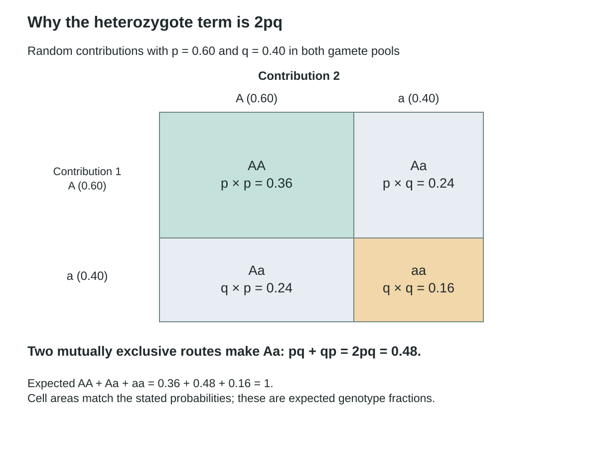
Both gamete pools in this random-combination model contain A at frequency 0.60 and a at 0.40. Products give AA = 0.36, A from contribution 1 with a from contribution 2 = 0.24, a from contribution 1 with A from contribution 2 = 0.24, and aa = 0.16. The two mutually exclusive Aa routes total 2pq = 0.48. Grid widths and heights are weighted by 0.60 and 0.40, so cell areas match the probabilities. These are expected genotype frequencies, not a replacement for observations.
Worked example
Using p = 0.60 and q = 0.40, calculate Hardy–Weinberg expected genotype frequencies and compare them with the observed 36/48/16 sample.
- Calculate p² = 0.36, 2pq = 0.48 and q² = 0.16.
- Check that the three expected frequencies sum to 1.
- Compare with observed genotype frequencies 36/100, 48/100 and 16/100 while keeping observed and expected labels separate.
The observed frequencies match these expectations in this sample. That numerical match alone does not prove that every equilibrium condition holds or that the frequencies will remain constant across generations.
Stop and check
Is 2pq an allele frequency?
Compare your thinking
No. It is the expected heterozygote genotype frequency under the model. p and q describe allele frequencies.
Advanced LearningA fit is evidence, not a complete history6 minutes
A fit is evidence, not a complete history
Build from the core idea: The core explanation introduced allele and genotype frequencies. Extend that idea by distinguishing the cases below.
Different processes can produce a snapshot that resembles equilibrium expectations. A one-time match does not reveal the full mating pattern, migration history or selective conditions. Repeated samples and additional biological observations can test stability and assumptions. The model is useful because it provides a clear expectation against which change or mismatch can be examined, not because a single fit certifies an unchanging population.
Use the match as a baseline for comparison, not a certificate of an unchanged history. Migration, selection and other processes may remain unmeasured. A later generation can test stability while biological observations test the conditions behind the prediction.
In the related worked example: The observed frequencies match these expectations in this sample. That numerical match alone does not prove that every equilibrium condition holds or that the frequencies will remain constant across generations. A one-time numerical fit does not prove every Hardy–Weinberg condition.
A course-authored comparison. Numerical or hypothetical cases are illustrative unless explicitly identified as supplied observations.
| Case or measure | Biological interpretation |
|---|---|
| Snapshot fit | Observed 0.36, 0.48 and 0.16 match the supplied expectations. |
| Stability claim | Needs later samples and evidence about population processes. |
Limitation: A one-time numerical fit does not prove every Hardy–Weinberg condition.
Models and Data Lab: Compare observed counts with equilibrium expectations
Learn · Part 3
Equilibrium assumptions
- large population
- A model condition in which random sampling has a relatively small effect on allele frequencies; it is an approximation, not a fixed universal head count.
- random mating
- Mating in which genotype at the focal locus does not affect partner choice or gamete union.
- no migration
- An equilibrium assumption that no allele copies enter or leave through movement of reproducing individuals or gametes.
- no mutation
- An equilibrium assumption that no new allele changes affect the locus over the modelled interval.
- no selection
- An equilibrium assumption that the compared genotypes do not differ in survival or reproductive contribution.
- mutation
- A change in DNA sequence that can create a new allele; its contribution to a breeding gene pool depends on transmission through reproduction.
- gene flow
- Transfer of alleles among populations when migrants or their gametes reproduce.
- immigration
- Movement into a population that adds individuals to its count.
- mechanism
- The connected biological steps through which an effect occurs.
Hardy–Weinberg equilibrium is a model for a gene pool whose allele frequencies stay stable. It also predicts genotype frequencies. The usual model has five conditions: a very large population, random mating at the locus, no mutation, no migration that changes the gene pool and no selection among genotypes. To understand the list, connect each condition to the change it rules out.
A large population reduces the effects of chance sampling. Random mating allows allele contributions to combine with the p², 2pq and q² probabilities. No mutation means no new allele changes. No gene flow means movement and breeding do not change the allele pool. No selection means the genotypes do not differ in their reproductive contributions. Each condition does a different job; knowing why it matters is more useful than memorizing its name.
Real populations seldom meet every condition perfectly. Use the model as a clear prediction to compare with observations. A match at one locus and one time does not prove every condition was met. Nor does it rule out change at another locus or time. If the counts differ from the prediction, first check the sampling and model assumptions. Then examine biological evidence before choosing a cause.
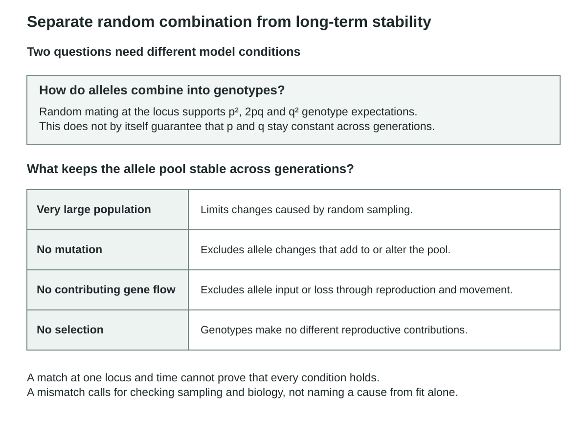
Random mating at the locus supports the genotype combination expectations p², 2pq and q². Stability of allele frequencies across generations also depends on a very large population, no mutation, no contributing gene flow and no differential reproductive contributions among genotypes. Each condition constrains a different process. One matching sample does not establish that every condition holds, and a mismatch alone does not identify its cause.
Watch and make sense of it
Watch for: How the model connects allele frequencies to expected genotype frequencies.
Use this video to revisit the explanation above. You can use the diagram and illustrated walkthrough instead.
Hardy-Weinberg Equilibrium
The player loads when this video is selected.
Worked example
A large population mates randomly at one locus but receives immigrants carrying a different allele frequency. Which part of the Hardy–Weinberg model is challenged?
- Identify gene flow as movement of alleles into the population.
- Recognize that random mating does not cancel a change in allele frequencies caused by immigration.
- Separate conditions affecting genotype arrangement from conditions maintaining allele frequencies across generations.
The no-migration condition is violated. The population could form genotype proportions near p²:2pq:q² after random mating while its p and q have changed through gene flow.
Stop and check
Does being a large population guarantee no selection or mutation?
Compare your thinking
No. Large size reduces the relative importance of random sampling effects in the ideal model but does not remove other evolutionary processes.
Advanced LearningAssumptions answer more than one question6 minutes
Assumptions answer more than one question
Build from the core idea: The core explanation introduced equilibrium assumptions. Extend that idea by distinguishing the cases below.
Hardy–Weinberg reasoning combines a genotype expectation with conditions for stable allele frequencies. A case can satisfy one part while violating another. Name the exact question: predicting a generation's genotype proportions or claiming no allele-frequency change over time. This distinction helps explain why random mating can restore a genotype pattern without erasing changes introduced by migration or selection.
State whether the question concerns genotype proportions or allele-frequency stability. Random pairing can be compatible with a new p and q after immigrants contribute. A near-equilibrium genotype pattern therefore cannot erase evidence that the population's allele frequencies changed.
In the related worked example: The no-migration condition is violated. The population could form genotype proportions near p²:2pq:q² after random mating while its p and q have changed through gene flow. Satisfying one assumption does not establish all conditions for stability over time.
A course-authored comparison. Numerical or hypothetical cases are illustrative unless explicitly identified as supplied observations.
| Case or measure | Biological interpretation |
|---|---|
| Random mating | Can produce genotype proportions based on the current allele pool. |
| Migration | Can change the allele pool before that mating occurs. |
Limitation: Satisfying one assumption does not establish all conditions for stability over time.
Models and Data Lab: Compare observed counts with equilibrium expectations
Learn · Part 4
Solving and checking
- recessive phenotype
- The specified phenotype expressed by a homozygous recessive genotype in a complete-dominance model.
- square root
- A value which, multiplied by itself, gives the original number; q is the nonnegative square root of q².
When you have only phenotype counts, you need extra assumptions to estimate allele frequencies. Suppose the recessive genotype always shows the recessive trait, and Hardy–Weinberg expectations apply. The recessive phenotype fraction then represents q². It is a genotype fraction, not the allele fraction q. Take the square root to find q. Next use p + q = 1 to find p.
Work through a sample with 9% recessive phenotype. First change 9% to 0.09, so q² = 0.09. The square root is 0.30, giving q = 0.30. Subtract from one to get p = 0.70. Now calculate the expected genotypes: p² = 0.49, 2pq = 0.42 and q² = 0.09. Check that 0.49 + 0.42 + 0.09 = 1. To find expected counts, multiply each fraction by population size and explain any rounding.
A question about carriers among dominant-phenotype individuals uses a smaller group. In the same example, that group includes AA and Aa but excludes aa. Its fraction is 0.49 + 0.42 = 0.91. The carriers make up 0.42 of the whole population. Within the dominant-phenotype group, their fraction is 0.42/0.91, or about 0.462. In symbols, this is 2pq/(p² + 2pq). Name the group before dividing so you answer the question asked.
For each answer, state the inheritance and equilibrium assumptions. Show the intermediate steps and label the result. Is it an allele frequency, a genotype frequency, a fraction within a selected group or an expected count? The numbers may come from the same sample, but those labels describe different quantities. A denominator check helps keep them separate.

Assume a fictional fully expressed recessive trait and Hardy–Weinberg conditions. A recessive phenotype frequency of 0.09 represents q², so q = 0.30 and p = 0.70. Expected AA, Aa and aa fractions are 0.49, 0.42 and 0.09; these sum to 1. The whole-population carrier fraction is 0.42. Among dominant-phenotype individuals it is 0.42/(0.49+0.42), approximately 0.4615. The bar widths represent the expected genotype fractions under the assumptions.
Worked example
In a fictional fully penetrant recessive-trait model, 9% of a population shows the recessive phenotype. Assuming Hardy–Weinberg conditions, estimate q, p and the carrier frequency.
- Identify the observed group: 9% show the recessive phenotype. Under the stated assumptions, that group is aa and its fraction is q².
- Convert percent to a fraction: 9/100 = 0.09, so q² = 0.09.
- Find the number whose square is 0.09. Since 0.30 × 0.30 = 0.09, q = 0.30.
- Use p + q = 1. Subtract 0.30 from one to get p = 0.70.
- Carriers are heterozygotes. Their expected fraction is 2pq = 2(0.70)(0.30) = 0.42, or 42%.
- Check the whole: p² + 2pq + q² = 0.49 + 0.42 + 0.09 = 1. The genotype fractions account for the complete population.
The estimated allele frequencies are q = 0.30 and p = 0.70; the expected carrier frequency is 0.42. These are model-based estimates, not directly counted genotypes.
Stop and check
Could q be set equal to 0.09 simply because 9% show the recessive phenotype?
Compare your thinking
No. The phenotype proportion corresponds to q² under this model. q is its square root, not the same quantity.
Advanced LearningA phenotype shortcut has prerequisites6 minutes
A phenotype shortcut has prerequisites
Build from the core idea: The core explanation introduced solving and checking. Extend that idea by distinguishing the cases below.
Inferring q from a recessive phenotype requires the expression model to identify the relevant genotype and the equilibrium model to connect genotype frequency to q². Incomplete phenotype expression, misclassification or departures from the model can invalidate the shortcut. If genotypes are directly observed, count alleles instead. Choosing the method should follow the evidence available rather than always reaching first for a square root.
For 1,000 model plants with 90 recessive individuals, q²=90/1000=0.09 gives q=0.30,p=0.70. Expected counts are 490 dominant homozygotes,420 heterozygotes and 90 recessive homozygotes. The 490+420+90 total is 1,000; this remains an expectation under the stated expression and equilibrium models. Check that each fraction lies from 0 to 1, allele fractions sum to 1, genotype fractions sum to 1 and expected counts sum toN. Keep extra digits until the final answer. For q²=17/240, carrying the square root through the calculation avoids early rounding drift. Extra decimal places do not make a small sample biologically exact.
Use each generation’s own denominator when comparing frequencies. A population can double while an allele fraction stays constant, or shrink while that fraction changes. Say “expected heterozygote frequency under the model,” rather than turning a model result into an observed carrier count. Carrier terminology also requires an appropriate inheritance model.
A course-authored comparison. Numerical or hypothetical cases are illustrative unless explicitly identified as supplied observations.
| Case or measure | Biological interpretation |
|---|---|
| Phenotype-based shortcut | q = √0.09 = 0.30 under the supplied models. |
| Direct genotype counts | Count copies without inferring q from a phenotype. |
Limitation: The 0.42 carrier expectation is not a directly observed carrier count.
Models and Data Lab: Compare observed counts with equilibrium expectations
Learn · Part 5
A model and its limits
- variation
- Differences among organisms arising from genetic recombination, mutation, development, and environmental context.
- natural selection
- Differential reproductive contribution caused by heritable phenotypic differences in an environment.
- uncertainty
- A transparent description of limits in measurement, sampling, models, evidence, or prediction.
A model separates what is observed from what is expected under assumptions. In the supplied gene-pool dataset, the initial AA/Aa/aa counts are 36/48/16, giving p=0.60. The middle observation is 45/45/10, giving p=0.675. The later sample is 42/46/12, giving p=0.65. Each row contains 100 diploid individuals, so the denominator remains 200 allele copies.
These changes show that the observed allele proportions differ across the samples. The middle row is labelled after movement, which provides context, but the counts alone do not isolate movement from every other influence. Sampling, selection or other events could also contribute. Compare observed genotype proportions with the equilibrium expectation calculated from each row's own allele frequency, rather than reusing the initial p for every row.
Plan the investigation by predicting what more evidence would distinguish gene flow from drift or selection. Record counts, copy totals and frequencies with consistent notation. Explain the pattern, consider an alternative and revise a claim that one changed p identifies one cause. The model can predict future observations under stated conditions, but its usefulness depends on testing those conditions. A fit is evidence about a defined comparison, not a certificate of permanent equilibrium.
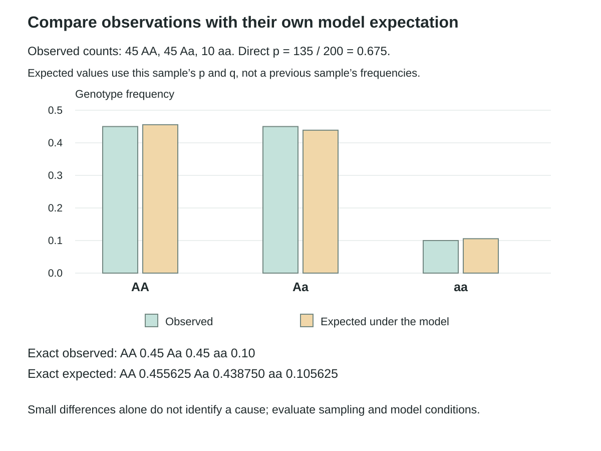
The synthetic observed sample has 45 AA,45 Aa and 10 aa individuals. It contains 135 A copies among 200, giving p = 0.675 and q = 0.325. The observed genotype fractions 0.45,0.45,0.10 are compared with expectations 0.455625,0.438750,0.105625 calculated from this sample’s own p and q. The vertical axis is genotype frequency from 0 to 0.5. Bars show the model difference; exact values accompany them. A small difference alone does not establish selection, drift or gene flow.
Worked example
A sample contains 45 AA, 45 Aa and 10 aa individuals. Calculate p directly and compare the observed genotype frequencies with Hardy–Weinberg expectations.
- Count A copies: 90 + 45 = 135 out of 200, so p = 0.675 and q = 0.325.
- Calculate expectations p² = 0.455625, 2pq = 0.43875 and q² = 0.105625.
- Compare with observed frequencies 0.45, 0.45 and 0.10 without demanding exact equality in a finite sample.
The direct allele count gives p = 0.675. The small observed–expected differences require an appropriate sampling and model assessment before supporting a claim of a particular evolutionary cause.
Stop and check
Would a mismatch uniquely identify natural selection?
Compare your thinking
No. Sampling, mating patterns, migration, measurement and other factors can contribute. A mismatch prompts investigation rather than naming one cause by itself.
Advanced LearningA useful null model can still be incomplete6 minutes
A useful null model can still be incomplete
Build from the core idea: The core explanation introduced a model and its limits. Extend that idea by distinguishing the cases below.
A null model supplies a baseline expectation, not a claim that the world is perfectly simple. Its value lies in making comparisons explicit. If data differ, check the quality of the sample and then compare alternative biological explanations. If data fit, preserve the model as a useful description while recognizing that unmeasured processes may still be operating.
A fit concerns one locus, population and observation time. A different locus or later generation can behave differently. Check all genotype categories, sample size and measurement quality. A formal goodness-of-fit test adds assumptions and uncertainty; a non-significant result does not certify perfect equilibrium or exclude effects too small for the study to detect.
Population allele frequencies cannot rank people’s worth or abilities. Social categories need not describe fixed breeding populations, and group averages hide within-group variation. A model developed for a stated locus is not evidence for a deterministic complex human trait or personal identity.
A course-authored comparison. Numerical or hypothetical cases are illustrative unless explicitly identified as supplied observations.
| Case or measure | Biological interpretation |
|---|---|
| Observed 45/45/10 sample | Direct counting gives p = 0.675. |
| Null-model expectation | Provides a comparison for the same locus, population and time. |
Limitation: A fit or mismatch alone neither identifies a cause nor ranks people's worth or abilities.
Models and Data Lab: Compare observed counts with equilibrium expectations
See the idea in action
Illustrated walkthrough
1. Populations and allele counts
A synthetic sample contains 36 AA, 48 Aa and 16 aa individuals. Each diploid individual has two copies at this autosomal locus: AA contributes two A copies, Aa contributes one of each, and aa contributes two a copies. The totals are 120 A and 80 a among 200 copies. Thus p = 0.60 and q = 0.40. The bar represents allele copies; the circle pairs show the contribution of one individual. Direct counting does not require equilibrium.
A diploid population sample contains 36 AA, 48 Aa and 16 aa individuals. Calculate A and a allele counts and frequencies directly from the observations.
- Count 100 individuals and therefore 200 allele copies at this autosomal locus.
- Count A copies: 2(36) + 48 = 120; count a copies: 2(16) + 48 = 80.
- Divide each count by 200 to obtain p = 0.60 and q = 0.40.
The observed allele frequencies are 0.60 and 0.40. Direct counting does not require assuming Hardy–Weinberg equilibrium.
2. Allele and genotype frequencies
Both gamete pools in this random-combination model contain A at frequency 0.60 and a at 0.40. Products give AA = 0.36, A from contribution 1 with a from contribution 2 = 0.24, a from contribution 1 with A from contribution 2 = 0.24, and aa = 0.16. The two mutually exclusive Aa routes total 2pq = 0.48. Grid widths and heights are weighted by 0.60 and 0.40, so cell areas match the probabilities. These are expected genotype frequencies, not a replacement for observations.
Using p = 0.60 and q = 0.40, calculate Hardy–Weinberg expected genotype frequencies and compare them with the observed 36/48/16 sample.
- Calculate p² = 0.36, 2pq = 0.48 and q² = 0.16.
- Check that the three expected frequencies sum to 1.
- Compare with observed genotype frequencies 36/100, 48/100 and 16/100 while keeping observed and expected labels separate.
The observed frequencies match these expectations in this sample. That numerical match alone does not prove that every equilibrium condition holds or that the frequencies will remain constant across generations.
3. Equilibrium assumptions
Random mating at the locus supports the genotype combination expectations p², 2pq and q². Stability of allele frequencies across generations also depends on a very large population, no mutation, no contributing gene flow and no differential reproductive contributions among genotypes. Each condition constrains a different process. One matching sample does not establish that every condition holds, and a mismatch alone does not identify its cause.
A large population mates randomly at one locus but receives immigrants carrying a different allele frequency. Which part of the Hardy–Weinberg model is challenged?
- Identify gene flow as movement of alleles into the population.
- Recognize that random mating does not cancel a change in allele frequencies caused by immigration.
- Separate conditions affecting genotype arrangement from conditions maintaining allele frequencies across generations.
The no-migration condition is violated. The population could form genotype proportions near p²:2pq:q² after random mating while its p and q have changed through gene flow.
4. Solving and checking
Assume a fictional fully expressed recessive trait and Hardy–Weinberg conditions. A recessive phenotype frequency of 0.09 represents q², so q = 0.30 and p = 0.70. Expected AA, Aa and aa fractions are 0.49, 0.42 and 0.09; these sum to 1. The whole-population carrier fraction is 0.42. Among dominant-phenotype individuals it is 0.42/(0.49+0.42), approximately 0.4615. The bar widths represent the expected genotype fractions under the assumptions.
In a fictional fully penetrant recessive-trait model, 9% of a population shows the recessive phenotype. Assuming Hardy–Weinberg conditions, estimate q, p and the carrier frequency.
- Identify the observed group: 9% show the recessive phenotype. Under the stated assumptions, that group is aa and its fraction is q².
- Convert percent to a fraction: 9/100 = 0.09, so q² = 0.09.
- Find the number whose square is 0.09. Since 0.30 × 0.30 = 0.09, q = 0.30.
- Use p + q = 1. Subtract 0.30 from one to get p = 0.70.
- Carriers are heterozygotes. Their expected fraction is 2pq = 2(0.70)(0.30) = 0.42, or 42%.
- Check the whole: p² + 2pq + q² = 0.49 + 0.42 + 0.09 = 1. The genotype fractions account for the complete population.
The estimated allele frequencies are q = 0.30 and p = 0.70; the expected carrier frequency is 0.42. These are model-based estimates, not directly counted genotypes.
5. A model and its limits
The synthetic observed sample has 45 AA,45 Aa and 10 aa individuals. It contains 135 A copies among 200, giving p = 0.675 and q = 0.325. The observed genotype fractions 0.45,0.45,0.10 are compared with expectations 0.455625,0.438750,0.105625 calculated from this sample’s own p and q. The vertical axis is genotype frequency from 0 to 0.5. Bars show the model difference; exact values accompany them. A small difference alone does not establish selection, drift or gene flow.
A sample contains 45 AA, 45 Aa and 10 aa individuals. Calculate p directly and compare the observed genotype frequencies with Hardy–Weinberg expectations.
- Count A copies: 90 + 45 = 135 out of 200, so p = 0.675 and q = 0.325.
- Calculate expectations p² = 0.455625, 2pq = 0.43875 and q² = 0.105625.
- Compare with observed frequencies 0.45, 0.45 and 0.10 without demanding exact equality in a finite sample.
The direct allele count gives p = 0.675. The small observed–expected differences require an appropriate sampling and model assessment before supporting a claim of a particular evolutionary cause.
Checkpoint
Does direct allele counting from observed diploid genotypes require equilibrium?
Up to 120 characters can be saved in this response. Longer writing stays visible for copying and revision.
No. It uses the observed copies; equilibrium is needed for particular predictions or inference shortcuts.
Retrieve
Retrieve the idea
From 36 AA, 48 Aa and 16 aa, calculate p.
Up to 180 characters can be saved in this response. Longer writing stays visible for copying and revision.
A copies = 2(36) + 48 = 120; all copies = 200, so p = 0.60.
Practise
Guided practice
Question 1
A sample has 40 diploid organisms. What denominator is used to calculate the frequency of an autosomal allele?
Attempt the question to open the feedback.
Correct. Each diploid individual contributes two copies of an autosomal locus, so 40 × 2 = 80 allele copies.
Review this choice. Dividing by two moves in the wrong direction; each organism contributes two copies.
Review this choice. Forty is the denominator for genotype frequency, not allele frequency.
Review this choice. The calculation concerns one locus, not every chromosome pair.
Question 2
Work through this question
From counts: in 100 diploid organisms, AA=36, Aa=48 and aa=16. Calculate p and q.
From the model: calculate the Hardy–Weinberg expectations.
Assumptions: state which calculation needs model assumptions.
Up to 300 characters can be saved in this response. Longer writing stays visible for copying and revision.
Attempt the question to open the feedback.
One complete response
A copies=2×36+48=120 of 200, so p=0.60 and q=0.40. Expected genotype frequencies under the model are p²=0.36, 2pq=0.48 and q²=0.16. Direct allele counting does not require equilibrium; predicted genotype proportions do.
Use 200 allele copies to find .60/.40; the p²/2pq/q² genotype expectations are conditional while direct allele counting is not.
Save your learning
Evidence Slip
Solve one supplied population case and state whether its allele frequency was counted or inferred, including a relevant assumption.
- Show the denominator or q² step.
- Check frequency sums.
- Label observed versus expected and state a model limit.
Up to 300 characters can be saved in this response. Longer writing stays visible for copying and revision.
Before you continue
Attempt the walkthrough checkpoint, check both guided questions, and save your Evidence Slip.
In progress
Lesson 2 · Chapter 19
Mechanisms of Change
How can the same frequency change arise through different mechanisms?
Learning goal
Separate mutation, selection, drift, movement and mating effects, using supplied population data to compare explanations.
Before you begin
Allele frequencies track copies across a defined population. Genotype proportions can change without changing allele totals. A trend alone does not establish its cause.
In the textbook
Chapter 19 · 688 #1–8 (finish as needed) ; 689–696 #8,10–12,14–18,20; 697 #1–5
Four anchor words
Start with four words
These four anchors will help you enter the lesson. The full list below includes the supporting terms.
- mutation
- A change in DNA sequence that can create a new allele; its contribution to a breeding gene pool depends on transmission through reproduction.
- natural selection
- Differential reproductive contribution caused by heritable phenotypic differences in an environment.
- genetic drift
- Random allele-frequency change caused by finite sampling across generations.
- gene flow
- Transfer of alleles among populations when migrants or their gametes reproduce.
All terms used in this lesson (20)
New in this lesson
- relative fitness
- Relative reproductive contribution to future generations in a particular environment.
- genetic drift
- Random allele-frequency change caused by finite sampling across generations.
- bottleneck
- Genetic drift caused by a sharp population reduction that leaves an unrepresentative gene pool.
- founder effect
- Genetic drift when a new population begins from a small, unrepresentative group.
- nonrandom mating
- Mating in which pairings are not independent of the relevant traits or genotypes; it can change genotype proportions without initially changing allele frequencies.
- antibiotic resistance
- The capacity of a bacterial lineage to persist under an antibiotic exposure that inhibits susceptible lineages.
- herbicide resistance
- The capacity of a plant lineage to survive a herbicide exposure that inhibits susceptible lineages.
- selection pressure
- An environmental condition associated with differences in survival or reproductive success among heritable variants.
- replicate
- An independent repetition or sample under a defined condition used to assess variation and reliability.
- control
- A comparison condition or regulated variable used to make an investigation interpretable.
- time series
- Measurements of a specified quantity at multiple stated times.
- alternative explanation
- Another mechanism that could account for the observations and should be tested or qualified.
- time interval
- The elapsed duration between two defined observations.
- sexual selection
- Differences in reproductive contribution associated with success in obtaining mates or fertilizations; distinguish this from nonrandom pairing alone.
Used again
- mutation
- A change in DNA sequence that can create a new allele; its contribution to a breeding gene pool depends on transmission through reproduction.
- variation
- Differences among organisms arising from genetic recombination, mutation, development, and environmental context.
- natural selection
- Differential reproductive contribution caused by heritable phenotypic differences in an environment.
- gene flow
- Transfer of alleles among populations when migrants or their gametes reproduce.
- migration
- Movement into or out of a population; it produces gene flow when it changes the breeding gene pool.
- uncertainty
- A transparent description of limits in measurement, sampling, models, evidence, or prediction.
Learn · Part 1
Mutation and selection
- relative fitness
- Relative reproductive contribution to future generations in a particular environment.
- selection pressure
- An environmental condition associated with differences in survival or reproductive success among heritable variants.
- replicate
- An independent repetition or sample under a defined condition used to assess variation and reliability.
Mutation changes a genetic sequence and can create a new allele. Natural selection changes allele shares when inherited differences affect breeding success in an environment. Relative fitness compares the offspring contributions of different variants under those conditions. Creating a variant and making it more common are different events. The first needs a sequence change; the second concerns copies passed to later generations.
Imagine a bacterial mutation that reduces an antibiotic's effect on a cell target. During exposure, cells with the variant may leave more descendants. The allele can then become more common. Without the drug, it may offer no advantage or may have a cost. Its effect depends on context. The mutation did not appear because the cells knew which treatment would come next.
To support selection, link an inherited difference with unequal survival or reproduction. An allele rising after an environmental change is not enough by itself. Check other explanations, including movement and chance. Compare replicate populations and measure which variants leave descendants. Explain the trait, the condition and the step connecting it to later allele counts. This turns a pattern into a testable mechanism.
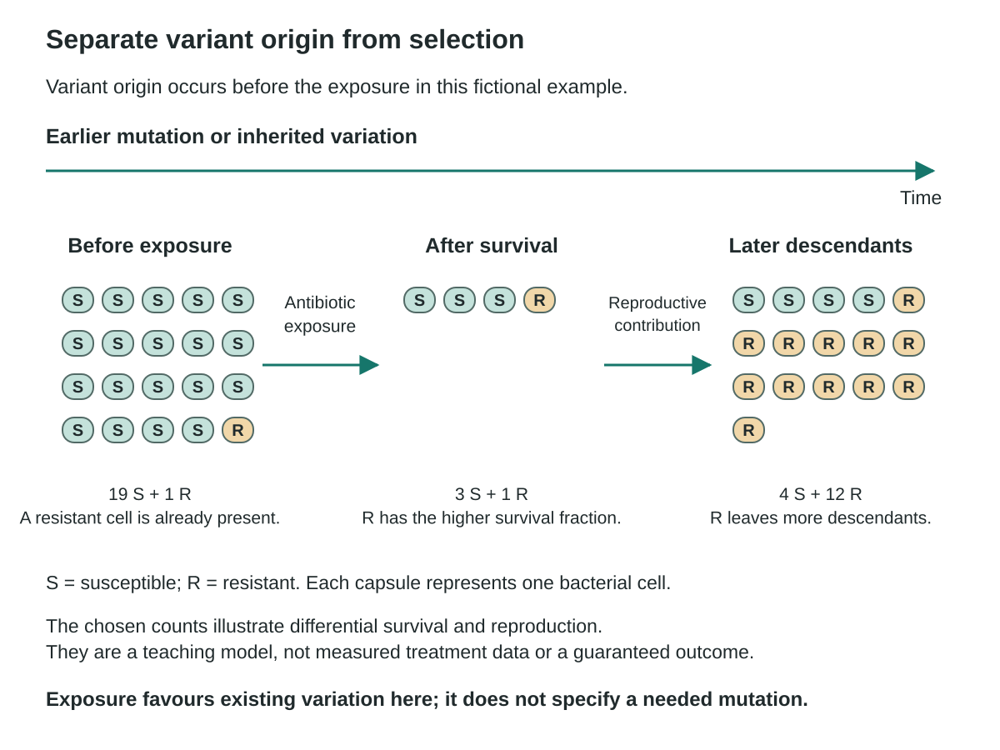
Before exposure, the diagram shows 19 susceptible cells (S) and one resistant cell (R). After survival, it shows three S and one R. A later fictional population has four S and 12 R descendants. The resistant fraction increases from 1/20 to 1/4 to 12/16 through the chosen differential survival and reproductive contributions. Letters identify cell types independently of colour. These counts are an original illustration, not treatment data or a guaranteed outcome. The variant existed before exposure; its presence does not mean bacteria intentionally produced a needed mutation.
Worked example
A fictional bacterial population contains a rare resistance variant before an antibiotic exposure. Its frequency later rises. Separate variant origin from the change in representation.
- Identify mutation or prior inheritance as the source of the existing variant.
- During exposure, compare survival and reproduction of carriers and non-carriers.
- Explain the later frequency change through differential contribution to descendants rather than need-directed mutation.
Selection can increase a pre-existing resistance variant's representation. The exposure does not show that bacteria intentionally produced the exact mutation they needed.
Stop and check
Does natural selection have to create a new allele before it can change allele frequencies?
Compare your thinking
No. It can act on existing heritable variation. Mutation and selection play different roles in the explanation.
Advanced LearningThe environment changes the comparison6 minutes
The environment changes the comparison
Build from the core idea: The core explanation introduced mutation and selection. Extend that idea by distinguishing the cases below.
A variant's effect on reproductive success can depend on the environment. A resistance mechanism might help during one exposure while carrying a cost under another condition. This makes fitness a relationship between a heritable feature and a specified context, not a permanent label meaning strongest or best. A study should compare outcomes under the relevant conditions before predicting how frequencies will change.
Mutation changes sequence; assortment, exchange and fertilization can reshuffle existing variants. A newly arisen allele need not already have reached offspring. Its transmission depends on whether the changed lineage contributes to reproduction. In a sexually reproducing organism, a change confined to body cells usually does not enter offspring through gametes. New does not mean useful, and common does not mean superior.
Selection can shift a trait distribution in one direction, favour intermediate values, or favour separated extremes; these are directional, stabilizing and disruptive patterns. Fitness can also depend on how common a variant is. Competing effects can maintain variation. Demonstrate inherited differences in reproductive contribution before assigning one of these mechanisms from a frequency curve alone.
A course-authored comparison. Numerical or hypothetical cases are illustrative unless explicitly identified as supplied observations.
| Case or measure | Biological interpretation |
|---|---|
| Variant origin | Mutation supplies a new sequence variant. |
| Changing representation | Selection can increase a pre-existing variant in a stated environment. |
Limitation: Fitness is contextual, not a permanent label meaning strongest or best.
Related worked example: Worked example: Mutation and selection
Learn · Part 2
Chance and population size
- genetic drift
- Random allele-frequency change caused by finite sampling across generations.
- bottleneck
- Genetic drift caused by a sharp population reduction that leaves an unrepresentative gene pool.
- founder effect
- Genetic drift when a new population begins from a small, unrepresentative group.
Genetic drift is random change in allele frequency caused by sampling between generations. Even if genotypes have equal expected reproductive success, the actual allele copies transmitted can differ by chance. The relative effect is often stronger in small populations. Independent small populations can therefore change in different directions under similar conditions, without each change representing an adaptive improvement.
A bottleneck is a sharp population reduction that leaves a small sample of the previous gene pool. A founder effect occurs when a small group establishes a new population with only part of the source variation. Both involve sampling. The surviving or founding group's allele frequencies can differ from the source, and some alleles may be missing simply because their carriers were not included.
Consider three isolated model populations starting at p=0.50 and later showing 0.10, 0.70 and 0.40. Divergent directions fit a drift explanation, particularly if sizes are small and conditions are matched. Selection or different environments remain alternatives unless tested. Record replicate sizes and conditions before assigning a cause. Drift does not reliably favour the allele that seems best suited to an environment.

All illustrative populations begin at p = 0.50. Three small populations with ten contributors are shown at p = 0.10, 0.70 and 0.40; three populations with 1000 contributors are illustrated at 0.49, 0.51 and 0.50. Both displays use the same 0–1 scale. These selected outcomes illustrate the stronger proportional effect of random sampling in small populations; three chosen points do not establish the sampling distribution. Drift can still occur in large finite populations. A founder event establishes a new population through colonists; a bottleneck sharply reduces an existing population. Both can alter sampled allele representation without guaranteeing adaptation.
Watch and make sense of it
Watch for: How chance can change allele frequencies, especially in small populations.
Use this video to revisit the explanation above. You can use the diagram and illustrated walkthrough instead.
Genetic Drift
The player loads when this video is selected.
Watch on YouTubeIllustrated walkthrough: Mechanisms of Change
Worked example
Two simulated populations begin with p = 0.50. One samples ten reproductive contributors and the other samples one thousand. Predict which is more likely to show large random frequency swings and distinguish founder and bottleneck cases.
- Recognize random sampling as the mechanism in both simulations.
- A smaller sample generally shows larger proportional fluctuations.
- A founder event samples colonists from a source; a bottleneck sharply reduces an existing population before later recovery.
The smaller population is more prone to large random swings in this model. Founder and bottleneck effects are different histories that can both intensify drift.
Stop and check
Does a random increase in an allele prove that it improved survival?
Compare your thinking
No. Drift can change representation without a selective advantage. A fitness claim requires additional evidence.
Advanced LearningRecovery of numbers need not restore lost variants6 minutes
Recovery of numbers need not restore lost variants
Build from the core idea: The core explanation introduced chance and population size. Extend that idea by distinguishing the cases below.
A population can regain its former size after a bottleneck while retaining a changed allele distribution. Growth copies the variants that remain; it does not automatically reconstruct those lost by chance. Mutation or migration may later add variants, but those are separate processes. This distinction explains why population size and genetic diversity should be measured separately in a conservation study.
Gene flow and drift can operate together. Incoming breeding contributions often make connected populations more alike, with the effect depending on migrant numbers and allele frequencies relative to residents. Drift can remove rare variants or change their representation without favouring useful traits. Compare movement records and replicate small-population trajectories instead of using one direction of change as a diagnosis.
Measure diversity separately from abundance. Growth reproduces the remaining variants, whereas migration or mutation would add variants through different processes. Replicate small-population trajectories and movement evidence help distinguish chance loss from an incoming contribution. Restored population size does not establish restored genetic diversity.
A course-authored comparison. Numerical or hypothetical cases are illustrative unless explicitly identified as supplied observations.
| Case or measure | Biological interpretation |
|---|---|
| Numerical recovery | Population size can rise after a bottleneck. |
| Genetic recovery | Lost variants are not automatically restored by copying survivors. |
Limitation: Restored population size does not establish restored genetic diversity.
Related worked example: Worked example: Chance and population size
Learn · Part 3
Movement and mating
- nonrandom mating
- Mating in which pairings are not independent of the relevant traits or genotypes; it can change genotype proportions without initially changing allele frequencies.
- time interval
- The elapsed duration between two defined observations.
- sexual selection
- Differences in reproductive contribution associated with success in obtaining mates or fertilizations; distinguish this from nonrandom pairing alone.
Gene flow occurs when movement between populations adds a genetic contribution to the receiving group. Immigrants can bring different allele copies when they breed. Emigrants can remove copies from the group they leave. A frequency need not change if the incoming or outgoing group has the same allele proportions. Movement alone does not guarantee a particular genetic result.
Nonrandom mating changes which alleles combine in offspring. Mating among relatives or similar genotypes can raise homozygosity compared with random mating. It can change genotype frequencies without changing allele frequencies at first. The same copies are being combined differently. Keep this separate from a process that adds copies, removes them or changes which copies reach the next generation.
Define the population boundary. A group joining an existing breeding population can produce gene flow. A few organisms founding an isolated population can create a founder effect. Both involve movement but different genetic comparisons. State where breeding occurs and which copies enter or leave. Then identify whether the question asks about allele shares or the genotypes formed from those alleles.
Sexual selection occurs when a heritable feature affects success in obtaining mates or contributing offspring. Mate choice and competition for mates can produce such differences. A feature may improve mating success while carrying a survival cost. This is not identical to every form of nonrandom pairing. When unequal reproductive contribution changes allele representation, a selection process is involved; simply rearranging the same alleles into different pairs describes a different effect.
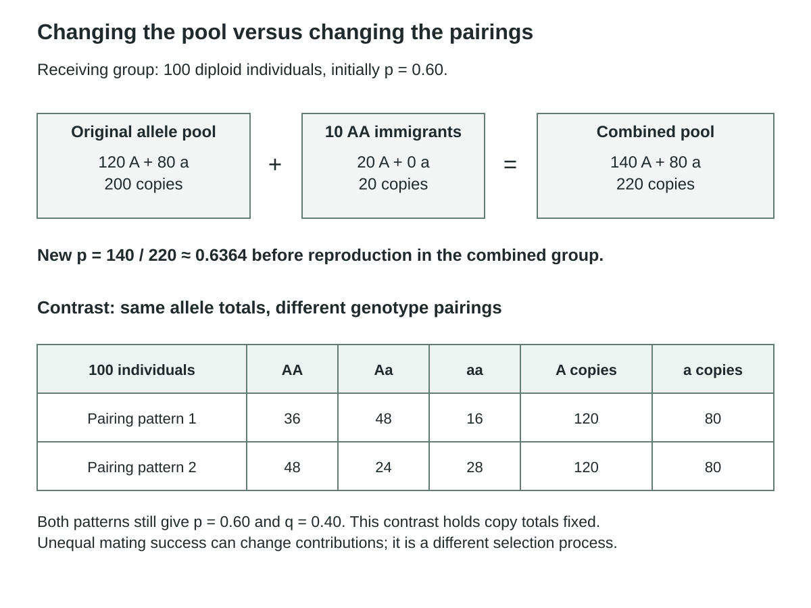
The receiving population initially has 100 diploid individuals with 120 A and 80 a copies. Ten AA immigrants add 20 A copies, giving 140 A among 220 total copies and p ≈ 0.6364 before reproduction in the combined group. A separate fixed-pool comparison uses 36 AA, 48 Aa and 16 aa versus 48 AA, 24 Aa and 28 aa. Each arrangement has 100 individuals, 120 A copies and 80 a copies, so p = 0.60 and q = 0.40 in both. The genotype proportions differ. This holds allele contributions fixed; sexual selection with unequal reproductive success can instead change allele representation.
Worked example
A receiving population has 100 diploid individuals with p = 0.60. Ten immigrants each carry AA. Calculate the new allele frequency before reproduction, then contrast a change in mating pattern alone.
- The original population has 120 A copies among 200 total copies.
- Add 20 A copies from ten AA immigrants, giving 140/220.
- Calculate p ≈ 0.6364; a mating-pattern change without differential reproduction or other forces can instead alter genotype proportions while leaving allele counts unchanged.
Immigration changes p to about 0.6364 in this model. Non-random mating alone need not change p and q, even when it changes heterozygote frequency.
Stop and check
If heterozygotes become less common, must one allele also have become less common?
Compare your thinking
No. Genotype proportions can change while the allele totals remain the same. Count the copies to test that claim.
Advanced LearningDefine the population boundary6 minutes
Define the population boundary
Build from the core idea: The core explanation introduced movement and mating. Extend that idea by distinguishing the cases below.
An immigrant enters one population while leaving another. The measured effect depends on the boundary, time interval and reproductive contribution used in the study. Temporary movement may differ from successful gene flow into later generations. A clear model states whether it counts current residents, breeding individuals or descendant contributions. Without that definition, two studies can report different changes while measuring different populations.
A heterozygote deficit can reflect relatives mating, similar partners pairing, selection, scoring errors or pooling distinct subpopulations. The same pattern therefore needs different possible tests: parentage, genotype-specific survival, repeated scoring and spatial samples. Compare migrant frequencies and actual breeding contributions before attributing a shift to gene flow.
Define whether the count concerns current residents or later breeding contributions. An arrival changes the resident ledger in this example, while successful gene flow into descendants requires reproduction. A mating-pattern change alone can alter genotype proportions without the same allele-count change. Population boundaries and time intervals must match the claimed gene-flow effect.
A course-authored comparison. Numerical or hypothetical cases are illustrative unless explicitly identified as supplied observations.
| Case or measure | Biological interpretation |
|---|---|
| Before immigration | 120 A copies among 200 total copies: p = 0.60. |
| After ten AA immigrants | 140 A among 220 copies: p ≈ 0.6364. |
Limitation: Population boundaries and time intervals must match the claimed gene-flow effect.
Models and Data Lab: Compare observed counts with equilibrium expectations
Learn · Part 4
Resistance and evidence
- antibiotic resistance
- The capacity of a bacterial lineage to persist under an antibiotic exposure that inhibits susceptible lineages.
- herbicide resistance
- The capacity of a plant lineage to survive a herbicide exposure that inhibits susceptible lineages.
- control
- A comparison condition or regulated variable used to make an investigation interpretable.
- alternative explanation
- Another mechanism that could account for the observations and should be tested or qualified.
Resistance allows a lineage to persist or breed under an agent that limits susceptible organisms. Antibiotic resistance concerns microbes; herbicide resistance can concern plants. A DNA change or uptake of existing genetic material can alter a target, transport process or another cell function. The word resistant names a result. The specific mechanism still needs evidence about what changed in the cell.
Exposure can favour resistant variants that were already present. If those variants leave more descendants, their share rises. Repeated use of an agent can therefore change a population's makeup. This is selection on variation, not a choice by the population to make a useful mutation. Compare exposed and unexposed groups. Molecular data can then help identify the cell process behind the advantage.
A technology can bring benefits and unintended costs. A fictional farm programme may improve weed control while favouring resistant weeds or affecting other organisms. Compare crop results, genes, ecological effects, cost and uncertainty. Revise the programme using that evidence and name what to monitor. The model explains population change. It does not prescribe a person's medical treatment or a specific farm chemical plan.
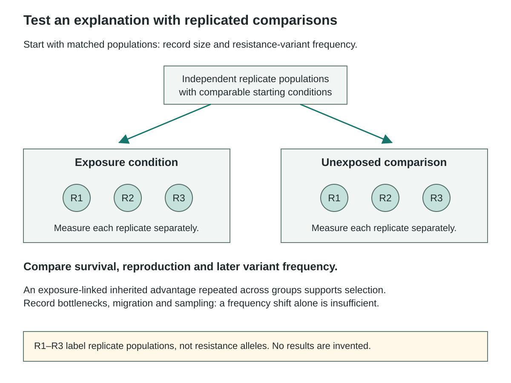
Begin with comparable population size and resistance-variant frequency. The diagram branches into exposed and unexposed sets, each containing three independent replicate populations. R1–R3 identify replicates, not resistance alleles. Measure survival, reproductive contribution and later variant frequency for each replicate. An inherited advantage linked repeatedly to exposure supports selection more directly than a frequency change alone. Record bottlenecks, migration and sampling to evaluate alternatives. This design schematic supplies no measured results.
Worked example
An antibiotic-exposed sample becomes enriched for a resistance allele. A comparison sample also changes, but it passed through a severe random bottleneck. What evidence could separate selection from drift?
- Compare replicated exposed and unexposed groups under similar sampling conditions.
- Measure whether the allele is associated with differential survival or reproduction during exposure.
- Track bottlenecks and starting frequencies so random sampling remains an explicit alternative.
A repeated exposure-linked advantage would support selection more directly than a frequency change alone. A bottleneck can change frequencies by chance and must be considered.
Stop and check
Can every individual becoming acclimated explain a heritable allele-frequency change across generations?
Compare your thinking
No. Individual physiological adjustment and population genetic change are different phenomena. The evidence must track inherited variants and descendant contribution.
Advanced LearningSimilar outcomes can have different causes6 minutes
Similar outcomes can have different causes
Build from the core idea: The core explanation introduced resistance and evidence. Extend that idea by distinguishing the cases below.
An increasing allele frequency is an outcome shared by several mechanisms. To identify a cause, look for evidence unique to a proposed pathway, such as an exposure-dependent reproductive difference or documented immigration. A stronger study also measures alternatives. This causal discipline prevents a familiar resistance example from becoming a rule that every frequency increase must be selection.
An increasing resistance fraction is a result shared by more than one pathway. Measure alternatives rather than assigning selection from the direction of change alone. Exposure comparisons and replicated bottleneck trajectories address different causal possibilities.
In the related worked example: A repeated exposure-linked advantage would support selection more directly than a frequency change alone. A bottleneck can change frequencies by chance and must be considered. Frequency increase alone does not uniquely establish selection.
A course-authored comparison. Numerical or hypothetical cases are illustrative unless explicitly identified as supplied observations.
| Case or measure | Biological interpretation |
|---|---|
| Selection evidence | An exposure-linked reproductive advantage repeated under controls. |
| Drift evidence | Random changes associated with a small contributing population. |
Limitation: Frequency increase alone does not uniquely establish selection.
Related worked example: Worked example: Resistance and evidence
Learn · Part 5
Testing explanations
- time series
- Measurements of a specified quantity at multiple stated times.
A time series records data at several points. It can show that an allele's share changed, but more evidence is needed to explain why. A control gives a reference condition. A replicate repeats a comparison independently. Together, these help test whether a pattern is consistent or could reflect chance, a single unusual event or a measurement problem.
To compare selection with drift, keep the model environments similar and record each population's size. Consistent change linked to breeding success supports selection. Different directions among small replicates can support drift. To test gene flow, record movement and the alleles of those that breed. A single curve may fit several causes if these other observations are missing.
State the strongest supported claim and its limit. An allele increased is an observation. Selection caused the increase is an inference. Name an alternative and predict a result that would support it. Revise the model when new evidence warrants a change. Keep the original counts visible so the new explanation can be checked against the same data rather than replacing the observations.

The three 100-individual samples contain AA/Aa/aa counts of 36/48/16, 45/45/10 and 42/46/12. Direct counting with p = (2 × AA + Aa)/(2N) gives 0.60, 0.675 and 0.65. The vertical frequency axis spans 0 to 1. The horizontal axis records sampling order; intervals were not supplied, so the line does not establish a change rate. The observed pattern rises and then declines. It does not establish selection, drift, migration or sampling as the unique cause.
Worked example
The supplied population samples are 36/48/16, 45/45/10 and 42/46/12 for AA/Aa/aa. Calculate p for each and evaluate “the allele rose steadily because of selection.”
- Use the two-copy denominator in each 100-individual sample.
- Calculate p values 0.60, 0.675 and 0.65.
- Notice the rise followed by a decline, then ask what evidence distinguishes selection from drift, migration and sampling.
The allele did not rise steadily. The observations show a changing sampled frequency, while the cause remains unresolved without further evidence.
Stop and check
Which part of the claim can these counts directly refute?
Compare your thinking
The claim of a steady rise: the third sampled p is lower than the second. They do not by themselves establish a unique alternative mechanism.
Advanced LearningRevision should preserve what the data do show6 minutes
Revision should preserve what the data do show
Build from the core idea: The core explanation introduced testing explanations. Extend that idea by distinguishing the cases below.
Rejecting an overclaim does not require discarding the observations. Keep the measured sequence, identify the false trend description and separate that correction from the causal uncertainty. Then propose a targeted next observation, such as migration records or genotype-specific reproductive outcomes. A revised explanation is strongest when it becomes both more accurate and more testable.
Keep the calculated sequence while correcting the overclaim. The pattern supports sampled change but leaves its cause unresolved. Migration records or genotype-specific reproductive outcomes would be more discriminating than merely repeating the word selection beside the graph.
In the related worked example: The allele did not rise steadily. The observations show a changing sampled frequency, while the cause remains unresolved without further evidence. A corrected trend description still does not identify the evolutionary cause.
A course-authored comparison. Numerical or hypothetical cases are illustrative unless explicitly identified as supplied observations.
| Case or measure | Biological interpretation |
|---|---|
| Supplied successive p values | 0.60, 0.675 and 0.65 from the three genotype samples. |
| Trend interpretation | Rise followed by a fall, not a steady increase. |
Limitation: A corrected trend description still does not identify the evolutionary cause.
Models and Data Lab: Compare observed counts with equilibrium expectations
See the idea in action
Illustrated walkthrough
1. Mutation and selection
Before exposure, the diagram shows 19 susceptible cells (S) and one resistant cell (R). After survival, it shows three S and one R. A later fictional population has four S and 12 R descendants. The resistant fraction increases from 1/20 to 1/4 to 12/16 through the chosen differential survival and reproductive contributions. Letters identify cell types independently of colour. These counts are an original illustration, not treatment data or a guaranteed outcome. The variant existed before exposure; its presence does not mean bacteria intentionally produced a needed mutation.
A fictional bacterial population contains a rare resistance variant before an antibiotic exposure. Its frequency later rises. Separate variant origin from the change in representation.
- Identify mutation or prior inheritance as the source of the existing variant.
- During exposure, compare survival and reproduction of carriers and non-carriers.
- Explain the later frequency change through differential contribution to descendants rather than need-directed mutation.
Selection can increase a pre-existing resistance variant's representation. The exposure does not show that bacteria intentionally produced the exact mutation they needed.
2. Chance and population size
All illustrative populations begin at p = 0.50. Three small populations with ten contributors are shown at p = 0.10, 0.70 and 0.40; three populations with 1000 contributors are illustrated at 0.49, 0.51 and 0.50. Both displays use the same 0–1 scale. These selected outcomes illustrate the stronger proportional effect of random sampling in small populations; three chosen points do not establish the sampling distribution. Drift can still occur in large finite populations. A founder event establishes a new population through colonists; a bottleneck sharply reduces an existing population. Both can alter sampled allele representation without guaranteeing adaptation.
Two simulated populations begin with p = 0.50. One samples ten reproductive contributors and the other samples one thousand. Predict which is more likely to show large random frequency swings and distinguish founder and bottleneck cases.
- Recognize random sampling as the mechanism in both simulations.
- A smaller sample generally shows larger proportional fluctuations.
- A founder event samples colonists from a source; a bottleneck sharply reduces an existing population before later recovery.
The smaller population is more prone to large random swings in this model. Founder and bottleneck effects are different histories that can both intensify drift.
3. Movement and mating
The receiving population initially has 100 diploid individuals with 120 A and 80 a copies. Ten AA immigrants add 20 A copies, giving 140 A among 220 total copies and p ≈ 0.6364 before reproduction in the combined group. A separate fixed-pool comparison uses 36 AA, 48 Aa and 16 aa versus 48 AA, 24 Aa and 28 aa. Each arrangement has 100 individuals, 120 A copies and 80 a copies, so p = 0.60 and q = 0.40 in both. The genotype proportions differ. This holds allele contributions fixed; sexual selection with unequal reproductive success can instead change allele representation.
A receiving population has 100 diploid individuals with p = 0.60. Ten immigrants each carry AA. Calculate the new allele frequency before reproduction, then contrast a change in mating pattern alone.
- The original population has 120 A copies among 200 total copies.
- Add 20 A copies from ten AA immigrants, giving 140/220.
- Calculate p ≈ 0.6364; a mating-pattern change without differential reproduction or other forces can instead alter genotype proportions while leaving allele counts unchanged.
Immigration changes p to about 0.6364 in this model. Non-random mating alone need not change p and q, even when it changes heterozygote frequency.
4. Resistance and evidence
Begin with comparable population size and resistance-variant frequency. The diagram branches into exposed and unexposed sets, each containing three independent replicate populations. R1–R3 identify replicates, not resistance alleles. Measure survival, reproductive contribution and later variant frequency for each replicate. An inherited advantage linked repeatedly to exposure supports selection more directly than a frequency change alone. Record bottlenecks, migration and sampling to evaluate alternatives. This design schematic supplies no measured results.
An antibiotic-exposed sample becomes enriched for a resistance allele. A comparison sample also changes, but it passed through a severe random bottleneck. What evidence could separate selection from drift?
- Compare replicated exposed and unexposed groups under similar sampling conditions.
- Measure whether the allele is associated with differential survival or reproduction during exposure.
- Track bottlenecks and starting frequencies so random sampling remains an explicit alternative.
A repeated exposure-linked advantage would support selection more directly than a frequency change alone. A bottleneck can change frequencies by chance and must be considered.
5. Testing explanations
The three 100-individual samples contain AA/Aa/aa counts of 36/48/16, 45/45/10 and 42/46/12. Direct counting with p = (2 × AA + Aa)/(2N) gives 0.60, 0.675 and 0.65. The vertical frequency axis spans 0 to 1. The horizontal axis records sampling order; intervals were not supplied, so the line does not establish a change rate. The observed pattern rises and then declines. It does not establish selection, drift, migration or sampling as the unique cause.
The supplied population samples are 36/48/16, 45/45/10 and 42/46/12 for AA/Aa/aa. Calculate p for each and evaluate “the allele rose steadily because of selection.”
- Use the two-copy denominator in each 100-individual sample.
- Calculate p values 0.60, 0.675 and 0.65.
- Notice the rise followed by a decline, then ask what evidence distinguishes selection from drift, migration and sampling.
The allele did not rise steadily. The observations show a changing sampled frequency, while the cause remains unresolved without further evidence.
Checkpoint
Can non-random mating alone alter genotype proportions without changing p and q?
Up to 120 characters can be saved in this response. Longer writing stays visible for copying and revision.
Yes, under the stated model without other forces or differential reproductive contribution.
Retrieve
Retrieve the idea
Do the sampled p values 0.60, 0.675 and 0.65 show a steady rise?
Up to 180 characters can be saved in this response. Longer writing stays visible for copying and revision.
No. They rise and then decline; the mechanism also remains unresolved from those counts alone.
Practise
Guided practice
Question 1
Which process is the ultimate source of a new allele sequence?
Attempt the question to open the feedback.
Correct. Mutation changes DNA sequence; the other processes change combinations or frequencies of existing alleles.
Review this choice. Assortment reshuffles homologous chromosomes but does not create a new sequence.
Review this choice. Fertilization combines existing gamete alleles.
Review this choice. Drift changes the representation of existing alleles.
Question 2
Three isolated populations start at p=0.5. After ten generations their p values are 0.1, 0.7 and 0.4. Compare drift with selection and propose evidence that could distinguish them.
Up to 440 characters can be saved in this response. Longer writing stays visible for copying and revision.
Attempt the question to open the feedback.
One complete response
Different directions among replicate populations fit random drift, especially at small size. Selection could still differ among environments. Compare population sizes, environmental conditions and genotype-specific reproductive contributions, and repeat samples. Shared conditions with random divergent outcomes strengthen a drift explanation.
Divergent .10/.70/.40 endpoints fit drift but do not exclude distinct selection; compare size, conditions and reproductive contribution.
Save your learning
Evidence Slip
Revise a selection or resistance claim with a measured frequency change, a mechanism and one alternative needing evidence.
- Cite the counts or frequencies.
- Separate origin from changing representation.
- Name a discriminating follow-up.
Up to 300 characters can be saved in this response. Longer writing stays visible for copying and revision.
Before you continue
Attempt the walkthrough checkpoint, check both guided questions, and save your Evidence Slip.
In progress
Lesson 3 · Chapter 20
Population Growth
How do boundaries, units and time affect a population-growth answer?
Learning goal
Estimate abundance and density, calculate demographic change and rates, and compare bounded growth models.
Before you begin
Counts, area and elapsed time have different units. Population gains and losses must use one boundary and interval. A model equation expresses specified assumptions, not every cause.
In the textbook
Chapter 20 · 705–709 #1–7; 711 Practice Problems 1–6; 716 #2–4
Four anchor words
Start with four words
These four anchors will help you enter the lesson. The full list below includes the supporting terms.
- density
- The number of individuals per unit area or volume.
- growth rate
- Change in population size divided by elapsed time, such as individuals per day.
- per capita growth rate
- In this curriculum, population change divided by the initial population over a stated interval; a time-normalized rate must be labelled separately.
- carrying capacity
- The population size an environment can sustain over time under stated conditions.
All terms used in this lesson (26)
New in this lesson
- density
- The number of individuals per unit area or volume.
- distribution
- The spatial pattern of individuals, commonly described as clumped, uniform, or approximately random at a stated scale.
- quadrat
- A defined sampling area used to count or measure organisms in a habitat.
- transect
- A defined line or strip along which observations are collected across a habitat.
- mark-recapture
- A sampling method that estimates population size from marked individuals later recaptured in a second sample.
- representative sample
- A sample selected in a way that supports inference to the intended population without known systematic bias.
- natality
- Births adding individuals to a population during a stated interval.
- mortality
- Deaths removing individuals from a population during a stated interval.
- emigration
- Movement out of a population that removes individuals from its count.
- open population
- A population whose size or gene pool can change through immigration and emigration as well as local births/deaths.
- closed population
- A model population with no immigration or emigration during the stated interval.
- growth rate
- Change in population size divided by elapsed time, such as individuals per day.
- per capita growth rate
- In this curriculum, population change divided by the initial population over a stated interval; a time-normalized rate must be labelled separately.
- biotic potential
- A population's capacity to increase under favourable conditions, before specified environmental limits reduce realized growth.
- environmental resistance
- The combined limiting factors and losses that reduce realized population increase.
- carrying capacity
- The population size an environment can sustain over time under stated conditions.
- J curve
- The increasing population-size curve associated with exponential growth under stated favourable conditions.
- S curve
- The sigmoidal population-size curve associated with a simple logistic model approaching its carrying capacity.
- density dependence
- A relationship in which an effect or per-capita rate changes as population density changes.
- density independence
- Describes an effect that is not systematically related to population density over the observed range.
- overshoot
- A temporary rise of population size above the environment’s current carrying capacity.
- time lag
- A delay between a change in conditions and the resulting population response.
Used again
- population size
- The number of individuals, N, inside a defined population boundary.
- area
- The two-dimensional extent of a region, measured in square units.
- immigration
- Movement into a population that adds individuals to its count.
- time interval
- The elapsed duration between two defined observations.
Learn · Part 1
Size and density
- density
- The number of individuals per unit area or volume.
- distribution
- The spatial pattern of individuals, commonly described as clumped, uniform, or approximately random at a stated scale.
Population size is the number of individuals within a stated boundary. Density expresses that count per unit area or volume. For a two-dimensional habitat, Dp=N/A; for a three-dimensional sample, Dp=N/V. Units matter. Forty plants in five square metres gives eight plants per square metre, while forty organisms in five millilitres gives eight organisms per millilitre.
Distribution describes where organisms are located within the boundary. A uniform pattern is relatively evenly spaced, a clumped pattern concentrates individuals in patches, and a random pattern lacks the specified spatial structure at the scale examined. Resource patches, reproduction and interactions can influence these patterns. A species does not have one immutable distribution under every environmental condition or observation scale.
Converting density to an abundance estimate requires the habitat area or volume and a representative density. A density of six plants per square metre across 200 square metres predicts about 1,200 plants. If the sample came only from a dense patch, that extrapolation could be biased. Keep measured sample density, study-area size and inferred total abundance separate in both the calculation and the explanation.

Each upper square represents one hectare containing 20 individuals. The 12-square habitat holds 240 individuals; the five-square habitat holds 100. Both give 20 individuals per hectare. In the separate lower comparison, each equal-area panel contains nine individuals, represented by nine dots. The panels show uniform, clumped and illustrative random arrangements. Equal density need not imply equal total size or the same spatial distribution. A single pictured arrangement does not prove the process that produced it.
Worked example
A fictional area contains 240 individuals in 12 hectares. Calculate density and explain why the same density could occur in a population of a different total size.
- Divide the count by area: 240/12 = 20.
- Attach units: 20 individuals per hectare.
- Construct a comparison such as 100 individuals in 5 hectares, also 20 per hectare, while retaining different population totals.
Density is 20 individuals/ha. Equal density does not imply equal total population size or identical spatial arrangement.
Stop and check
Would “20 individuals” be a complete answer to this density question?
Compare your thinking
No. It omits the area denominator. Density must include the relevant area or volume unit.
Advanced LearningScale can change the pattern6 minutes
Scale can change the pattern
Build from the core idea: The core explanation introduced size and density. Extend that idea by distinguishing the cases below.
A population may look evenly distributed at one spatial scale and clustered at another. Density over an entire region can hide dense patches and empty areas. State the sampling boundary and resolution when comparing sites. This matters when resource use, contact rates or habitat requirements depend on local crowding rather than only the region-wide average.
Patchy resources, social groups or dispersal can produce clumps. Territoriality or local competition can contribute to uniform spacing. A random model needs an explicit spatial scale and independence assumptions. Similar-looking patterns can have different causes; compare resource and interaction evidence before assigning a mechanism from a map.
Specify the spatial scale before interpreting the pattern. Two populations can share the same density but differ in total number and local crowding. Resource and interaction evidence is needed before attributing a clumped or uniform map to a single mechanism. An average density does not describe all local contact rates or habitat use.
A course-authored comparison. Numerical or hypothetical cases are illustrative unless explicitly identified as supplied observations.
| Case or measure | Biological interpretation |
|---|---|
| Region-wide density | 240/12 = 20 individuals per hectare. |
| Local distribution | May contain crowded patches and unoccupied areas. |
Limitation: An average density does not describe all local contact rates or habitat use.
Models and Data Lab: Separate density from demographic change
Learn · Part 2
Sampling populations
- quadrat
- A defined sampling area used to count or measure organisms in a habitat.
- transect
- A defined line or strip along which observations are collected across a habitat.
- mark-recapture
- A sampling method that estimates population size from marked individuals later recaptured in a second sample.
- representative sample
- A sample selected in a way that supports inference to the intended population without known systematic bias.
- closed population
- A model population with no immigration or emigration during the stated interval.
A quadrat defines a known sample area in which organisms are counted. A transect follows a line or strip across a habitat, allowing comparison along a spatial gradient. Representative placement and consistent detection rules are essential. Convenience sampling can overrepresent accessible areas or unusually dense patches. State the population boundary, sampling method and what counts as an individual before collecting or reading numbers.
In the supplied data, five one-square-metre quadrats contain 2, 8, 4, 10 and 6 plants. The total is 30 plants in five square metres, giving a mean density of six per square metre. Multiplying by the 200-square-metre habitat gives an estimate of 1,200 plants. The variable counts show spatial differences, so repeated representative samples would help assess uncertainty.
Mark–recapture provides another model for mobile organisms. If 40 were marked first, 50 are caught later and 10 of those are marked, a simple estimate is 40×50/10=200. This assumes suitable mixing, retained marks, comparable capture probability and approximate population closure between samples. In the online investigation, evaluate the supplied observations and sampling design rather than handling organisms. Explain how changed detection or placement could alter an estimate without a true population change.
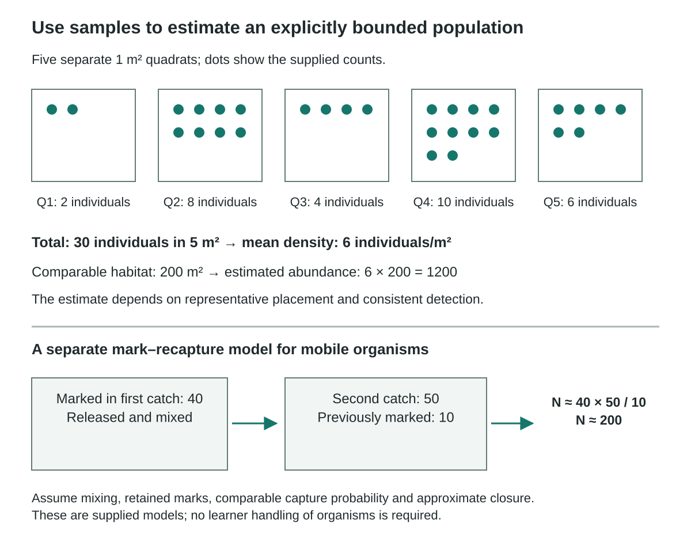
Five separate one-square-metre quadrats contain 2, 8, 4, 10 and 6 individuals. The corresponding dots can be counted directly. Their total is 30 individuals in five square metres, giving a mean of six individuals per square metre. Extrapolation to a comparable 200-square-metre habitat gives an estimated 1200 individuals, conditional on representative placement and consistent detection. In a separate mobile-organism example, 40 individuals are marked and released; a later catch of 50 contains 10 marked individuals. The simple estimate is 40 × 50 / 10 = 200. It assumes suitable mixing, retained marks, comparable capture probability and approximate closure. These are supplied observations and models, with no required handling of organisms.
Worked example
Five one-square-metre quadrats contain 2, 8, 4, 10 and 6 individuals. Estimate abundance in a comparable 200 m² habitat.
- Add the counts: 30 individuals across 5 m².
- Calculate mean density: 30/5 = 6 individuals/m².
- Multiply by 200 m² to estimate 1200 individuals, assuming the sample represents the habitat.
The estimate is 1200 individuals. It is not a complete census; patchiness, sampling placement and detection can affect its reliability.
Stop and check
Would deliberately placing every quadrat in the densest visible patch support an unbiased whole-habitat estimate?
Compare your thinking
No. That placement would overrepresent dense patches. A suitable random or justified stratified design is needed.
Advanced LearningStratification can improve representation6 minutes
Stratification can improve representation
Build from the core idea: The core explanation introduced sampling populations. Extend that idea by distinguishing the cases below.
If a habitat contains clearly different zones, a sampling plan can sample each zone and weight its estimate by zone area. This can be more informative than treating all space as interchangeable. The weights must reflect the actual habitat, not equal numbers of quadrats alone. Record the design before sampling so that the estimate's assumptions can be evaluated.
Random or appropriately weighted stratified quadrats can reduce placement bias. Detectability still matters: hidden or dormant organisms may be missed. For mark–recapture, marks must remain recognizable and should not alter survival or capture. Trap attraction or avoidance, incomplete mixing and movement can bias the estimate. The online task evaluates supplied data and does not require handling wildlife.
Report method, effort, season, area and uncertainty beside an estimate. Repeated samples show variation; a statistical interval needs a method and assumptions suited to the design. A calculated 847.3 animals is an estimate, not an observation of a fractional animal. Changes in weather, observer or equipment can change detection without changing true abundance.
A course-authored comparison. Numerical or hypothetical cases are illustrative unless explicitly identified as supplied observations.
| Case or measure | Biological interpretation |
|---|---|
| Quadrat estimate | Mean 6 per m² × 200 m² = 1200 in the illustrative habitat. |
| Stratified estimate | Weights each zone's estimate by its actual area. |
Limitation: The estimate is not a complete census and assumes the sampled density represents the target habitat.
Models and Data Lab: Separate density from demographic change
Learn · Part 3
Four demographic processes
- natality
- Births adding individuals to a population during a stated interval.
- mortality
- Deaths removing individuals from a population during a stated interval.
- emigration
- Movement out of a population that removes individuals from its count.
- open population
- A population whose size or gene pool can change through immigration and emigration as well as local births/deaths.
Natality adds individuals through births, while mortality removes them through deaths. Immigration adds individuals arriving across the boundary, and emigration removes those leaving it. Over a specified interval, population change is ΔN=(births+immigration)−(deaths+emigration). The final population equals the initial population plus that change. Use counts collected over the same boundary and interval.
For an initial N of 1,000, with 120 births, 30 immigrants, 70 deaths and 20 emigrants in ten days, ΔN=60 and final N=1,060. An open population can include all four processes. A closed-population model excludes immigration and emigration, but can still grow or decline through births and deaths. Closed does not mean constant in size.
Age structure can affect future demographic possibilities. A broad young-age distribution can support future population growth if survival and reproduction permit it, while other shapes imply different constraints. An age diagram alone does not determine future size because birth rates, mortality and movement can change. Historical diagrams require their date, scale and data source; an internally inconsistent percentage axis cannot support a precise forecast.

Within the same defined ten-day interval, 120 births and 30 immigrants add individuals, while 70 deaths and 20 emigrants remove them. The net change is (120 + 30) − (70 + 20) = +60 individuals. Initial N = 1000 therefore becomes final N = 1060. Birth and death arrows are within the boundary; migration arrows cross it in the correct directions. These values are interval counts, not per-day rates. A closed-population model excludes immigration and emigration but can still change through births and deaths.
Worked example
A population starts at 1000. Over ten days it records 120 births, 30 immigrants, 70 deaths and 20 emigrants. Calculate net change and final size.
- Add gains: 120 + 30 = 150.
- Add losses: 70 + 20 = 90.
- Subtract to obtain ΔN = 60, then add to the starting size: 1060.
The net change is +60 individuals and the final population size is 1060 under this complete-count model.
Stop and check
Why is births minus deaths alone insufficient here?
Compare your thinking
The population is open to movement. Immigration and emigration also change the number inside the defined boundary.
Advanced LearningA balance equation needs consistent records6 minutes
A balance equation needs consistent records
Build from the core idea: The core explanation introduced four demographic processes. Extend that idea by distinguishing the cases below.
Births, deaths and movements must cover the same interval and population boundary. Double-counting an individual or mixing daily counts with ten-day totals can break the balance even when the formula is correct. Compare record definitions before interpreting an unexpected residual. The equation is a bookkeeping model whose reliability depends on complete and compatible inputs.
Recruitment means entry into the stage being counted, which may occur well after birth. In the separate synthetic frog example,240 counted-stage individuals plus 86 recruits and 18 immigrants, minus 51 deaths and 23 emigrants, gives 270, a net increase of 30. All entries and exits must refer to that same stage and year; do not also count the 86 as births a second time.
Confirm that all four records use the same counted stage, boundary and interval. Recruitment into a later stage should not also be counted as a new birth of that stage. An unexplained residual can indicate incompatible records rather than failure of the balance equation. The 1060 final size assumes complete, non-overlapping counts for the stated interval.
A course-authored comparison. Numerical or hypothetical cases are illustrative unless explicitly identified as supplied observations.
| Case or measure | Biological interpretation |
|---|---|
| Ten-day entries | 120 births plus 30 immigrants. |
| Ten-day exits | 70 deaths plus 20 emigrants; net change is +60. |
Limitation: The 1060 final size assumes complete, non-overlapping counts for the stated interval.
Models and Data Lab: Separate density from demographic change
Learn · Part 4
Rates and denominators
- growth rate
- Change in population size divided by elapsed time, such as individuals per day.
- per capita growth rate
- In this curriculum, population change divided by the initial population over a stated interval; a time-normalized rate must be labelled separately.
An absolute growth rate divides population change by elapsed time: gr=ΔN/Δt. If a population increases by 60 individuals in ten days, its average absolute rate is six individuals per day. State the time unit and sign. A negative result describes a decline over the interval, while zero indicates no net change even if births, deaths and movement still occurred.
The curriculum's interval per-capita quantity is cgr=ΔN/N(initial). With an initial population of 1,000 and a change of 60, cgr=0.06 over the stated ten-day interval. This is a fractional change relative to the starting population. Dividing it by ten gives an average per-initial-individual measure per day, a different quantity that must be labelled explicitly.
Do not mix a decade fraction, an annual fraction and a per-day rate without converting the interval and stating the model. A fixed addition of ten individuals each year also differs from ten percent growth each year. The latter applies a proportion to a changing population and can compound. Always identify the numerator, denominator and time interval before reading a number as fast or slow growth.

The population increases from 1000 to 1060 over ten days. The average absolute rate is 60 individuals / 10 days = 6 individuals per day. Relative change using the initial population is 60 / 1000 = 0.06 over the ten-day interval. Dividing that interval fraction by ten gives an average 0.006 per day per initial individual. The last two retain the initial population denominator; neither is a directly fitted continuous intrinsic rate. A different denominator or interval describes a different quantity.
Worked example
Use ΔN = 60, initial N = 1000 and Δt = 10 days to calculate absolute daily change, interval per-initial-individual change and its daily average.
- Calculate ΔN/Δt = 60/10 = 6 individuals/day.
- Calculate ΔN/Ninitial = 60/1000 = 0.06 over the interval.
- Divide the interval value by ten to obtain an average 0.006 per day per initial individual.
The three summaries are 6 individuals/day, 0.06 per initial individual over ten days, and 0.006 per day per initial individual. The last is an average based on the initial denominator, not a directly fitted continuous intrinsic rate.
Stop and check
Are 6 and 0.006 contradictory growth-rate answers?
Compare your thinking
No. They use different denominators and units. The question must specify which rate is wanted.
Advanced LearningDiscrete and continuous rates differ6 minutes
Discrete and continuous rates differ
Build from the core idea: The core explanation introduced rates and denominators. Extend that idea by distinguishing the cases below.
A proportional change measured over one interval does not automatically equal a continuous exponential parameter. Converting between rate forms requires a defined model and time unit. A classroom calculation should keep the observed interval summary separate from an inferred growth parameter. This avoids inserting an average initial-population rate into a different equation without checking its meaning.
Keep the biological unit and interval beside each rate. The interval fraction 0.06 uses the initial 1000 as its denominator; dividing by ten gives an average on that basis. A continuous exponential parameter requires its own model and conversion.
In the related worked example: The three summaries are 6 individuals/day, 0.06 per initial individual over ten days, and 0.006 per day per initial individual. The last is an average based on the initial denominator, not a directly fitted continuous intrinsic rate. The initial-population average is not a directly fitted intrinsic continuous growth rate.
A course-authored comparison. Numerical or hypothetical cases are illustrative unless explicitly identified as supplied observations.
| Case or measure | Biological interpretation |
|---|---|
| Absolute daily change | 60/10 = 6 individuals per day. |
| Per-initial-individual daily average | 60/(1000 × 10) = 0.006 per day. |
Limitation: The initial-population average is not a directly fitted intrinsic continuous growth rate.
Models and Data Lab: Separate density from demographic change
Learn · Part 5
Exponential and logistic models
- biotic potential
- A population's capacity to increase under favourable conditions, before specified environmental limits reduce realized growth.
- environmental resistance
- The combined limiting factors and losses that reduce realized population increase.
- carrying capacity
- The population size an environment can sustain over time under stated conditions.
- J curve
- The increasing population-size curve associated with exponential growth under stated favourable conditions.
- S curve
- The sigmoidal population-size curve associated with a simple logistic model approaching its carrying capacity.
- density dependence
- A relationship in which an effect or per-capita rate changes as population density changes.
Biotic potential is a population's ability to increase under favourable conditions. In an exponential model, the proportional growth rate stays fixed and resource limits do not change it. Start with 100 individuals and a 30% increase per interval. After one interval, 100 × 1.30 = 130. Next, 130 × 1.30 = 169. The next expected size is 219.7. The same percentage adds more each time because it acts on a larger population. Plotting size against time gives a J-shaped curve.
Environmental resistance includes limits such as scarce resources and disease. A logistic model shows growth slowing as population size approaches carrying capacity, K. Under the stated conditions, K is the population size the environment can support. The simple size-versus-time curve is S-shaped. K need not stay fixed. If resources or conditions change, the number the habitat can support can also change.
Build each graph with labelled time and population axes. First compare the changes between intervals. Then describe the whole curve. A fractional model result is an expected or continuous value, not part of a counted animal. Explain rounding when comparing it with real counts. Neither curve promises an exact path for a real population. Check observations for changing limits, disturbance or movement, then decide whether the model needs to change.

The two upper panels are qualitative shapes with time and population-size axes that are not numerically scaled. The exponential curve accelerates under a fixed proportional model; the logistic curve slows toward the dashed carrying-capacity line K. They are not the complete plotted answer to the graph-construction activity. A separate discrete first-step example sets N = 100, r = 0.20 per step and K = 500. Exponential change gives 100 + 0.20(100) = 120; logistic change gives 100 + 0.20(100)(1 − 100/500) = 116. The density-dependent factor reduces growth near K. Real populations can depart from either idealized model.
Watch and make sense of it
Watch for: How population growth changes when resources and other limits matter.
Use this video to revisit the explanation above. You can use the diagram and illustrated walkthrough instead.
Human Population Growth - Crash Course Ecology #3
The player loads when this video is selected.
Worked example
Compare two discrete models starting at N = 100 with r = 0.2 per step: exponential Nnext = N + rN and logistic Nnext = N + rN(1 − N/K), with K = 500.
- Exponential next size is 100 + 0.2(100) = 120.
- Logistic next size is 100 + 0.2(100)(1 − 100/500) = 116.
- Compare the density-dependent factor while retaining the same initial size, step and r.
The first step gives 120 versus 116. In the logistic model, the additional factor reduces growth as N approaches the stated K.
Stop and check
Does the discrete logistic equation guarantee a smooth S-shaped curve for every possible r and starting value?
Compare your thinking
No. Its behaviour depends on parameter values and step size. The classroom curve uses a bounded illustrative parameter choice.
Advanced LearningAn equation is a chosen approximation6 minutes
An equation is a chosen approximation
Build from the core idea: The core explanation introduced exponential and logistic models. Extend that idea by distinguishing the cases below.
The exponential model omits density limits over its stated interval; the logistic model adds a particular feedback form. Neither includes every delay, interaction or environmental change. Compare observations with both predictions and identify systematic departures. A model can be useful over one range while becoming inaccurate outside it, so label the interval and parameter assumptions beside the plotted curve.
A discrete multiplier λ=Nnext/Ncurrent describes one stated interval. Continuous exponential growth instead uses dN/dt=rN, where r is a rate per unit time. The corresponding parameters are not numerically interchangeable. Fixed positive per-capita increase yields compounding, but age structure, season and resources affect realized rates and limit the interval in which the approximation is useful. The simple continuous logistic equation is dN/dt=rN(1−N/K). For fixed positive r and K, total growth is greatest at N=K/2, while per-capita growth falls as N rises. At K, net growth is zero, not every birth and death. The carrying capacity belongs to the stated environmental conditions rather than being a permanent species constant.
The original separate synthetic herbivore series has N=40,74,128,176,198,203 at years 0–5. Successive increases are 34,54,48,22,5. The largest recorded increase is from year 1 to 2, followed by slower growth. This is consistent with increasing limits near a support level around 200 over this interval, but does not measure a permanent K or identify its cause.
A course-authored comparison. Numerical or hypothetical cases are illustrative unless explicitly identified as supplied observations.
| Case or measure | Biological interpretation |
|---|---|
| First exponential step | 100 + 0.2(100) = 120. |
| First logistic step | 100 + 0.2(100)(1 − 100/500) = 116. |
Limitation: The equations omit delays, seasonality and other changing conditions.
Related worked example: Worked example: Exponential and logistic models
Learn · Part 6
Feedback and changing limits
- density independence
- Describes an effect that is not systematically related to population density over the observed range.
- overshoot
- A temporary rise of population size above the environment’s current carrying capacity.
- time lag
- A delay between a change in conditions and the resulting population response.
A density-dependent effect becomes stronger or weaker per individual as density changes. For example, more crowding can increase competition for food or the spread of disease through contact. A density-independent effect does not depend on density in the comparison being made. Weather or a physical disturbance may have such an effect. In a real population, however, weather and crowding can also act together.
Population size and resources can affect one another through feedback. More individuals may use more food, leaving less food to support growth. The response may take time. This delay is a time lag. If reproduction continues while food becomes scarce, numbers may rise above the current support level and then fall. A delayed response can cause fluctuations instead of an immediate return to a stable size.
Classify the measured effect, not just the factor's name. Drought can reduce water over a whole area. Crowding can then change how much of that water each individual receives. To separate these effects, compare the effect per individual at different densities and under different conditions. A decline after a storm alone does not prove logistic slowing. Explain what was measured and whether a delay or a change in carrying capacity could alter the prediction.
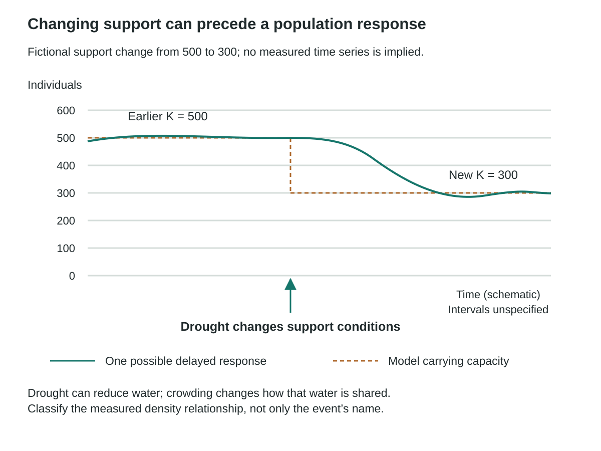
The dashed model carrying-capacity line falls from 500 to 300 after a fictional drought changes resource support. A separate solid line illustrates a possible population response that remains near 500 initially and later declines with a lag, briefly going below the new support level before approaching it. The vertical axis counts individuals from 0 to 600; the horizontal axis is schematic, with no measured intervals. This is not field evidence or a unique predicted trajectory. Drought can reduce water while crowding changes the water shared per individual; classify density dependence from the measured relationship, not merely the event name.
Worked example
A fictional population initially stabilizes near 500, but a drought reduces available habitat and resources. Evaluate the claim that its carrying capacity must remain 500 forever.
- Identify K as a model summary of support under particular conditions.
- Link the environmental change to altered resource availability and possibly a different effective K.
- Consider delayed population responses and other losses rather than forcing the old curve onto the new conditions.
The earlier value need not remain valid. A changing environment can alter the support conditions, and the population may respond with delays or fluctuations.
Stop and check
Is density-independent disturbance the same as an effect whose total number of deaths can never vary with population size?
Compare your thinking
No. The term concerns whether the relevant per-capita effect is driven by density in the model, not whether the total count is numerically identical at every size.
Advanced LearningFeedback can be delayed6 minutes
Feedback can be delayed
Build from the core idea: The core explanation introduced feedback and changing limits. Extend that idea by distinguishing the cases below.
Resource depletion, reproduction and mortality do not always respond instantly to current density. Delays can produce overshoot or oscillation around a model's support level. A smooth logistic curve hides those timing effects. If a dataset fluctuates, examine the timing and mechanisms before assuming the carrying-capacity idea is useless or that every fluctuation has the same cause.
A residual is observed minus predicted value. Plotting residuals can expose repeated departures such as seasonality or a delayed response. Also compare change per individual with N: the exponential model keeps it constant, while the simple logistic model lowers it as N rises. Describe the interval that fits and investigate systematic departures instead of labelling a population permanently logistic.
Compare residuals and the timing of a departure before discarding the whole model. A drought can change support conditions while the population responds with a lag. The earlier stabilization point remains an observation of that interval, not an immutable species property. A smooth logistic curve does not establish that all real responses are immediate.
A course-authored comparison. Numerical or hypothetical cases are illustrative unless explicitly identified as supplied observations.
| Case or measure | Biological interpretation |
|---|---|
| Immediate simple logistic response | Uses current density in its feedback term. |
| Delayed ecological response | May overshoot or fluctuate as resources and reproduction respond later. |
Limitation: A smooth logistic curve does not establish that all real responses are immediate.
Related worked example: Worked example: Feedback and changing limits
See the idea in action
Illustrated walkthrough
1. Size and density
Each upper square represents one hectare containing 20 individuals. The 12-square habitat holds 240 individuals; the five-square habitat holds 100. Both give 20 individuals per hectare. In the separate lower comparison, each equal-area panel contains nine individuals, represented by nine dots. The panels show uniform, clumped and illustrative random arrangements. Equal density need not imply equal total size or the same spatial distribution. A single pictured arrangement does not prove the process that produced it.
A fictional area contains 240 individuals in 12 hectares. Calculate density and explain why the same density could occur in a population of a different total size.
- Divide the count by area: 240/12 = 20.
- Attach units: 20 individuals per hectare.
- Construct a comparison such as 100 individuals in 5 hectares, also 20 per hectare, while retaining different population totals.
Density is 20 individuals/ha. Equal density does not imply equal total population size or identical spatial arrangement.
2. Sampling populations
Five separate one-square-metre quadrats contain 2, 8, 4, 10 and 6 individuals. The corresponding dots can be counted directly. Their total is 30 individuals in five square metres, giving a mean of six individuals per square metre. Extrapolation to a comparable 200-square-metre habitat gives an estimated 1200 individuals, conditional on representative placement and consistent detection. In a separate mobile-organism example, 40 individuals are marked and released; a later catch of 50 contains 10 marked individuals. The simple estimate is 40 × 50 / 10 = 200. It assumes suitable mixing, retained marks, comparable capture probability and approximate closure. These are supplied observations and models, with no required handling of organisms.
Five one-square-metre quadrats contain 2, 8, 4, 10 and 6 individuals. Estimate abundance in a comparable 200 m² habitat.
- Add the counts: 30 individuals across 5 m².
- Calculate mean density: 30/5 = 6 individuals/m².
- Multiply by 200 m² to estimate 1200 individuals, assuming the sample represents the habitat.
The estimate is 1200 individuals. It is not a complete census; patchiness, sampling placement and detection can affect its reliability.
3. Four demographic processes
Within the same defined ten-day interval, 120 births and 30 immigrants add individuals, while 70 deaths and 20 emigrants remove them. The net change is (120 + 30) − (70 + 20) = +60 individuals. Initial N = 1000 therefore becomes final N = 1060. Birth and death arrows are within the boundary; migration arrows cross it in the correct directions. These values are interval counts, not per-day rates. A closed-population model excludes immigration and emigration but can still change through births and deaths.
A population starts at 1000. Over ten days it records 120 births, 30 immigrants, 70 deaths and 20 emigrants. Calculate net change and final size.
- Add gains: 120 + 30 = 150.
- Add losses: 70 + 20 = 90.
- Subtract to obtain ΔN = 60, then add to the starting size: 1060.
The net change is +60 individuals and the final population size is 1060 under this complete-count model.
4. Rates and denominators
The population increases from 1000 to 1060 over ten days. The average absolute rate is 60 individuals / 10 days = 6 individuals per day. Relative change using the initial population is 60 / 1000 = 0.06 over the ten-day interval. Dividing that interval fraction by ten gives an average 0.006 per day per initial individual. The last two retain the initial population denominator; neither is a directly fitted continuous intrinsic rate. A different denominator or interval describes a different quantity.
Use ΔN = 60, initial N = 1000 and Δt = 10 days to calculate absolute daily change, interval per-initial-individual change and its daily average.
- Calculate ΔN/Δt = 60/10 = 6 individuals/day.
- Calculate ΔN/Ninitial = 60/1000 = 0.06 over the interval.
- Divide the interval value by ten to obtain an average 0.006 per day per initial individual.
The three summaries are 6 individuals/day, 0.06 per initial individual over ten days, and 0.006 per day per initial individual. The last is an average based on the initial denominator, not a directly fitted continuous intrinsic rate.
5. Exponential and logistic models
The two upper panels are qualitative shapes with time and population-size axes that are not numerically scaled. The exponential curve accelerates under a fixed proportional model; the logistic curve slows toward the dashed carrying-capacity line K. They are not the complete plotted answer to the graph-construction activity. A separate discrete first-step example sets N = 100, r = 0.20 per step and K = 500. Exponential change gives 100 + 0.20(100) = 120; logistic change gives 100 + 0.20(100)(1 − 100/500) = 116. The density-dependent factor reduces growth near K. Real populations can depart from either idealized model.
Compare two discrete models starting at N = 100 with r = 0.2 per step: exponential Nnext = N + rN and logistic Nnext = N + rN(1 − N/K), with K = 500.
- Exponential next size is 100 + 0.2(100) = 120.
- Logistic next size is 100 + 0.2(100)(1 − 100/500) = 116.
- Compare the density-dependent factor while retaining the same initial size, step and r.
The first step gives 120 versus 116. In the logistic model, the additional factor reduces growth as N approaches the stated K.
6. Feedback and changing limits
The dashed model carrying-capacity line falls from 500 to 300 after a fictional drought changes resource support. A separate solid line illustrates a possible population response that remains near 500 initially and later declines with a lag, briefly going below the new support level before approaching it. The vertical axis counts individuals from 0 to 600; the horizontal axis is schematic, with no measured intervals. This is not field evidence or a unique predicted trajectory. Drought can reduce water while crowding changes the water shared per individual; classify density dependence from the measured relationship, not merely the event name.
A fictional population initially stabilizes near 500, but a drought reduces available habitat and resources. Evaluate the claim that its carrying capacity must remain 500 forever.
- Identify K as a model summary of support under particular conditions.
- Link the environmental change to altered resource availability and possibly a different effective K.
- Consider delayed population responses and other losses rather than forcing the old curve onto the new conditions.
The earlier value need not remain valid. A changing environment can alter the support conditions, and the population may respond with delays or fluctuations.
Checkpoint
Are 6 individuals/day and 0.006 per day per initial individual the same numerical quantity?
Up to 120 characters can be saved in this response. Longer writing stays visible for copying and revision.
No. They summarize the same change with different denominators and units.
Retrieve
Retrieve the idea
From N₀ = 1000, B = 120, I = 30, D = 70 and E = 20 over ten days, give final N and absolute daily change.
Up to 180 characters can be saved in this response. Longer writing stays visible for copying and revision.
Final N = 1060; absolute change rate = 60/10 = 6 individuals/day.
Practise
Guided practice
Question 1
How is population density different from population size?
Attempt the question to open the feedback.
Correct. Density standardizes abundance by space, while size is N within a defined population.
Review this choice. The numerical relationship depends on area and units.
Review this choice. Life-stage definitions may differ, but that is not the core distinction.
Review this choice. Birth rate is a process of change, not density.
Question 2
Work through this question
Quadrat estimate: use 2, 8, 4, 10 and 6 plants in five 1 m² samples from 200 m². Calculate density and estimated abundance.
Separate demographic dataset: initial N=1000, B=120, I=30, D=70 and E=20 in ten days. Calculate absolute rate and interval per-capita change.
Separate growth-model dataset: plot both supplied series on common labelled axes.
Model comparison: explain why the two growth-model series diverge.
Earlier writing
Your earlier response is preserved below. Copy it before choosing to start a new graph.
Two growth models from the same starting size
| Position | Exponential: N next = N + 0.2N | Logistic: N next = N + 0.2N(1 − N/500) |
|---|---|---|
| 0 | 100 | 100 |
| 1 | 120 | 116 |
| 2 | 144 | 133.8 |
| 3 | 172.8 | 153.4 |
| 4 | 207.4 | 174.7 |
Explanation capacity: 460 characters. Blank points remain blank; zero is a plotted value.
Compare your construction
Attempt the question to open the feedback.
One complete response
Plot both model series from the table at intervals 0–4, using one common population scale. Quadrat density=30/5=6 plants/m²; estimated abundance=1200. Separately, demographic ΔN=60, final N=1060, rate=6 individuals/day and interval fraction=0.06 over ten days. The separate growth models both start at 100 with r=0.2; the logistic limiting factor reduces its additions relative to the exponential model.
Keep quadrat, demographic and growth-model inputs separate. Mean density 6 predicts 1200; demographic change 60 gives 6/day and .06 over ten days; model growth diverges through the density-dependent factor.
Save your learning
Evidence Slip
Use a sampling or growth calculation to support a prediction, including units and one design/model limit.
- Show the calculation and denominator.
- State the interval or area.
- Identify representativeness or changing-condition limits.
Up to 300 characters can be saved in this response. Longer writing stays visible for copying and revision.
Before you continue
Attempt the walkthrough checkpoint, check both guided questions, and save your Evidence Slip.
In progress
Lesson 4 · Chapter 20
Life Strategies and Ecological Relationships
How do interactions and history shape a community's possible future?
Learning goal
Compare life histories, interaction mechanisms, cycles and succession, then make a qualified ecological recommendation.
Before you begin
An interaction's effect must be measured for each partner. Correlation differs from a causal mechanism. Communities carry biological and environmental legacies after disturbance.
In the textbook
Chapter 20 · 711–713 #8–15; 716 #5–9; 719 #16–18; 725 #23–26; 728 #27,28; 730 #1,3–5
Four anchor words
Start with four words
These four anchors will help you enter the lesson. The full list below includes the supporting terms.
- mutualism
- An interaction in which both participants receive a net measured benefit under stated conditions.
- interspecific competition
- Competition between members of different species for limited resources.
- primary succession
- Community development beginning where developed soil and substantial terrestrial biological legacies are absent.
- secondary succession
- Community development after disturbance where soil or other biological legacies remain.
All terms used in this lesson (33)
New in this lesson
- r-selected
- A simplified life-history tendency toward earlier reproduction and many offspring under some changing or short-lived conditions.
- K-selected
- A simplified life-history tendency toward slower reproduction and greater investment per offspring under some crowded or stable conditions.
- fecundity
- Potential reproductive output over a stated interval, distinguished from offspring that actually survive.
- parental investment
- Resources or care directed toward offspring that can affect their survival and a parent's other reproductive opportunities.
- predation
- An interaction in which one organism captures and consumes another organism.
- producer-consumer
- A relationship in which a consumer obtains matter/energy from a producer, potentially changing both populations.
- mutualism
- An interaction in which both participants receive a net measured benefit under stated conditions.
- commensalism
- An interaction in which one participant benefits and no effect on the other is detected.
- parasitism
- An interaction in which a parasite benefits while reducing host fitness.
- intraspecific competition
- Competition among members of the same species for limited resources.
- interspecific competition
- Competition between members of different species for limited resources.
- mimicry
- Resemblance that affects another organism's response, such as a predator avoiding a look-alike prey.
- protective coloration
- Colour or pattern that can reduce detection or attack under particular environmental conditions.
- toxin
- A biologically produced substance that can harm another organism under specified exposure conditions.
- behaviour
- An organism's actions or responses, which can influence survival, interactions or reproduction.
- predator-prey lag
- A time difference between changes in prey abundance and a predator population's response.
- correlation
- A pattern in which variables change together; it does not by itself establish a causal mechanism.
- primary succession
- Community development beginning where developed soil and substantial terrestrial biological legacies are absent.
- secondary succession
- Community development after disturbance where soil or other biological legacies remain.
- soil
- A developing mixture of mineral particles, organic material, organisms, air and water that supports many terrestrial communities.
- community
- Populations of different species living and interacting in an area.
- climax community
- A relatively persistent late-successional community under specified conditions, not an inevitable or permanently unchanging endpoint.
- indicator
- A measured feature used to evaluate a condition or change, with its reliability and limitations stated.
- monitoring
- Repeated observation using a consistent method to detect change and evaluate a prediction or intervention.
- perspective
- A way of evaluating an issue shaped by evidence, values, experience or responsibilities.
- revision
- A reasoned change to a prediction, explanation or plan after considering evidence or feedback.
- survivorship
- The proportion of an initial group that remains alive at successive ages.
- cohort
- A group defined by a shared starting interval or event and followed through time.
- Type I survivorship
- An idealized survival pattern with relatively low early mortality and most losses later in life.
- Type II survivorship
- An idealized survival pattern with approximately constant per-capita mortality risk across ages.
- Type III survivorship
- An idealized survival pattern with high early mortality and greater subsequent survival among those passing the early stages.
Used again
Learn · Part 1
Life-history strategies
- r-selected
- A simplified life-history tendency toward earlier reproduction and many offspring under some changing or short-lived conditions.
- K-selected
- A simplified life-history tendency toward slower reproduction and greater investment per offspring under some crowded or stable conditions.
- fecundity
- Potential reproductive output over a stated interval, distinguished from offspring that actually survive.
- parental investment
- Resources or care directed toward offspring that can affect their survival and a parent's other reproductive opportunities.
- monitoring
- Repeated observation using a consistent method to detect change and evaluate a prediction or intervention.
- survivorship
- The proportion of an initial group that remains alive at successive ages.
- cohort
- A group defined by a shared starting interval or event and followed through time.
- Type I survivorship
- An idealized survival pattern with relatively low early mortality and most losses later in life.
- Type II survivorship
- An idealized survival pattern with approximately constant per-capita mortality risk across ages.
- Type III survivorship
- An idealized survival pattern with high early mortality and greater subsequent survival among those passing the early stages.
Life-history traits describe how organisms divide resources among growth, survival and reproduction. Compare age at first breeding, offspring number and size, breeding frequency, parental care and survival. Fecundity refers to reproductive output or potential under the stated definition. Investment in one function can leave less for another. These trade-offs help explain why more offspring is not always the only useful strategy.
The historical r/K framework describes broad tendencies. An r-associated pattern can include earlier breeding and many low-investment offspring. A K-associated pattern can include later breeding, fewer offspring and greater investment or survival. Their value depends on conditions. The categories are not rigid boxes. A species may combine traits in ways that do not fit one simple label.
Use the actual traits and data to predict risk. Extra adult deaths may strongly affect a late-maturing population because adults are replaced slowly. A species with many offspring may still decline if its habitat disappears. Connect the proposed risk with recruitment, survival and resource needs. An r or K label alone cannot show how fast a real population will recover.
Survivorship describes the proportion of a starting group still alive at different ages. A cohort is a group followed from a shared starting interval. In an idealized Type I pattern, losses are concentrated later in life. Type II shows an approximately constant mortality risk across ages, while Type III has high early loss among many young. These curves describe survival, not the total population-growth curve. Real populations can depart from the three simplified patterns.
Compare the trait continua separately from the three survivorship patterns. The survival axis is logarithmic; Type II has approximately constant mortality risk. Historical r/K tendencies do not assign every species to a fixed box.
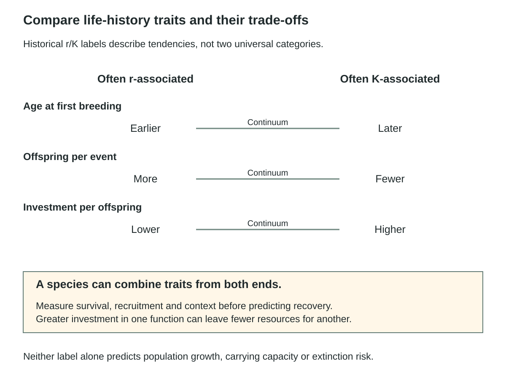
Three continua compare age at first breeding, offspring number per event and investment per offspring. Earlier breeding, more offspring and lower per-offspring investment are often r-associated tendencies; later breeding, fewer offspring and greater investment are often K-associated. These are historical tendencies, not universal boxes. Species can combine traits, and measured survival, recruitment and conditions are needed for recovery predictions.
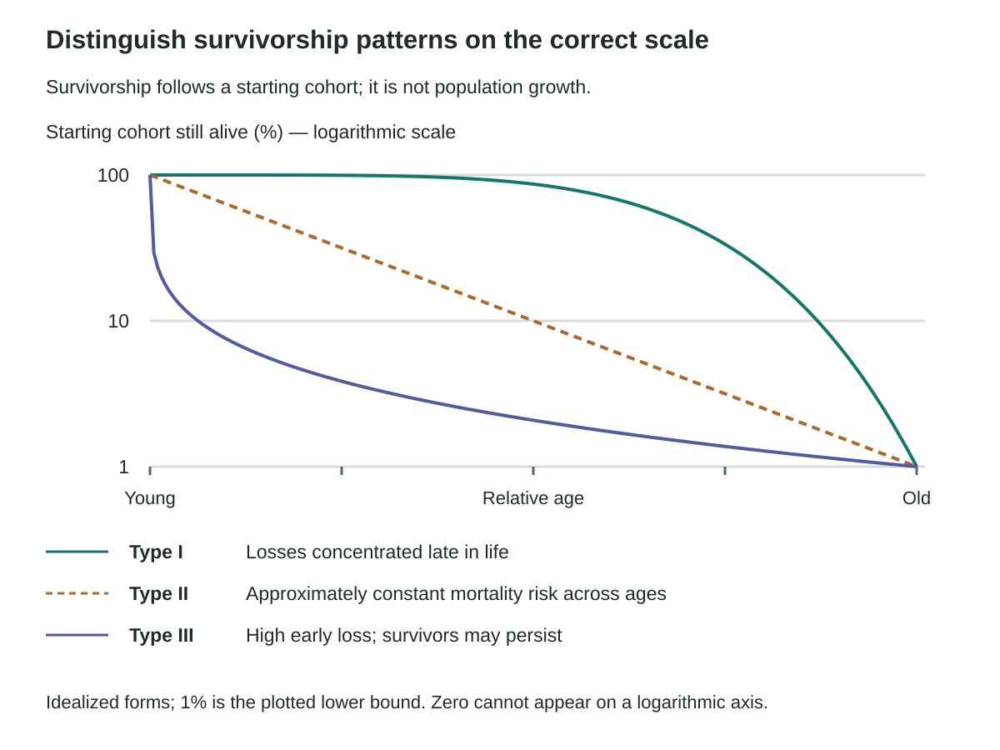
Three idealized cohort-survival curves share a logarithmic percentage scale marked100,10 and1 and a qualitative young-to-old age axis. Type I loses most individuals late; Type II has approximately constant mortality risk and therefore appears straight on this logarithmic survival plot; Type III has high early loss. All illustrated curves stop at1 percent because zero cannot be shown on a log scale. These are schematic patterns, not total-population growth or a measured species dataset.
Worked example
Compare a fictional species producing many small offspring with little parental care and another producing fewer offspring with greater investment. Use r/K language cautiously.
- Describe the measured traits rather than beginning with a fixed label.
- Relate offspring number, size, timing and survival under the stated conditions.
- Use r- and K-associated tendencies as an idealized comparison while allowing mixed traits and environmental context.
The species show contrasting investment patterns, but real life histories occupy continua. A few traits do not place every organism into two rigid universal boxes.
Stop and check
Does a species described as K-associated necessarily have zero population growth whenever conditions improve?
Compare your thinking
No. The category is a broad tendency, not a replacement for a growth model or an unchanging rate.
Advanced LearningTradeoffs require evidence6 minutes
Tradeoffs require evidence
Build from the core idea: The core explanation introduced life-history strategies. Extend that idea by distinguishing the cases below.
Resources allocated to one function may limit another, but an apparent contrast between species does not reveal every causal tradeoff. Body size, lifespan and habitat can also differ. Compare traits and outcomes in context before asserting that more offspring must always mean lower survival. A useful extension tests a specific predicted relationship rather than treating a category name as its explanation.
Traits can vary within a species through responses to conditions or population differences. Food and mortality can change maturation or offspring investment. Growth, maintenance, defence and reproduction compete for finite resources, but measured comparisons must test the proposed trade-off. Lifespan and dispersal also affect the context. Viability involves diversity, stage and sex structure, connectivity, habitat and environmental variation as well as N. Protecting adults, juvenile habitat or movement routes can yield different effects. A count near current K can still be vulnerable if habitat is shrinking; a seasonal low count may have another meaning.
In the original fictional options, increased harvest risks lowering adult survival without adding juvenile habitat; restoration may add wetland area but has a response lag; no change can allow the existing decline to continue. Compare quota/effort and stage checks, habitat/recruitment surveys and continued trend monitoring. These are scenario hypotheses, not evidence that an actual management option has been tested.
A course-authored comparison. Numerical or hypothetical cases are illustrative unless explicitly identified as supplied observations.
| Case or measure | Biological interpretation |
|---|---|
| Trait contrast | Many small offspring versus fewer with greater investment. |
| Tradeoff evidence | Requires outcomes measured with body size, habitat and other conditions in view. |
Limitation: Real life histories form continua rather than two rigid universal boxes.
Models and Data Lab: Compare density and species composition
Learn · Part 2
Interactions and their effects
- predation
- An interaction in which one organism captures and consumes another organism.
- producer-consumer
- A relationship in which a consumer obtains matter/energy from a producer, potentially changing both populations.
- mutualism
- An interaction in which both participants receive a net measured benefit under stated conditions.
- commensalism
- An interaction in which one participant benefits and no effect on the other is detected.
- parasitism
- An interaction in which a parasite benefits while reducing host fitness.
- correlation
- A pattern in which variables change together; it does not by itself establish a causal mechanism.
- soil
- A developing mixture of mineral particles, organic material, organisms, air and water that supports many terrestrial communities.
- community
- Populations of different species living and interacting in an area.
A population includes one species within a stated area and time. A community includes populations of different species that live and interact in an area. An ecosystem includes those organisms and their non-living surroundings. Begin by naming the level you are studying. A change in one population is not automatically a description of the whole community or ecosystem.
To classify a relationship, examine its effects on both participants. In predation, a consumer gains resources by eating prey, and the prey is harmed. Herbivores are consumers that obtain resources from plants or other producers. These interactions can affect growth, survival and reproduction. Producers convert energy, such as light energy, into chemical forms. They do not create energy from nothing. Connect the interaction to a measured effect on a population.
Mutualism benefits both participants. Commensalism benefits one while the other's measured effect is about neutral. Parasitism benefits the parasite and harms its host. A parasitoid grows in or on a host and eventually kills it; some insects have this relationship. Before assigning a name, state the effect measured for each participant and the scale of the comparison.
Conditions can change the balance of costs and benefits. In poor soil, a fungus may supply a plant with valuable nutrients. Under other conditions, the carbon the plant gives the fungus may be a larger cost relative to the benefit. The same pair need not have the same net effects everywhere. Compare growth or reproduction for each participant. A benefit to just one is not enough to classify the whole relationship.
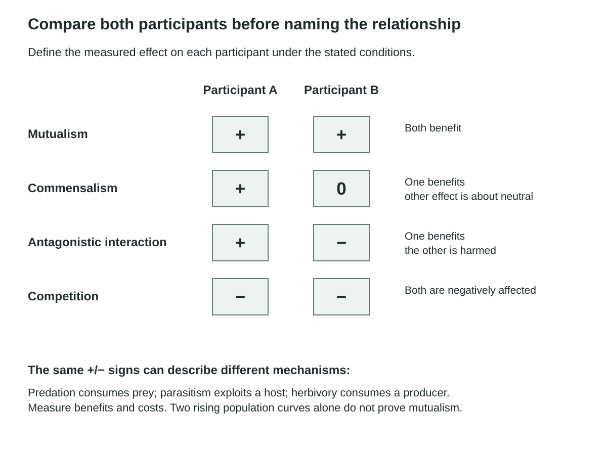
An effect matrix shows mutualism+/+,commensalism+/0,antagonistic interaction+/− and competition−/− relative to suitable comparison conditions. The signs alone do not identify mechanism: predation, parasitism and herbivory can share+/− effects. The measured outcome, participant identities, biological mechanism and context are required. Two rising abundance curves alone cannot prove mutualism.
Watch and make sense of it
Watch for: How species interactions can benefit, harm or have little effect on each partner.
Use this video to revisit the explanation above. You can use the diagram and illustrated walkthrough instead.
Ecological Relationships
The player loads when this video is selected.
Watch on YouTubeIllustrated walkthrough: Life Strategies and Ecological Relationships
Worked example
Classify three fictional interactions: both partners show improved reproductive output; one benefits while the other's measured outcome is unchanged; one benefits while the other is harmed.
- Use the defined measured effect for each partner.
- Assign +/+ to mutualism, +/0 to commensalism and +/− to an antagonistic interaction such as parasitism or predation depending on mechanism.
- Avoid choosing a precise mechanism solely from the signs.
The effect pattern helps classify the relationship, while the biological mechanism distinguishes interactions sharing the same sign pattern.
Stop and check
Does observing one species near another prove mutualism?
Compare your thinking
No. Co-occurrence does not measure benefit. Suitable comparisons of relevant outcomes are needed for both partners.
Advanced LearningZero can mean a detection limit6 minutes
Zero can mean a detection limit
Build from the core idea: The core explanation introduced interactions and their effects. Extend that idea by distinguishing the cases below.
A study reporting no measured effect may have limited sample size, duration or sensitivity. Treat the 0 in a classroom interaction table as “no effect detected or specified under these conditions,” not proof that no effect could ever occur. The relationship can also change with environment or life stage. State the observation window and outcome so the classification remains evidence-based.
Effect signs summarize measured outcomes: +/+ mutualism, −/− competition, +/− consumer or parasite versus the harmed organism, and +/0 commensalism. A zero means no effect detected or specified. Some partnerships are required for a participant’s usual survival, while others are optional. Herbivory can remove tissue without killing the whole producer.
An ecosystem includes transfers of energy and matter as well as organisms and non-living conditions. An interaction can act indirectly: a predator may reduce herbivores and thereby reduce damage to plants. A partner’s net effect can shift with nutrients, location or host condition. Trace each link and compare alternative pathways rather than treating every correlation as a direct interaction.
A course-authored comparison. Numerical or hypothetical cases are illustrative unless explicitly identified as supplied observations.
| Case or measure | Biological interpretation |
|---|---|
| Positive or negative sign | A measured effect on the defined outcome. |
| Zero sign | No effect detected or specified under the stated conditions. |
Limitation: A measured zero is not proof of no possible effect in every context.
Models and Data Lab: Compare density and species composition
Learn · Part 3
Competition and defence
- intraspecific competition
- Competition among members of the same species for limited resources.
- interspecific competition
- Competition between members of different species for limited resources.
- mimicry
- Resemblance that affects another organism's response, such as a predator avoiding a look-alike prey.
- protective coloration
- Colour or pattern that can reduce detection or attack under particular environmental conditions.
- toxin
- A biologically produced substance that can harm another organism under specified exposure conditions.
- behaviour
- An organism's actions or responses, which can influence survival, interactions or reproduction.
Intraspecific competition occurs among members of the same species, while interspecific competition occurs between species. Both involve overlapping use of a limiting resource. Reduced growth in a mixed group can fit competition, but total density and other conditions must be compared. A crowded mixed plot differs from a sparse single-species plot in more than species identity.
The supplied experiment compares five A plants, ten A plants and a mixed group of five A plus five B plants. Mean mass per A is 4.0, 3.0 and 2.4 grams, respectively. Comparing the two ten-plant groups helps control total starting density while changing composition. The result is consistent with a stronger effect of B on A in this model, but replication and resource evidence are needed to identify the mechanism.
Defences can alter biological encounters. Protective coloration can reduce detection; toxins can reduce consumption; behaviour can change exposure or access. In Batesian mimicry, a relatively undefended organism resembles a defended model, while Müllerian mimicry involves defended species sharing warning features. Such traits can have costs and do not provide complete protection. Heritable variants can become more common through selection; organisms do not intentionally evolve a needed defence.
Resource partitioning means using different portions of available resources. Compare each species alone with both together. If their broad resource use becomes narrower and less overlapping together, the change supports a role for competition. Resource measurements and matched conditions help distinguish this from unrelated differences between sites.
The first panel holds total starting density at ten in the final two groups. The second compares qualitative resource use under matched conditions. The third uses hypothetical swatches to separate similar appearance from tested defence; it does not identify actual species or demonstrate intentional change.
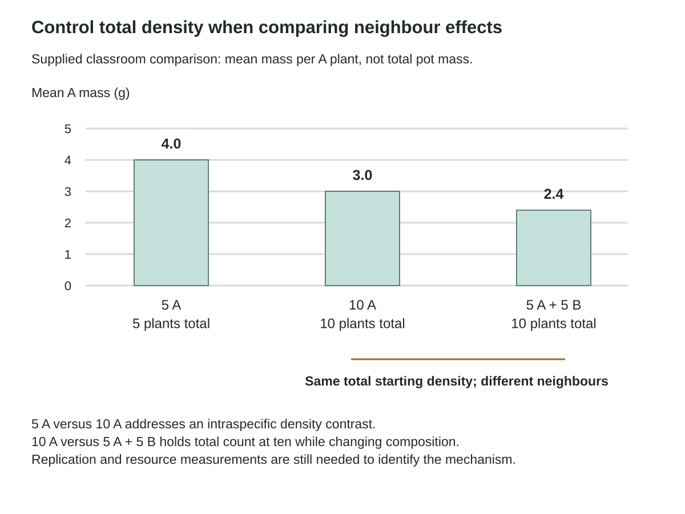
Three bars on a common zero-to-five-gram axis show mean mass per A plant:4.0g in five-A pots,3.0g in ten-A pots and2.4g in mixed five-A/five-B pots. The two ten-plant groups hold total starting density constant while changing neighbour composition. The first two groups compare intraspecific density. This supplied classroom dataset is not a complete causal demonstration; replication and resource evidence remain necessary.

Qualitative resource-use curves show broad overlapping use by speciesA andB when each is alone, and narrower less-overlapping use when together. Both panels use the same horizontal resource dimension; line styles distinguish species. The comparison assumes matched conditions and is illustrative rather than measured. A shift supports competition but does not exclude differences in resource availability or other site conditions.
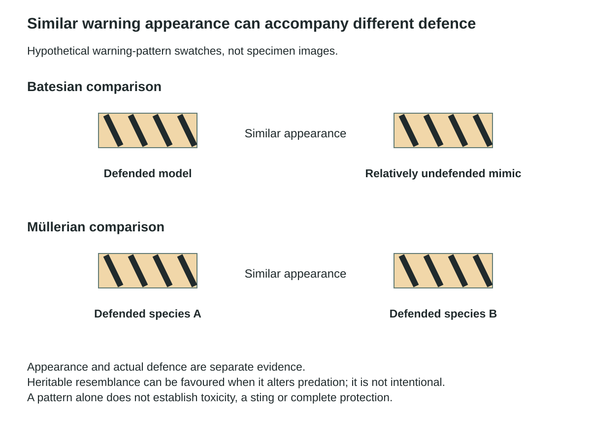
Two hypothetical pattern comparisons separate appearance from actual defence. In the Batesian example a relatively undefended mimic resembles a defended model. In the Müllerian example both resembling species are defended. Identical stripe swatches encode similar appearance only; they are not specimen photos or evidence of toxicity. Heritable resemblance may affect predation without intentional evolution or guaranteed protection.
Worked example
The supplied plant comparison gives mean A mass 4.0 in five-A pots, 3.0 in ten-A pots and 2.4 in mixed five-A/five-B pots. What comparisons address density and neighbour identity?
- Compare five-A with ten-A pots for an intraspecific density contrast.
- Compare ten-A with mixed pots at ten total plants to hold total density constant while changing neighbour composition.
- Retain replication and resource measurements as limits on a specific causal claim.
The mixed pots have lower mean A mass than the same-total-density A-only pots. This supports a neighbour-composition effect in the dataset, while the exact resource mechanism requires more evidence.
Stop and check
Does the five-A versus mixed comparison alone isolate species identity from total plant density?
Compare your thinking
No. Both composition and total density change. The ten-A comparison helps separate those factors.
Advanced LearningSimilar defences can send different signals6 minutes
Similar defences can send different signals
Build from the core idea: The core explanation introduced competition and defence. Extend that idea by distinguishing the cases below.
Batesian mimicry involves a relatively harmless mimic resembling a defended model, while Müllerian mimicry involves defended species sharing warning features. The resemblance alone does not distinguish them; evidence of defence and predator response matters. Keep those mechanisms separate from camouflage, which can reduce detection. A useful diagram labels both the appearance and the proposed effect on the observer.
Defences include concealment, warning signals, armour, toxins, escape and grouping. Each can carry costs: toxins use resources, and groups may increase visibility or competition. A heritable defence is adaptive only in relation to measured reproductive success in its context. Predators also vary in locating, capturing and processing prey. Coevolution means reciprocal evolutionary change as species impose selection on each other. Matching traits alone do not prove it. Test reciprocal responses or suitable geographic and genetic comparisons. A brief behavioural change is not automatically inherited evolutionary change.
A niche concerns resource use and environmental conditions, not just location. A fundamental niche describes a potential range in the absence of limiting biological interactions; a realized niche describes the observed range under actual constraints. Complete competitors cannot persist indefinitely under the same constant limiting conditions in the simple exclusion model; nature can vary across time and space. Resource partitioning can divide use by time, place or resource type. Character displacement is evolved trait divergence associated with coexistence. It needs evidence of inherited and geographic patterns, not merely two species using different feeding heights on one day. Compare each alone and together and measure whether the shared resource is limiting.
A course-authored comparison. Numerical or hypothetical cases are illustrative unless explicitly identified as supplied observations.
| Case or measure | Biological interpretation |
|---|---|
| Batesian resemblance | A relatively harmless mimic resembles a defended model. |
| Müllerian resemblance | Defended species share warning features. |
Limitation: Matching traits alone do not demonstrate reciprocal coevolution or character displacement.
Models and Data Lab: Compare density and species composition
Learn · Part 4
Population cycles
- predator-prey lag
- A time difference between changes in prey abundance and a predator population's response.
Population cycles are repeated changes in abundance over time. In a simplified predator–prey relationship, increased prey can support greater predator survival or reproduction. Predator numbers may then rise after a delay. Greater predation can contribute to a later prey decline, followed by reduced support for predators. This mechanism can create a lag between the peaks of the two populations.
A correlation describes a pattern of association. Two curves with offset peaks are consistent with a lagged relationship but do not prove predation caused the cycles. Food supply, weather, disease or movement can also affect both populations. Identify whether the data show abundance, a detection index or a harvest count, since different measures have different limits.
Compare the proposed mechanism with additional observations. Evidence of diet, survival, recruitment or a controlled change in predator access can help test a causal explanation. A useful graph labels species, time and measurement units and identifies the interval between peaks. Explain the sequence with a biological process, then state an alternative. Avoid treating one familiar pair of curves as a universal law for all predator–prey systems.

A fictional paired count series uses one common zero-to100 individual axis and time steps0–12. Prey peak at steps2 and8; predator peaks occur at4 and10, a two-step lag. Solid and dashed lines distinguish the populations. These invented counts are explicitly separate from historical pelt records. The lag is consistent with predator–prey effects but does not exclude food, weather, disease, movement or sampling as contributing causes.
Worked example
A fictional prey curve peaks before a predator curve. Explain a plausible interaction and an alternative cause that the graph alone cannot exclude.
- Read the time axis and identify the lag between sampled peaks.
- Propose that increased prey availability supports later predator reproduction or survival.
- Consider shared environmental drivers, other prey and sampling effects before claiming a unique cause.
The lag is consistent with a predator–prey interaction, but correlation and timing alone do not prove that this mechanism fully explains the cycle.
Stop and check
Would reversing the vertical scales change the actual time lag between the observed peaks?
Compare your thinking
No. It changes the visual height comparison, not their horizontal time positions. Both axes still need clear units and labels.
Advanced LearningFeedback links more than two curves6 minutes
Feedback links more than two curves
Build from the core idea: The core explanation introduced population cycles. Extend that idea by distinguishing the cases below.
Predator and prey populations can also depend on resources, disease, weather and other interacting species. A two-species model isolates one feedback relationship to make a prediction. When comparing it with observations, look for departures that suggest a missing driver. Adding every possible factor at once can make a model hard to test, so choose the next factor based on evidence.
Prey density can change encounter rates, predator reproduction or switching among food sources. Refuges, age structure, movement and external conditions can dampen a cycle. A lag comparison, sometimes quantified by cross-correlation, measures association; a shared resource driver can produce it without predation being the sole cause.
Compare diet, removal or exclusion experiments, natural contrasts and repeated time series. Label measurement units and actual time spacing; leave missing observations visibly missing. Describe particular peaks, lags and changes. An illustrative smooth curve does not establish that every real predator–prey system cycles regularly.
A course-authored comparison. Numerical or hypothetical cases are illustrative unless explicitly identified as supplied observations.
| Case or measure | Biological interpretation |
|---|---|
| Lagged peaks | Consistent with a delayed predator response to prey. |
| Alternative drivers | Resources, disease or weather can also influence both curves. |
Limitation: Timing and correlation alone do not prove predation is the sole cause.
Learn · Part 5
Succession and disturbance
- primary succession
- Community development beginning where developed soil and substantial terrestrial biological legacies are absent.
- secondary succession
- Community development after disturbance where soil or other biological legacies remain.
- climax community
- A relatively persistent late-successional community under specified conditions, not an inevitable or permanently unchanging endpoint.
Succession is change in community composition after colonization or disturbance. Primary succession starts where developed soil and major biological legacies are absent. Secondary succession starts where soil or other legacies remain. The distinction concerns the starting site. It does not mean that one process is natural and the other human-caused, or that each follows a fixed time schedule.
Early organisms can change conditions through resource use, shade or soil development. Their effects may help or hinder later populations. Different species arrive and grow under those new conditions. A forest fire that leaves soil commonly leads to secondary succession. Check how severe the fire was and what remains. The event's name alone does not show every starting condition.
A climax community is a historical term for relative stability under certain conditions. It is not one inevitable permanent endpoint. New disturbances, climate and species arrivals can change the path. A drawing with rising biomass describes only its shown interval. It cannot prove that biomass grows without limit. Use actual species, resources and site history to explain the case.
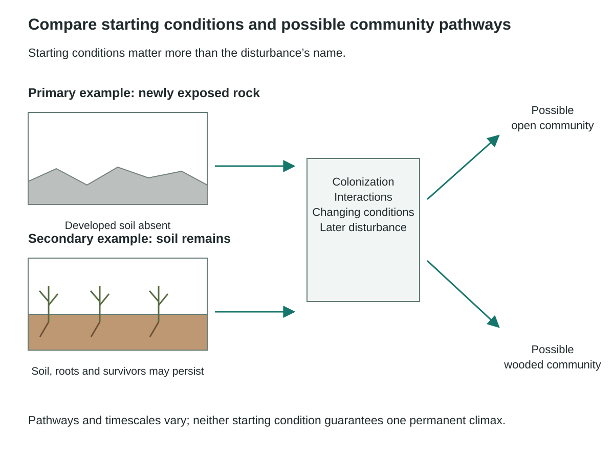
Two original ground-profile schematics distinguish newly exposed rock without developed soil from a disturbed site retaining soil, roots or survivors. Both feed into colonization, interactions, changing conditions and later disturbance, with branching possible community outcomes. Open and wooded communities are illustrative possibilities, not a fixed sequence or guaranteed permanent climax. Timescales and routes depend on conditions.
Worked example
Compare community development on newly exposed rock with recovery after a fire that leaves soil and some surviving organisms. Avoid predicting one inevitable final community.
- Use the absence of developed soil as a key feature of the primary-succession example.
- Use retained soil and biological legacies in the secondary-succession example.
- Compare colonization, dispersal, conditions and later disturbance as influences on the pathways.
The two starting conditions support different recovery processes and timescales. Neither case guarantees a universal fixed climax community.
Stop and check
Does secondary succession mean that every species present before the disturbance must return in the same order?
Compare your thinking
No. Surviving organisms, arrivals, changing conditions and repeated disturbance can produce different pathways.
Advanced LearningHistory can leave several kinds of legacy5 minutes
History can leave several kinds of legacy
Build from the core idea: The core explanation introduced succession and disturbance. Extend that idea by distinguishing the cases below.
Soil properties, seed banks, surviving roots and nearby source populations can influence recovery. Two sites with similar current climate may therefore develop differently because their histories differ. Record these legacies before comparing trajectories. A succession model is stronger when it explains plausible processes and alternatives than when it presents one unchangeable sequence of named communities.
Weathering, microbes and colonists can develop soil on newly exposed rock. After other disturbances, seed banks, roots, organic matter and surviving organisms can speed recovery. Severity can vary across one site, leaving a mosaic of legacies. Primary and secondary describe those starting conditions; neither guarantees a speed or species list. Facilitation occurs when early occupants help later establishment, for example by adding organic matter. Tolerance describes later establishment despite earlier occupants and persistence under the conditions that develop. Inhibition occurs when occupants restrict recruitment until death or disturbance opens space. These mechanisms can coexist. Dispersal and arrival order can also change later opportunities, producing priority effects.
Track species identity, dominance, structure, biomass and soil conditions rather than richness alone. A chronosequence compares different-aged sites instead of repeatedly observing one site. Its age interpretation requires comparable starting conditions and histories; soil, topography and management can otherwise confound the result. Repeated plots provide stronger direct temporal evidence. The original synthetic post-fire summary records years 1,5,15,35. Bare-ground percentages are 62,18,6,3; herb cover 30,44,22,9; shrub cover 5,28,41,27; tree seedlings per plot 2,11,34,76. These are separate cover measures and seedling counts, not four parts of one 100% total. The summary supplies no replicate uncertainty and does not prove facilitation or indefinite biomass growth.
A course-authored comparison. Numerical or hypothetical cases are illustrative unless explicitly identified as supplied observations.
| Case or measure | Biological interpretation |
|---|---|
| Newly exposed rock | Recovery begins with little developed soil. |
| Post-fire site with soil | Roots, seed banks and survivors can influence the trajectory. |
Limitation: Neither starting category guarantees one fixed climax, speed or mechanism.
Related worked example: Worked example: Succession and disturbance
Learn · Part 6
Ecological decisions and communication
- indicator
- A measured feature used to evaluate a condition or change, with its reliability and limitations stated.
- perspective
- A way of evaluating an issue shaped by evidence, values, experience or responsibilities.
- revision
- A reasoned change to a prediction, explanation or plan after considering evidence or feedback.
An ecological proposal links a mechanism with a goal and evidence. An indicator is a measure used to track a relevant condition. It might record recruitment, water quality or species composition. Monitoring repeats the measure over time with the same method. State what should change and when to check. Also name a result that would make you revise the plan.
Imagine a Canadian wetland restoration project. Research could test whether a habitat change improves recruitment while maintaining water quality and other functions. Social goals might include access and cultural relationships. Economic goals include affordable cost and lasting livelihoods. Environmental goals include the wetland's long-term health. Research for a sustainable society, economy and environment must therefore evaluate more than one rising population count.
Compare a plan focused on fast growth with one focused on community composition and resources. Use genetic, demographic or ecological data where relevant. Keep measured facts separate from stakeholder values. Revise the plan after considering the other view. State uncertainty and another possible cause of any change. This online work shows planning and reasoning, not proof of field sampling skill or live teamwork.
To separate two proposed influences, compare a reference condition, habitat restoration alone, reduced predator access alone and both changes together. Repeat comparable sites and measure recruitment consistently. The combined result can differ from either single change; the design tests separate effects and their interaction without guaranteeing every confounding difference has been removed.

A two-by-two design compares habitat restoration absent/present against usual/reduced predator access. The four conditions are reference, habitat restoration only, predator-access reduction only and both changes. Each needs repeated comparable sites and consistent recruitment measurements over sufficient time. Results can differ for combined versus single changes; no observations or agreement are invented. Biodiversity, water conditions, cost and respectfully sought Indigenous and local perspectives also inform a recommendation.
Worked example
A fictional Canadian wetland project proposes restoration based on one season of higher plant abundance. What evidence would strengthen a recommendation?
- Define the intended outcomes, including biodiversity, water conditions and relevant community priorities.
- Compare with suitable reference or untreated sites across enough time to address seasonal variation.
- Record sampling methods, possible tradeoffs and Indigenous and local perspectives through appropriate respectful engagement rather than inventing agreement.
One season's abundance result supports a limited observation, not complete restoration success. A recommendation should connect measured outcomes with uncertainties, alternatives and the perspectives needed for the decision.
Stop and check
Would an increase in one introduced plant automatically demonstrate improved biodiversity?
Compare your thinking
No. Greater abundance of one species can occur alongside reduced diversity or other adverse changes. The outcome must be measured directly.
Advanced LearningA recommendation is a reasoned choice5 minutes
A recommendation is a reasoned choice
Build from the core idea: The core explanation introduced ecological decisions and communication. Extend that idea by distinguishing the cases below.
Ecological decisions combine evidence about consequences with values about which consequences matter. Keep those roles visible. A transparent recommendation can favour an option while naming a tradeoff and a condition that would change the decision. It should also identify who needs to be involved in interpreting local impacts. A fictional classroom case must not present invented consultation as actual community endorsement.
Measure both participants before classifying an interaction. Flower visits show contact; seed production can test a plant benefit, while food collection or reproductive evidence tests the pollinator’s outcome. For competition, compare organisms alone and together at matched total density and resources. Repetition and stated spatial and temporal limits make the comparison interpretable. For post-fire succession, define the response and comparison sites. To ask whether herbs facilitate tree establishment, compare seedling establishment with and without herb cover under matched soil, slope and fire severity. A correlation between site age and seedlings does not itself establish that herbs caused the increase.
Scientific evidence informs likely effects, while decisions also involve values, rights, livelihoods and acceptable risk. Section 35 of the Constitution Act, 1982 recognizes and affirms existing Aboriginal and treaty rights in Canada. Local Indigenous knowledge and authority require appropriate relationships and protocols; a classroom author must not invent consultation, consent or community perspectives. Keep this case synthetic. A monitored decision specifies a goal, option, predicted response, indicators, timing and a threshold for revision. Restoration needs habitat and recruitment measures; harvest comparisons also need effort and stage structure. Compare harm from acting with harm from delay, and prefer reversible trials when suitable. Serious uncertainty should be visible in the decision rather than hidden behind one favourable count.
A course-authored comparison. Numerical or hypothetical cases are illustrative unless explicitly identified as supplied observations.
| Case or measure | Biological interpretation |
|---|---|
| Measured abundance change | A limited observation in a stated season and site. |
| Restoration recommendation | Requires goals, alternatives, tradeoffs, monitoring and appropriate participation. |
Limitation: The wetland case is fictional and does not establish consent or complete restoration success.
Models and Data Lab: Compare density and species composition
See the idea in action
Illustrated walkthrough
1. Life-history strategies
Compare the trait continua separately from the three survivorship patterns. The survival axis is logarithmic; Type II has approximately constant mortality risk. Historical r/K tendencies do not assign every species to a fixed box.
Three continua compare age at first breeding, offspring number per event and investment per offspring. Earlier breeding, more offspring and lower per-offspring investment are often r-associated tendencies; later breeding, fewer offspring and greater investment are often K-associated. These are historical tendencies, not universal boxes. Species can combine traits, and measured survival, recruitment and conditions are needed for recovery predictions.
Three idealized cohort-survival curves share a logarithmic percentage scale marked100,10 and1 and a qualitative young-to-old age axis. Type I loses most individuals late; Type II has approximately constant mortality risk and therefore appears straight on this logarithmic survival plot; Type III has high early loss. All illustrated curves stop at1 percent because zero cannot be shown on a log scale. These are schematic patterns, not total-population growth or a measured species dataset.
Compare a fictional species producing many small offspring with little parental care and another producing fewer offspring with greater investment. Use r/K language cautiously.
- Describe the measured traits rather than beginning with a fixed label.
- Relate offspring number, size, timing and survival under the stated conditions.
- Use r- and K-associated tendencies as an idealized comparison while allowing mixed traits and environmental context.
The species show contrasting investment patterns, but real life histories occupy continua. A few traits do not place every organism into two rigid universal boxes.
2. Interactions and their effects
An effect matrix shows mutualism+/+,commensalism+/0,antagonistic interaction+/− and competition−/− relative to suitable comparison conditions. The signs alone do not identify mechanism: predation, parasitism and herbivory can share+/− effects. The measured outcome, participant identities, biological mechanism and context are required. Two rising abundance curves alone cannot prove mutualism.
Classify three fictional interactions: both partners show improved reproductive output; one benefits while the other's measured outcome is unchanged; one benefits while the other is harmed.
- Use the defined measured effect for each partner.
- Assign +/+ to mutualism, +/0 to commensalism and +/− to an antagonistic interaction such as parasitism or predation depending on mechanism.
- Avoid choosing a precise mechanism solely from the signs.
The effect pattern helps classify the relationship, while the biological mechanism distinguishes interactions sharing the same sign pattern.
3. Competition and defence
The first panel holds total starting density at ten in the final two groups. The second compares qualitative resource use under matched conditions. The third uses hypothetical swatches to separate similar appearance from tested defence; it does not identify actual species or demonstrate intentional change.
Three bars on a common zero-to-five-gram axis show mean mass per A plant:4.0g in five-A pots,3.0g in ten-A pots and2.4g in mixed five-A/five-B pots. The two ten-plant groups hold total starting density constant while changing neighbour composition. The first two groups compare intraspecific density. This supplied classroom dataset is not a complete causal demonstration; replication and resource evidence remain necessary.
Qualitative resource-use curves show broad overlapping use by speciesA andB when each is alone, and narrower less-overlapping use when together. Both panels use the same horizontal resource dimension; line styles distinguish species. The comparison assumes matched conditions and is illustrative rather than measured. A shift supports competition but does not exclude differences in resource availability or other site conditions.
Two hypothetical pattern comparisons separate appearance from actual defence. In the Batesian example a relatively undefended mimic resembles a defended model. In the Müllerian example both resembling species are defended. Identical stripe swatches encode similar appearance only; they are not specimen photos or evidence of toxicity. Heritable resemblance may affect predation without intentional evolution or guaranteed protection.
The supplied plant comparison gives mean A mass 4.0 in five-A pots, 3.0 in ten-A pots and 2.4 in mixed five-A/five-B pots. What comparisons address density and neighbour identity?
- Compare five-A with ten-A pots for an intraspecific density contrast.
- Compare ten-A with mixed pots at ten total plants to hold total density constant while changing neighbour composition.
- Retain replication and resource measurements as limits on a specific causal claim.
The mixed pots have lower mean A mass than the same-total-density A-only pots. This supports a neighbour-composition effect in the dataset, while the exact resource mechanism requires more evidence.
4. Population cycles
A fictional paired count series uses one common zero-to100 individual axis and time steps0–12. Prey peak at steps2 and8; predator peaks occur at4 and10, a two-step lag. Solid and dashed lines distinguish the populations. These invented counts are explicitly separate from historical pelt records. The lag is consistent with predator–prey effects but does not exclude food, weather, disease, movement or sampling as contributing causes.
A fictional prey curve peaks before a predator curve. Explain a plausible interaction and an alternative cause that the graph alone cannot exclude.
- Read the time axis and identify the lag between sampled peaks.
- Propose that increased prey availability supports later predator reproduction or survival.
- Consider shared environmental drivers, other prey and sampling effects before claiming a unique cause.
The lag is consistent with a predator–prey interaction, but correlation and timing alone do not prove that this mechanism fully explains the cycle.
5. Succession and disturbance
Two original ground-profile schematics distinguish newly exposed rock without developed soil from a disturbed site retaining soil, roots or survivors. Both feed into colonization, interactions, changing conditions and later disturbance, with branching possible community outcomes. Open and wooded communities are illustrative possibilities, not a fixed sequence or guaranteed permanent climax. Timescales and routes depend on conditions.
Compare community development on newly exposed rock with recovery after a fire that leaves soil and some surviving organisms. Avoid predicting one inevitable final community.
- Use the absence of developed soil as a key feature of the primary-succession example.
- Use retained soil and biological legacies in the secondary-succession example.
- Compare colonization, dispersal, conditions and later disturbance as influences on the pathways.
The two starting conditions support different recovery processes and timescales. Neither case guarantees a universal fixed climax community.
6. Ecological decisions and communication
A two-by-two design compares habitat restoration absent/present against usual/reduced predator access. The four conditions are reference, habitat restoration only, predator-access reduction only and both changes. Each needs repeated comparable sites and consistent recruitment measurements over sufficient time. Results can differ for combined versus single changes; no observations or agreement are invented. Biodiversity, water conditions, cost and respectfully sought Indigenous and local perspectives also inform a recommendation.
A fictional Canadian wetland project proposes restoration based on one season of higher plant abundance. What evidence would strengthen a recommendation?
- Define the intended outcomes, including biodiversity, water conditions and relevant community priorities.
- Compare with suitable reference or untreated sites across enough time to address seasonal variation.
- Record sampling methods, possible tradeoffs and Indigenous and local perspectives through appropriate respectful engagement rather than inventing agreement.
One season's abundance result supports a limited observation, not complete restoration success. A recommendation should connect measured outcomes with uncertainties, alternatives and the perspectives needed for the decision.
Checkpoint
Does higher abundance of one plant automatically show greater biodiversity?
Up to 120 characters can be saved in this response. Longer writing stays visible for copying and revision.
No. Abundance of one species and diversity are different outcomes that need separate measurements.
Retrieve
Retrieve the idea
Why does soil remaining after disturbance matter when distinguishing primary and secondary succession?
Up to 180 characters can be saved in this response. Longer writing stays visible for copying and revision.
Retained soil and biological legacies change starting conditions and can support recovery pathways unlike development on bare rock.
Practise
Guided practice
Question 1
Which description defines an ecological community?
Attempt the question to open the feedback.
Correct. A community includes multiple interacting populations; an ecosystem adds abiotic conditions.
Review this choice. That describes a broad species distribution, not a local community.
Review this choice. Abiotic conditions are part of an ecosystem context.
Review this choice. That is an individual genetic scale.
Question 2
A mixed plot with five A and five B plants yields 2.4 g per A, while a ten-A plot yields 3.0 g per A. Explain the competition inference and name one limitation; then distinguish primary and secondary succession.
Up to 440 characters can be saved in this response. Longer writing stays visible for copying and revision.
Attempt the question to open the feedback.
One complete response
Equal total density helps compare species composition. Lower A performance in the mixed plot is consistent with an effect of B under these conditions, but replication, soil equality and resource measures are needed to isolate competition. Primary succession starts without developed soil; secondary succession retains soil and legacies.
2.4 versus 3.0 at equal total density isolates composition better than unequal-density comparisons; resource causes remain open. Succession classification uses retained soil and legacies.
Save your learning
Evidence Slip
Use one interaction or restoration dataset to recommend a bounded next step, with evidence and a meaningful uncertainty or tradeoff.
- Name the measured effect.
- Connect it to a plausible mechanism or action.
- Retain alternatives and relevant local perspectives.
Up to 300 characters can be saved in this response. Longer writing stays visible for copying and revision.
Before you continue
Attempt the walkthrough checkpoint, check both guided questions, and save your Evidence Slip.
In progress
Practice & Review
Chapter 19 Practice
Attempt each question before opening its feedback. You can revise and check again.
Textbook reinforcement
Optional textbook reinforcement
Attempt the source questions before opening their guides. This work is optional.
Source questions: 1, 2, 3, 4, 5, 6, 7, 8, 9, 10, 11, 12, 13, 14, 15.
Open textbook p. 700 · Open textbook p. 701
The answer guide opens after you confirm an attempt.
Check your work
Textbook question 1: Distinguish an individual event from population change
Optional reinforcement · Printed page 700
Open question in the local textbook (new tab)
Read this correction first
A heritable mutation can contribute to allele-frequency change. Separate the described individual event from evidence about a population across generations.
Attempt the textbook question in your own notes before opening the comparison guide.
Comparison guide
A mutation creates a sequence variant and can contribute to microevolution if it changes heritable allele representation in a population. One resistant fly alone does not show the population’s allele frequencies before and after, or even establish inheritance. Thus the described individual event is insufficient evidence for a population-level conclusion. Transmission and changing allele counts across generations would establish the relevant change; selection may then increase or decrease the variant.
Textbook question 2: Calculate heterozygote frequency
Optional reinforcement · Printed page 700
Open question in the local textbook (new tab)
Attempt the textbook question in your own notes before opening the comparison guide.
Comparison guide
p=0.70, so q=0.30. Under Hardy–Weinberg assumptions, 2pq=2(0.70)(0.30)=0.42, or 42%. Check p²+2pq+q²=0.49+0.42+0.09=1. The result is a genotype frequency, not the frequency of the dominant allele.
Textbook question 3: Start from a recessive phenotype
Optional reinforcement · Printed page 700
Open question in the local textbook (new tab)
Attempt the textbook question in your own notes before opening the comparison guide.
Comparison guide
Under the stated simple recessive/equilibrium model, q²=16/100=0.16, so q=0.40 and p=0.60. The requested dominant-allele frequency is 0.60. Do not subtract 0.16 directly from one and call the result p.
Textbook question 4: Use a qualified historical model
Optional reinforcement · Printed page 700
Open question in the local textbook (new tab)
Read this correction first
The lactose model and percentage are historical classroom inputs, not current Canadian health statistics or a validated one-gene diagnosis.
Attempt the textbook question in your own notes before opening the comparison guide.
Comparison guide
Treat 11% as supplied model data, not a current Canadian statistic or a universal single-locus explanation of lactose intolerance. q=√0.11≈0.3317 and p≈0.6683. Heterozygotes: 2pq≈44.33%; homozygous dominant: p²≈44.67%. State the simplified inheritance/equilibrium assumptions.
Textbook question 5: Derive alleles from observed genotypes
Optional reinforcement · Printed page 700
Open question in the local textbook (new tab)
Attempt the textbook question in your own notes before opening the comparison guide.
Comparison guide
Observed YY=0.44,Yy=0.38,yy=0.18 gives p(Y)=0.44+0.38/2=0.63 and q(y)=0.37. In 400 individuals, counts are 176 YY,152 Yy,72 yy. These allele frequencies come directly from counts and do not require assuming the observed genotypes already follow equilibrium proportions.
Textbook question 6: Calculate a two-allele model
Optional reinforcement · Printed page 700
Open question in the local textbook (new tab)
Read this correction first
The source mixes allele letters. Define one consistent allele pair before calculating.
Attempt the textbook question in your own notes before opening the comparison guide.
Comparison guide
The gamete frequency directly gives p(C)=0.60 and q=0.40. Expected diploid genotype frequencies are 0.36,0.48,0.16 under the specified model. The book uses inconsistent C/l lettering for alternative alleles; define one consistent pair of symbols and distinguish haploid gametes from diploid offspring.
Textbook question 7: Explain drift and sample size
Optional reinforcement · Printed page 700
Open question in the local textbook (new tab)
Attempt the textbook question in your own notes before opening the comparison guide.
Comparison guide
Chance deviations represent a larger fraction of the gene pool when fewer individuals reproduce. Alleles may be lost or fixed more readily in small populations. Drift occurs in large populations too; the key contrast is its relative effect, not an absolute absence of random sampling.
Textbook question 8: Avoid a unique cause from one frequency
Optional reinforcement · Printed page 700
Open question in the local textbook (new tab)
Attempt the textbook question in your own notes before opening the comparison guide.
Comparison guide
A high frequency of an inherited variant could reflect founder effects/drift, migration, selection or other history. Frequency alone does not choose gene flow versus drift. A small isolated founding group would support a drift hypothesis; documented movement of carriers would support gene flow. Ask for evidence without stereotyping a population.
Textbook question 9: Calculate carriers and limit geographic inference
Optional reinforcement · Printed page 700
Open question in the local textbook (new tab)
Read this correction first
Use the stated birth-stage genotype model; the source’s simple dominance wording does not describe every level of sickle-cell phenotype. Counts alone cannot establish geographic origin.
Before you attempt
For this calculation only, treat the supplied affected-birth fraction as the two-variant homozygous genotype fraction at one autosomal locus and assume Hardy–Weinberg proportions at birth. Heterozygotes can have a context-dependent survival advantage where malaria is present. These assumptions do not establish geographic origin or an individual’s health.
- Review: Solving and checking
- Review: Equilibrium assumptions
- Review: Mutation and selection
- Review: Testing explanations
Attempt the textbook question in your own notes before opening the comparison guide.
Comparison guide
For q²=0.001, q≈0.03162 and 2pq≈0.06125. For q²=0.003, q≈0.05477 and 2pq≈0.10354. These are conditional model carrier frequencies. They cannot establish a population’s geographic origin. Heterozygote advantage in a malaria environment can help maintain an allele, but ancestry, selection and health cannot be inferred from these two counts alone.
Textbook question 10: Read the pika counts
Optional reinforcement · Printed page 700
Open question in the local textbook (new tab)
Read this correction first
A year without a recorded count is missing data, not a zero population.
- Review: Populations and allele counts
- Review: A model and its limits
- Review: Chance and population size
- Review: Testing explanations
Attempt the textbook question in your own notes before opening the comparison guide.
Comparison guide
1998: N=15; allele 170 frequency=(2×9+6)/(2×15)=0.80 and 172=0.20. 2005: N=52; 170=(2×42+9)/104=93/104≈0.89423 and 172=11/104≈0.10577. Frequencies differ, but small samples and missing 2001 data limit inference. The 172 allele persisted in heterozygotes before a homozygote was observed. Small declining populations may lose diversity through drift.
Textbook question 11: Separate an estimate from assumptions
Optional reinforcement · Printed page 700
Open question in the local textbook (new tab) · Open continuation (new tab)
Read this correction first
A phenotype-based allele estimate requires stated equilibrium assumptions; a frequency quoted for another population cannot be assumed here.
Before you attempt
A representative sample should cover the defined population rather than only one convenient spot. Randomized placement and repeated samples can reduce location bias and help assess variation. A larger sample is still biased if all observations come from an unrepresentative location.
Attempt the textbook question in your own notes before opening the comparison guide.
Comparison guide
Two grey squirrels out of ten give an observed recessive-phenotype frequency of 0.20. Only if a suitable equilibrium model is assumed may q≈0.4472,p≈0.5528 and 2pq≈0.4944 be inferred. A reported q=0.80 differs, but could concern another place, time or sampling frame. Use larger randomized repeated samples and check model assumptions; ten schoolyard observations do not determine the whole local gene pool.
Optional further reading
Textbook question 12: Count MN alleles
Optional reinforcement · Printed page 701
Open question in the local textbook (new tab)
- Review: Populations and allele counts
- Review: Allele and genotype frequencies
- Review: Equilibrium assumptions
- Review: Chance and population size
- Review: Movement and mating
Attempt the textbook question in your own notes before opening the comparison guide.
Comparison guide
M copies=2×356+519=1231 of 2200; p(M)≈0.55955 and q(N)≈0.44045. Under equilibrium, expected MM≈0.31309,MN≈0.49291,NN≈0.19400. A small founding group rich in N can begin with a different allele frequency by sampling; it does not mean that N becomes biologically superior.
Textbook question 13: Calculate a recessive model with a limitation
Optional reinforcement · Printed page 701
Open question in the local textbook (new tab)
Read this correction first
Lethal selection limits an equilibrium claim across generations even when a within-generation model calculation is requested.
- Review: Solving and checking
- Review: Equilibrium assumptions
- Review: Chance and population size
- Review: Movement and mating
- Review: Mutation and selection
Attempt the textbook question in your own notes before opening the comparison guide.
Comparison guide
At the stated birth-stage model, q²=6/2400=0.0025, q=0.05=5%, p=0.95 and 2pq=0.095=9.5%. A small isolated population may have founder/drift and nonrandom-mating effects. Early mortality is selection, so equilibrium assumptions must be confined to the specified generation/stage rather than asserted indefinitely.
Textbook question 14: Find a threshold in the model
Optional reinforcement · Printed page 701
Open question in the local textbook (new tab)
Attempt the textbook question in your own notes before opening the comparison guide.
Comparison guide
At the stated maximum q²=0.04, q=√0.04=0.20, or 20%. The calculation assumes Hardy–Weinberg proportions at the relevant embryo stage and that all specified losses are due to this recessive genotype. Selection against affected embryos means the surviving population need not retain those proportions.
Textbook question 15: Compare selection with drift
Optional reinforcement · Printed page 701
Open question in the local textbook (new tab)
Attempt the textbook question in your own notes before opening the comparison guide.
Comparison guide
Both can change allele frequencies. Selection involves differences in reproductive success associated with heritable traits in an environment; drift is chance sampling. Selection can produce adaptation, while drift can increase or decrease a variant regardless of usefulness. Neither mechanism requires organisms to anticipate a need.
Course practice
10 course questions
Attempt each question, use the feedback, and revise before moving on.
Question 1
Which description correctly defines a gene pool?
Attempt the question to open the feedback.
Correct. A gene pool belongs to a defined population and includes all allele copies, whether common, rare, dominant, recessive, or not visibly expressed.
Review this choice. That is an individual genotype, not a population gene pool.
Review this choice. Unexpressed and recessive alleles remain part of the gene pool.
Review this choice. An ecosystem contains multiple species; a gene pool is population-specific.
Question 2
Which condition belongs to the Hardy-Weinberg no-change model?
Attempt the question to open the feedback.
Correct. Equal reproductive success removes selection from the baseline model.
Review this choice. Mutation violates the no-mutation assumption.
Review this choice. Genetically assortative mating violates random mating.
Review this choice. A small population is vulnerable to genetic drift.
Question 3
A sample has fewer heterozygotes than expected but similar allele frequencies. Which process could produce that pattern first?
Attempt the question to open the feedback.
Correct. Assortative mating or inbreeding can redistribute genotype frequencies toward homozygosity before strongly changing allele frequencies.
Review this choice. Mutation is not guaranteed and does not specifically predict a broad heterozygote deficit.
Review this choice. Equal fitness is part of the no-change baseline.
Review this choice. Random mating predicts the expected p²:2pq:q² proportions.
Question 4
What does 2pq represent in the Hardy-Weinberg genotype equation?
Attempt the question to open the feedback.
Correct. A heterozygote can be formed by p then q or q then p, producing pq + qp = 2pq.
Review this choice. An allele frequency is p or q, not 2pq.
Review this choice. The homozygote frequencies are p² and q².
Review this choice. The term is a probability, not a head count until multiplied by N.
Question 5
Under Hardy–Weinberg assumptions at a two-allele locus, 9% of the modeled population is homozygous recessive. What is q?
Attempt the question to open the feedback.
Correct. The recessive genotype frequency is q² = 0.09, so q is the square root: 0.30.
Review this choice. 0.09 is q², not q.
Review this choice. 0.70 is p after q has been calculated.
Review this choice. 0.91 results from subtracting q² rather than q from 1.
Question 6
Which result most strongly supports drift rather than directional selection?
Attempt the question to open the feedback.
Correct. Drift is stochastic, so independent small populations often diverge in direction and magnitude.
Review this choice. A shared direction under a shared condition is more consistent with selection.
Review this choice. Genotype-linked survival directly supports selection.
Review this choice. Documented migration and convergence support gene flow.
Question 7
A fully expressed recessive phenotype occurs in 9% of a fictional two-allele population. Estimate allele and genotype frequencies under Hardy–Weinberg assumptions and check the sum.
Up to 240 characters can be saved in this response. Longer writing stays visible for copying and revision.
Attempt the question to open the feedback.
One complete response
q²=0.09, q=0.30, p=0.70, p²=0.49 and 2pq=0.42. The genotype sum is 0.49+0.42+0.09=1. This inference requires the stated inheritance and equilibrium model.
q=.30, p=.70 and .49+.42+.09=1 under the specified recessive expression/equilibrium model.
Question 8
Predict how drift, gene flow and nonrandom mating differ in their first effects, using one explicit population boundary.
Up to 380 characters can be saved in this response. Longer writing stays visible for copying and revision.
Attempt the question to open the feedback.
One complete response
For one bounded pond population, drift randomly samples resident allele copies. Breeding immigrants can add copies across the pond boundary. Nonrandom mating can change genotype combinations without first changing allele totals. Compare the same locus and boundary over generations.
Use one bounded pond population: drift samples resident alleles, reproductive immigration crosses the boundary, and pairing can rearrange genotype shares without changing allele totals.
Question 9
Design a repeated comparison that distinguishes selection for resistance from a mutation caused by need.
Up to 380 characters can be saved in this response. Longer writing stays visible for copying and revision.
Attempt the question to open the feedback.
One complete response
Compare existing variants and replicate populations with and without exposure, measuring reproductive contribution. Resistance variants can pre-exist exposure; selection increases their contribution. Mutation supplies new variation without foreknowledge of which environment will favour it.
Record variants before exposure, repeat exposed/unexposed comparisons and measure descendant contributions; exposure does not show need-directed mutation.
Question 10
Compare the two fictional farm plots. Calculate the resistance-allele frequencies from allele-copy counts. Separate the intended benefit, an unintended human consequence and possible environmental consequences. Use mutation and selection to explain a possible change, state a testable future prediction and a limitation. Make an initial recommendation about further research. A neighbouring grower now objects that monitoring costs are difficult to afford. Revise your recommendation or justify retaining it while addressing that concern. These observations do not identify a specific mutation or prove one cause.
| Observation | Exposed plot | Unexposed comparison |
|---|---|---|
| Resistance allele copies before | 4 of 40 | 4 of 40 |
| Resistance allele copies later | 16 of 40 | 6 of 40 |
| Crop yield per equal plot area | Higher than its own earlier yield | Similar to its own earlier yield |
| Other organisms | Fewer counted than earlier; detection unchanged | Similar count to earlier |
| Human constraint | Monitoring requires money and staff time | No added monitoring budget |
Original synthetic observations from one plot per condition; not replicated causal evidence or farm advice.
Up to 850 characters can be saved in this response. Longer writing stays visible for copying and revision.
Attempt the question to open the feedback.
One complete response
Allele frequencies change 0.10→0.40 with exposure and 0.10→0.15 without. Higher yield is intended; resistance may impair future weed control and raise growers’ costs, while fewer other organisms may signal environmental harm. A sequence change may alter susceptibility; selection can favour its descendants without mutation being caused by need. Predict a repeated exposure-linked reproductive advantage if selection explains the pattern. One plot per condition cannot isolate cause. I first support monitoring; the cost objection suggests a smaller replicated study with shared costs. Reassess yield, alleles and other organisms before expanding.
Calculate frequencies using allele-copy denominators. Distinguish observations from causal claims, include human and environmental consequences, give a testable model-based prediction and respond to the cost perspective. Alternative justified research choices are acceptable.
Practice & Review
Chapter 20 Practice
Attempt each question before opening its feedback. You can revise and check again.
Textbook reinforcement
Optional textbook reinforcement
Attempt the source questions before opening their guides. This work is optional.
Source questions: 1, 2, 3, 4, 5, 6, 7, 8, 9, 10, 11, 12, 13, 14, 15, 16, 17, 18, 19, 20, 21, 22, 23, 24, 25, 26, 27, 28, 29, 30, 31, 32, 33, 34, 35.
Open textbook p. 744 · Open textbook p. 745 · Open textbook p. 746 · Open textbook p. 747
The answer guide opens after you confirm an attempt.
Check your work
Textbook question 1: Combine genotype categories
Optional reinforcement · Printed page 744
Open question in the local textbook (new tab)
Attempt the textbook question in your own notes before opening the comparison guide.
Comparison guide
Grey is the dominant phenotype under the supplied model, so BB+Bb=81%+18%=99%. White bb is 1%. This asks for phenotype frequency, not the dominant-allele frequency, which would be 0.81+0.18/2=0.90.
Textbook question 2: Replace a misleading human-trait example
Optional reinforcement · Printed page 744
Open question in the local textbook (new tab)
Read this correction first
Replace the human earlobe example with a fictional one-locus trait; the real trait is not a reliable universal Mendelian model.
Attempt the textbook question in your own notes before opening the comparison guide.
Comparison guide
Use a fictional single-locus recessive trait; attached earlobes are not a reliable simple Mendelian classroom test. With q²=0.16 under the stated equilibrium model, q=0.40 and p=0.60. No observations of classmates or private family traits are needed.
Textbook question 3: Define equilibrium at a locus
Optional reinforcement · Printed page 744
Open question in the local textbook (new tab)
Attempt the textbook question in your own notes before opening the comparison guide.
Comparison guide
If allele frequencies remain constant across generations at the specified locus, that locus is not showing microevolution in that interval. One equilibrium-like genotype snapshot does not prove stability through time or at every other locus. State the population, locus and interval.
Textbook question 4: Explain within-species competition
Optional reinforcement · Printed page 744
Open question in the local textbook (new tab)
Before you attempt
Metamorphosis is a developmental change between body forms. In some insects, immature and adult stages use different foods or habitats. Compare the resources actually used by those stages, rather than assuming their species name implies identical resource needs.
Attempt the textbook question in your own notes before opening the comparison guide.
Comparison guide
Intraspecific competition occurs among members of one species using limited resources. Different larval/adult diets or habitats can reduce resource overlap in some insects. Metamorphosis does not remove every form of competition; explain the actual resource distinction.
Textbook question 5: Distinguish allele from genotype
Optional reinforcement · Printed page 744
Open question in the local textbook (new tab)
Attempt the textbook question in your own notes before opening the comparison guide.
Comparison guide
q is the frequency of one allele among allele copies. q² is the expected homozygous genotype frequency under Hardy–Weinberg assumptions. Their denominators and meanings differ; q² is not simply another way to write q.
Textbook question 6: Explain stronger sampling effects
Optional reinforcement · Printed page 744
Open question in the local textbook (new tab)
Attempt the textbook question in your own notes before opening the comparison guide.
Comparison guide
In a small breeding population, chance survival and reproduction can change a large fraction of allele copies. That increases the chance of loss or fixation. The mechanism is random sampling, not a preference for useful alleles.
Textbook question 7: Connect mutation to microevolution
Optional reinforcement · Printed page 744
Open question in the local textbook (new tab)
Read this correction first
Mites are arachnids, not insects. A heritable mutation can contribute to microevolution, but a population trajectory requires frequency evidence.
Attempt the textbook question in your own notes before opening the comparison guide.
Comparison guide
Mites are arachnids. A new heritable mutation can contribute to changing allele representation, while a statement about one mutation alone does not establish the population’s trajectory. If resistant mites leave more offspring during insecticide exposure, natural selection can increase the resistance allele’s share across generations. Compare allele counts and reproductive success; do not claim the mutation appeared because the population needed protection.
Textbook question 8: Separate origin and selection
Optional reinforcement · Printed page 744
Open question in the local textbook (new tab)
Before you attempt
Recombination reorganizes existing genetic variants into new combinations. A mutation changes a genetic sequence and can create an allele that was not previously present. These are different sources of genetic variation.
Attempt the textbook question in your own notes before opening the comparison guide.
Comparison guide
Mutation can create new alleles without anticipating whether they will help. Natural selection changes representation when heritable differences affect reproductive success in the environment. Recombination reshuffles existing alleles and is distinct from creating a new sequence variant.
Textbook question 9: Evaluate a reproductive trade-off
Optional reinforcement · Printed page 744
Open question in the local textbook (new tab)
Attempt the textbook question in your own notes before opening the comparison guide.
Comparison guide
A conspicuous tail could persist if mating advantages increase reproductive success enough to offset survival costs. This is sexual selection within the broader fitness framework. A plausible explanation needs evidence about mating and survival, not a claim that the trait has no costs.
Textbook question 10: Explain crop-weed competition
Optional reinforcement · Printed page 744
Open question in the local textbook (new tab)
Attempt the textbook question in your own notes before opening the comparison guide.
Comparison guide
Crop and weed species may compete for light, water, nutrients or space. Reducing weeds can leave more resources for crop growth and seed production. The yield pattern alone does not evaluate every ecological effect or justify a particular herbicide use.
Textbook question 11: Scale habitat density
Optional reinforcement · Printed page 744
Open question in the local textbook (new tab)
Attempt the textbook question in your own notes before opening the comparison guide.
Comparison guide
Total sampled area=47×29=1363 km². At one lizard per 3.8 km², the estimate is 1363/3.8≈358.7, or about 359 lizards in that area. This assumes the stated density represents the whole area; it does not establish uniform spacing of every individual.
Textbook question 12: Classify at a stated scale
Optional reinforcement · Printed page 744
Open question in the local textbook (new tab)
Attempt the textbook question in your own notes before opening the comparison guide.
Comparison guide
An evenly planted orchard is uniform; runners commonly produce clumps; territorial birds may be more evenly spaced. Mosquitoes can cluster near resources rather than being universally random; humans are commonly clumped around settlements. Justify patterns from mechanism and scale instead of assigning an immutable pattern to a species.
Textbook question 13: Use effects on participants
Optional reinforcement · Printed page 744
Open question in the local textbook (new tab)
Attempt the textbook question in your own notes before opening the comparison guide.
Comparison guide
In the supplied descriptions: a mutualism if both cleaning partners actually benefit; b commensalism if the support plant is unaffected; c parasitism; d camouflage/masquerade that reduces predation; e parasitism; f parasitism of the mammal, with transport on another insect. Treat the classic crocodile-bird story as a hypothetical illustration unless independently observed; do not use it as established field evidence.
Textbook question 14: Distinguish mimicry models
Optional reinforcement · Printed page 745
Open question in the local textbook (new tab)
Attempt the textbook question in your own notes before opening the comparison guide.
Comparison guide
If both similarly patterned species are genuinely defended, the example fits Müllerian mimicry. If an undefended species resembles a defended one, it fits Batesian mimicry. Classification depends on evidence about defences and predator responses; appearance alone is insufficient.
Textbook question 15: Predict spacing from inhibition
Optional reinforcement · Printed page 745
Open question in the local textbook (new tab)
Attempt the textbook question in your own notes before opening the comparison guide.
Comparison guide
If neighbouring sponges inhibit one another’s growth over a similar distance, more uniform spacing may result. Patchy resources or unequal effects could modify the pattern. Explain the local inhibition mechanism rather than claiming exact geometric spacing.
Textbook question 16: Connect habitat area and life history
Optional reinforcement · Printed page 745
Open question in the local textbook (new tab)
Attempt the textbook question in your own notes before opening the comparison guide.
Comparison guide
Large animals often need larger ranges, have lower densities and reproduce more slowly, making small habitat remnants less able to support viable populations or rapid recovery. These are tendencies with exceptions. Habitat loss also affects smaller organisms through their specific ecological requirements.
Textbook question 17: Describe a succession case
Optional reinforcement · Printed page 745
Open question in the local textbook (new tab)
Before you attempt
In this optional succession example, decomposers obtain resources from dead organic material and contribute to nutrient cycling. Their populations can change when the available material changes.
Attempt the textbook question in your own notes before opening the comparison guide.
Comparison guide
A fire that leaves developed soil can be followed by secondary succession. Two biotic changes might be early colonizing plants being joined or replaced by later shade-tolerant plants, and changing herbivore or decomposer populations as resources change. Two abiotic changes might be reduced ground-level light as a canopy develops and changed available soil nutrients as organisms use and recycle materials. These are plausible site-specific changes; severity, species arrival and soil history can alter their direction and timing.
Textbook question 18: Interpret a stable age structure
Optional reinforcement · Printed page 745
Open question in the local textbook (new tab)
Attempt the textbook question in your own notes before opening the comparison guide.
Comparison guide
An approximately stable distribution is more column-like than a broad-based pyramid, with tapering at older ages. Stability depends on births, deaths and migration as well as age structure. The graph describes a demographic pattern, not a guarantee of constant future size.
Textbook question 19: Calculate a heterozygote percentage
Optional reinforcement · Printed page 745
Open question in the local textbook (new tab)
Attempt the textbook question in your own notes before opening the comparison guide.
Comparison guide
p=0.70,q=0.30, so 2pq=0.42=42% under the stated model. Check the remaining expected categories: p²=49% and q²=9%; together they sum to 100%.
Textbook question 20: Solve a recessive-frequency model
Optional reinforcement · Printed page 745
Open question in the local textbook (new tab)
Attempt the textbook question in your own notes before opening the comparison guide.
Comparison guide
Under the supplied one-locus/equilibrium assumptions, q²=1/10,000=0.0001, q=0.01,p=0.99 and 2pq=0.0198. Thus the allele frequencies are 1% and 99%, and expected heterozygotes are 1.98%. Treat the disease prevalence as historical model data, not a current population estimate.
Textbook question 21: State a fictional model clearly
Optional reinforcement · Printed page 745
Open question in the local textbook (new tab)
Read this correction first
Treat freckles as a stipulated fictional example, not a universal single-gene human trait.
Attempt the textbook question in your own notes before opening the comparison guide.
Comparison guide
Freckles are not a universal single-gene complete-dominance trait. For a fictional model with q²=0.50, q≈0.7071 and p≈0.2929. The dominant-allele frequency is about 29.29%, conditional on the model; the absence of a dominant phenotype in half the sample does not make p=0.50.
Textbook question 22: Qualify a coat-colour inference
Optional reinforcement · Printed page 745
Open question in the local textbook (new tab)
Read this correction first
Real cat coat colour involves more than this simple one-locus model. State the exercise assumptions.
Attempt the textbook question in your own notes before opening the comparison guide.
Comparison guide
In a fictional simple black-dominant/white-recessive equilibrium model, q²=16/100=0.16, q=0.40,p=0.60 and 2pq=0.48=48%. Real cat coat colour has multiple genetic mechanisms, and the supplied phenotype counts alone do not establish equilibrium. State both simplifications.
Textbook question 23: Use historical model data without ancestry inference
Optional reinforcement · Printed page 745
Open question in the local textbook (new tab)
Read this correction first
Use the historical model figures as supplied; do not infer an individual’s genotype or current risk from ancestry.
Attempt the textbook question in your own notes before opening the comparison guide.
Comparison guide
With q²=1/2500=0.0004, q=0.02 and p=0.98. Expected carriers are 2pq=0.0392=3.92%. These calculations use the textbook’s supplied historical incidence and simplified assumptions; they are not a current estimate for a community or a way to infer an individual’s genotype.
Textbook question 24: Correct the trait and denominator
Optional reinforcement · Printed page 745
Open question in the local textbook (new tab)
Read this correction first
Tongue rolling is not a reliable universal one-gene human model. Also distinguish a whole-population fraction from a fraction conditional on phenotype.
Attempt the textbook question in your own notes before opening the comparison guide.
Comparison guide
Replace tongue rolling with a fictional trait; it is not a valid simple-gene classroom test. q²=12/36=1/3, q≈0.57735,p≈0.42265. Expected heterozygotes in all 36 are 36×2pq≈17.57, about 18. Among the 24 dominant-phenotype individuals, the conditional heterozygote fraction is 2pq/(1−q²)≈0.73205; do not multiply 24 by the unconditional 2pq.
Textbook question 25: Compare conditional allele estimates
Optional reinforcement · Printed page 745
Open question in the local textbook (new tab)
Read this correction first
Both estimates are conditional on the same model; a small sampled difference alone is not proof of a specific mechanism.
- Review: Solving and checking
- Review: A model and its limits
- Review: Mutation and selection
- Review: Competition and defence
Attempt the textbook question in your own notes before opening the comparison guide.
Comparison guide
Year 1: q²=24/176≈0.13636, q≈0.36927, p≈0.63073, p²≈0.39781 and 2pq≈0.46582. Year 5: q²=7/56=0.125, q≈0.35355, p≈0.64645, p²≈0.41789 and 2pq≈0.45711. These are equilibrium-based genotype estimates, not observed genotype counts. The sampled difference does not establish true evolution or its cause. Three possible selection contexts are darker versus lighter visual backgrounds, changing snow cover that changes camouflage, and predators detecting contrasting coats at different rates. Each requires a heritable trait–reproductive-success link and supporting evidence. Reversing the assumed dominance changes which phenotype can represent q²; it cannot retrospectively change the recorded colour counts.
Textbook question 26: Keep time intervals consistent
Optional reinforcement · Printed page 746
Open question in the local textbook (new tab)
Read this correction first
Compare equal time intervals; the source includes decade fractions and an annual rate.
- Review: Rates and denominators
- Review: Four demographic processes
- Review: Feedback and changing limits
Attempt the textbook question in your own notes before opening the comparison guide.
Comparison guide
The historical decade per-capita increases are 741/3699≈0.2003, 840/4440≈0.1892 and 788/5280≈0.1492 for 1970–80, 1980–90 and 1990–2000. The fractions decline. A smaller positive fraction applied to a larger starting population can still produce a large absolute addition. The 2005 value 0.012 appears annual and cannot be compared directly with decade fractions without a stated interval conversion. Three possible limits are food shortage, reduced access to clean water, and disease, which can affect survival or reproduction. Resources, health services and social conditions change these effects; the old table is not a present-day forecast.
Textbook question 27: Calculate a decline
Optional reinforcement · Printed page 746
Open question in the local textbook (new tab)
Attempt the textbook question in your own notes before opening the comparison guide.
Comparison guide
Assuming no unreported immigration, ΔN=52−116=−64 over five years. Absolute average growth rate is −64/5=−12.8 shrikes/year, and final population is 232−64=168. The 144 locations are not the population denominator. The conservation label is historical source context, not a current status claim.
Textbook question 28: Use area units
Optional reinforcement · Printed page 746
Open question in the local textbook (new tab)
Attempt the textbook question in your own notes before opening the comparison guide.
Comparison guide
One hectare is 100×100=10,000 m². At 9 plants/m², the stated seed-production density corresponds to 90,000 plants. Greater density could reduce light, water, nutrient or space availability per plant. This is the given production optimum, not proof of an unchanging ecological carrying capacity.
Textbook question 29: Apply a discrete annual model
Optional reinforcement · Printed page 746
Open question in the local textbook (new tab)
- Review: Exponential and logistic models
- Review: Rates and denominators
- Review: Feedback and changing limits
Attempt the textbook question in your own notes before opening the comparison guide.
Comparison guide
For a discrete annual per-capita increment of 0.30, N₁=812×1.30=1055.6≈1056 and N₂=812×1.30²=1372.28≈1372. Keep unrounded values until the final estimate. Four possible limits are food competition, competition for burrow space, contact-related disease and severe weather. The first three can strengthen per individual as density increases; the weather effect may be largely independent of density in the stated comparison. Test the mechanism rather than classifying solely by the factor’s name. A continuous-rate interpretation would be a different model.
Textbook question 30: Read density and interval change
Optional reinforcement · Printed page 746
Open question in the local textbook (new tab)
- Review: Rates and denominators
- Review: Size and density
- Review: Four demographic processes
- Review: Feedback and changing limits
- Review: Sampling populations
Attempt the textbook question in your own notes before opening the comparison guide.
Comparison guide
Plot year 1–7 horizontally and density in snails/m² vertically: 17.5, 70.2, 108.9, 115.7, 129, 143.8, 87.7. The interval per-capita change from year 1 to 3 is (108.9−17.5)/17.5≈5.2229, or 522.29% over two years. Year 6 abundance is 143.8×5=719 snails. Three possible causes of the final decline are food shortage reducing survival/reproduction, damaging weather increasing deaths, and emigration removing snails from the area. A changed sampling method could also lower the recorded density without the same true decline. The series alone does not select among these causes.
Textbook question 31: Explain the allele time series
Optional reinforcement · Printed page 746
Open question in the local textbook (new tab) · Open continuation (new tab)
- Review: Testing explanations
- Review: Mutation and selection
- Review: Chance and population size
- Review: Movement and mating
Attempt the textbook question in your own notes before opening the comparison guide.
Comparison guide
L increases while l decreases from initial 0.50 frequencies. A selection hypothesis links flight ability to differences in survival/reproduction in the container, but it needs supporting observations. Recessive l can persist in Ll heterozygotes, so continued selection against ll does not guarantee loss within a year. Dominance alone does not make an allele increase.
Textbook question 32: Interpret a schematic without treating it as a law
Optional reinforcement · Printed page 747
Open question in the local textbook (new tab)
Read this correction first
The graph is schematic, without numerical axes. It does not establish unlimited biomass growth.
Before you attempt
Biomass is the amount of living material present, a stock. Net primary productivity is the rate at which producers store new biomass or chemical energy after their own respiratory use; not all of it is consumed by the next feeding level. Species diversity concerns the variety and relative representation of species. Distinguish a rate, a stock and a community property when reading the three schematic curves.
Attempt the textbook question in your own notes before opening the comparison guide.
Comparison guide
In the supplied schematic, A (net productivity) rises then plateaus, B (biomass) continues rising within the displayed interval, and C (species diversity) rises then declines to a lower level. One possible account is that establishment initially increases production and diversity; resource limits later stabilize net production, while long-lived tissues continue to accumulate biomass. Later competition or shade can reduce some species while others persist. This is a possible explanation of these curves, not an established universal sequence. Productivity is a rate and biomass a stock, so their curves need not have the same shape. Missing numeric scales prevent quantification, and biomass cannot increase without limit.
Textbook question 33: Explain vulnerability and recovery
Optional reinforcement · Printed page 747
Open question in the local textbook (new tab)
Attempt the textbook question in your own notes before opening the comparison guide.
Comparison guide
Later maturity and fewer offspring can slow recovery after losses; larger habitat needs or specialized requirements can make fragmented habitats less suitable. r/K tendencies alone do not determine conservation status. Link each proposed risk to the species’ actual life history and threats.
Textbook question 34: Evaluate biodiversity across levels
Optional reinforcement · Printed page 747
Open question in the local textbook (new tab)
Before you attempt
Genetic diversity is variation in heritable material within and among populations. Species diversity concerns the variety and relative representation of species. Ecosystem diversity concerns the variety of habitats, communities and their physical settings. These describe different levels of biological variation.
- Review: Ecological decisions and communication
- Review: Populations and allele counts
- Review: Interactions and their effects
- Review: Succession and disturbance
Attempt the textbook question in your own notes before opening the comparison guide.
Comparison guide
For a fictional Canadian wetland, genetic diversity can preserve alternative heritable responses to changing conditions; species diversity can support different food-web and ecological functions; ecosystem diversity preserves different habitats and processes across the region. Cultural relationships, livelihoods and water-related functions can also give reasons for protection. A proposal could conserve connected habitats, involve affected communities and monitor recruitment, species composition and water quality. Compare costs and benefits without reducing all value to money or guaranteeing that more species always improves every function. Revise the proposal when the monitored evidence or community priorities warrant it.
Textbook question 35: Read historical age-structure shapes cautiously
Optional reinforcement · Printed page 747
Open question in the local textbook (new tab)
Read this correction first
The source is historical and its printed percentage scales are internally implausible. Compare shapes only; do not calculate forecasts or treat the diagrams as current statistics.
- Review: Four demographic processes
- Review: Rates and denominators
- Review: Feedback and changing limits
- Review: Ecological decisions and communication
Attempt the textbook question in your own notes before opening the comparison guide.
Comparison guide
Using shapes only, the broad-based Nigerian 2005 diagram suggests greater potential demographic momentum than the narrower-base examples, if survival, birth rates and migration remain comparable. Lower birth rates reduce additions in all three cases, but a large cohort approaching reproductive ages can sustain growth for some time; no precise size of the effect can be calculated here. A younger population can require more schooling and later jobs, while an older population can require more age-related support; employment, services and productivity influence the economic result. If HIV increases deaths or changes reproductive contributions, growth could be lower than a projection ignoring those effects. Prevention and care alter those pathways, so neither a disease label nor a country label fixes the outcome. The source percentage scales are internally implausible and the graphs are historical, not current statistics.
Textbook reinforcement
Optional textbook reinforcement
Attempt the source questions before opening their guides. This work is optional.
Source questions: 1, 2, 3, 4, 5, 6, 7, 8, 9, 10, 11, 12, 14, 15, 17, 18, 20, 22.
Open textbook p. 740 · Open textbook p. 741
The answer guide opens after you confirm an attempt.
Check your work
Textbook question 1: Name limiting mechanisms
Optional reinforcement · Printed page 740
Open question in the local textbook (new tab)
Attempt the textbook question in your own notes before opening the comparison guide.
Comparison guide
Food limitation can reduce survival/reproduction, predators or parasites can increase losses, and weather can alter survival or available habitat. Connect each factor to a demographic process. A list of factors without explaining how they affect growth is incomplete.
Textbook question 2: Explain interspecific competition
Optional reinforcement · Printed page 740
Open question in the local textbook (new tab)
Attempt the textbook question in your own notes before opening the comparison guide.
Comparison guide
For example, wheat and wild-oat plants in the same field can draw on limited light, soil water and nutrients. If removing the competitor increases wheat growth or seed production under otherwise matched conditions, that supports competition limiting crop performance. Measure the resource and compare equal starting crop densities; sharing a field alone does not prove a limiting-resource effect.
Textbook question 3: Balance four processes
Optional reinforcement · Printed page 740
Open question in the local textbook (new tab)
Attempt the textbook question in your own notes before opening the comparison guide.
Comparison guide
Natality and immigration add individuals; mortality and emigration remove them. Over a stated interval, ΔN=(births+immigrants)−(deaths+emigrants). Final size is initial N+ΔN. A closed population has no immigration/emigration term.
Textbook question 4: Scale a sampled density
Optional reinforcement · Printed page 740
Open question in the local textbook (new tab)
Attempt the textbook question in your own notes before opening the comparison guide.
Comparison guide
The six counts total 30, so the mean is 5 organisms/drop. At 20 drops/mL, density is 100 organisms/mL. Multiply by 40 mL to estimate 4000 organisms. This assumes representative well-mixed samples, consistent drop volume and no systematic counting bias.
Textbook question 5: Explain positive growth potential
Optional reinforcement · Printed page 740
Open question in the local textbook (new tab)
Attempt the textbook question in your own notes before opening the comparison guide.
Comparison guide
With no migration, a positive intrinsic growth tendency requires births to exceed deaths under the specified conditions. Distinguish biotic potential under favourable conditions from actual realized growth when environmental resistance acts.
Textbook question 6: Classify the stated interaction conditionally
Optional reinforcement · Printed page 740
Open question in the local textbook (new tab)
Read this correction first
Treat the two host effects as hypothetical descriptions for classification, not verified current medical guidance.
Before you attempt
Classify the two effects as hypothetical interaction descriptions. The passage’s medical claims are not evidence of a recommended infection or protection. To identify mutualism, both host and microbe must have a demonstrated net benefit in the specified comparison.
Attempt the textbook question in your own notes before opening the comparison guide.
Comparison guide
If a microbe benefits while harming its host, the described relationship is parasitism. If both benefit in a specified comparison, that description is mutualistic. The textbook’s health claims are historical and context dependent; the classification exercise must not imply that H. pylori infection is a recommended protection or that every association proves benefit.
Textbook question 7: Calculate interval per-capita change
Optional reinforcement · Printed page 740
Open question in the local textbook (new tab)
Attempt the textbook question in your own notes before opening the comparison guide.
Comparison guide
ΔN=106+42−53−15=80. Divide by initial N=1000 to obtain 0.08, or 8% over the year. Final N=1080; the absolute growth rate is 80 individuals/year. Keep the per-capita and absolute quantities separate.
Textbook question 8: Connect colonization to life-history traits
Optional reinforcement · Printed page 740
Open question in the local textbook (new tab)
Attempt the textbook question in your own notes before opening the comparison guide.
Comparison guide
Early colonizers often mature quickly, produce many dispersing offspring and exploit temporary open resources. These tendencies can aid establishment after disturbance. r/K categories are simplified tendencies; not every pioneer species shares every trait or follows an identical succession path.
Textbook question 9: Describe spatial patterns
Optional reinforcement · Printed page 740
Open question in the local textbook (new tab)
Attempt the textbook question in your own notes before opening the comparison guide.
Comparison guide
Clumped distributions form aggregations, uniform distributions have more even spacing, and random distributions lack a consistent pattern at the measured scale. Resource patchiness and interactions such as territoriality or group behaviour can influence patterns. Sampling scale matters.
Textbook question 10: Explain competition and growth
Optional reinforcement · Printed page 740
Open question in the local textbook (new tab)
Attempt the textbook question in your own notes before opening the comparison guide.
Comparison guide
When species share a limiting resource, access to that resource may reduce survival or reproduction and slow growth. Outcomes depend on conditions and resource use; coexistence, exclusion or changing niches are possibilities. Neither species must always go extinct.
Textbook question 11: Connect consumers to density feedback
Optional reinforcement · Printed page 740
Open question in the local textbook (new tab)
Attempt the textbook question in your own notes before opening the comparison guide.
Comparison guide
Higher prey/host density can increase encounter rates for predators or parasites, increasing losses or reducing reproduction. Such density-related effects can limit growth. Time lags and other limiting factors mean that populations need not settle at a perfectly constant number.
Textbook question 12: Compare two consumer-resource relationships
Optional reinforcement · Printed page 740
Open question in the local textbook (new tab)
Attempt the textbook question in your own notes before opening the comparison guide.
Comparison guide
Herbivores gain matter/energy from plants while affecting plant tissues and reproduction; predators gain resources by consuming prey. Both can produce feedback between consumer abundance and resource availability. Herbivory does not always kill an entire plant, unlike predation on an individual animal.
Textbook question 14: Connect potential, resistance and capacity
Optional reinforcement · Printed page 740
Open question in the local textbook (new tab)
Attempt the textbook question in your own notes before opening the comparison guide.
Comparison guide
Biotic potential describes possible increase under favourable conditions. Environmental resistance reduces realized increase through limits and losses. Carrying capacity is a model estimate of sustainable population size under specified conditions; it can change. Explain the mechanism rather than treating K as a permanent ceiling painted onto a habitat.
Textbook question 15: Distinguish constant addition from exponential growth
Optional reinforcement · Printed page 740
Open question in the local textbook (new tab)
Read this correction first
The prompt specifies a fixed addition per year. Keep that distinct from a percentage growth rate.
Attempt the textbook question in your own notes before opening the comparison guide.
Comparison guide
The stated rate is 10 plants/year, an absolute constant addition. After five years, N=100+5×10=150 plants. Do not interpret 10 plants/year as 10% growth or apply compound interest unless the question instead supplies a per-capita rate.
Textbook question 17: Compare limiting contexts
Optional reinforcement · Printed page 740
Open question in the local textbook (new tab)
Attempt the textbook question in your own notes before opening the comparison guide.
Comparison guide
Bacteria may be limited by nutrients, waste accumulation or temperature; plants by light, water, nutrients and competitors; mammals by food, space, disease and predation. Link each factor to a mechanism and explain why both biotic and abiotic factors can act on every group.
Textbook question 18: Trace effects and evolutionary conditions
Optional reinforcement · Printed page 740
Open question in the local textbook (new tab)
Attempt the textbook question in your own notes before opening the comparison guide.
Comparison guide
The native ants and plants benefit through food and protected seed dispersal: mutualism in the supplied case. Introduced ants gain food while reducing that dispersal service, an antagonistic/exploitative interaction. The ant species compete for large-seed resources; the stated small-seed niche is not directly shared. Smaller seeds could be favoured only if seed size is heritable and leads to greater reproductive success; the data do not guarantee that outcome.
Textbook question 20: Qualify a succession comparison
Optional reinforcement · Printed page 741
Open question in the local textbook (new tab)
Attempt the textbook question in your own notes before opening the comparison guide.
Comparison guide
For a stipulated forest sequence with sparse early colonists and a dense later canopy, a conditional early → late table can read: ground-level light high → low; plant biomass low → high; species diversity low → higher; interspecific competition low → higher; intraspecific competition low → higher. This assumes later density and resource demand increase overlap among and within species. The competition and diversity rows are not universal predictions: resource partitioning, exclusion or disturbance can change them. State these assumptions beside the table instead of treating early/late labels as laws.
Textbook question 22: Calculate and qualify the caterpillar evidence
Optional reinforcement · Printed page 741
Open question in the local textbook (new tab)
Read this correction first
State whether you pool individuals or average sample percentages; unequal denominators give different results.
- Review: Sampling populations
- Review: Size and density
- Review: Interactions and their effects
- Review: Population cycles
- Review: Succession and disturbance
Attempt the textbook question in your own notes before opening the comparison guide.
Comparison guide
Mean densities are (5+12+8+4+11)/5=8.0 caterpillars/leaf in fragmented forest and (8+6+10+9+3)/5=7.2 in continuous forest. With 2000 representative leaves, estimated counts are 16,000 and 14,400; this extrapolates the sampled mean across the tree, not necessarily identical counts on every leaf. The fly larvae harm their caterpillar hosts: parasitism, or parasitoid action if development kills the host. Pooled infected fractions are 11/42≈26.19% and 15/34≈44.12%. Equal weighting of each sample percentage gives 26.25% and 42.71%. Higher infection and lower density in the continuous forest fit a fly-related loss hypothesis, but food, other predators, site conditions or sampling could also explain the difference. If soil survives the infestation, subsequent recovery is secondary succession.
Course practice
16 course questions
Attempt each question, use the feedback, and revise before moving on.
Question 1
Which evidence most strongly supports competition?
Attempt the question to open the feedback.
Correct. Competition requires reciprocal cost linked to a shared limiting resource.
Review this choice. Co-occurrence alone does not establish resource limitation or cost.
Review this choice. Consumption is predation, herbivory, or parasitism.
Review this choice. Reciprocal benefit is consistent with mutualism.
Question 2
In a simplified coupled cycle, why might predator abundance peak after prey abundance?
Attempt the question to open the feedback.
Correct. Population responses involve feeding, development, and reproduction, so predator change can follow prey availability.
Review this choice. Predator reproduction does not universally precede prey reproduction.
Review this choice. The two abundances are measured independently.
Review this choice. Other drivers can still influence both populations.
Question 3
Which comparison best supports competition-driven resource partitioning?
Attempt the question to open the feedback.
Correct. The alone-versus-together shift links reduced overlap to the presence of the competitor.
Review this choice. Geographic difference introduces many uncontrolled explanations.
Review this choice. Equal performance with no limiting effect does not support competition.
Review this choice. Consumption is predation, not resource partitioning.
Question 4
What most directly distinguishes primary from secondary succession?
Attempt the question to open the feedback.
Correct. The distinction is based on starting conditions, especially soil and surviving biological legacies.
Review this choice. Time affects trajectory but does not define the category.
Review this choice. Microorganisms or other colonists may arrive before plants.
Review this choice. Modern succession theory does not require one fixed endpoint.
Question 5
A study compares sites of different ages after disturbance to infer change over time, rather than following one site through time. What is a major limitation of this comparison?
Attempt the question to open the feedback.
Correct. Sites differing in age may also differ in soil, disturbance severity and earlier history, so age is not the only changing condition.
Review this choice. Long-term monitoring, not a chronosequence, requires waiting at one site.
Review this choice. Chronosequences can include extensive measurements.
Review this choice. A pattern across site ages does not by itself prove a mechanism.
Question 6
A population starts at 500, with 60 births, 20 immigrants, 45 deaths, and 15 emigrants. What is ending N?
Attempt the question to open the feedback.
Correct. ΔN = 60 + 20 − 45 − 15 = +20, so ending N = 520.
Review this choice. This reverses the signs of gains and losses.
Review this choice. Births and losses do not exactly cancel; net change is +20.
Review this choice. Adding every term ignores deaths and emigration.
Question 7
Why does an exponential population model add more individuals each interval when the positive per-capita rate stays constant?
Attempt the question to open the feedback.
Correct. Because total change is proportional to N, a constant positive per-capita rate yields larger additions as N increases.
Review this choice. K is a separate environmental parameter.
Review this choice. Per-capita contribution can remain constant while total births increase.
Review this choice. Deaths can occur; net per-capita change remains positive.
Question 8
Habitat restoration increases food and nesting sites. What is the most defensible prediction?
Attempt the question to open the feedback.
Correct. K depends on environmental conditions, and population response can lag behind habitat change.
Review this choice. K is dynamic rather than a fixed species value.
Review this choice. Demography takes time; N does not jump automatically.
Review this choice. Finite resources eventually constrain growth.
Question 9
What is the most accurate use of the r/K life-history framework?
Attempt the question to open the feedback.
Correct. The framework is a simplified comparative model; traits vary continuously and context matters.
Review this choice. Real life histories show mixed and plastic traits.
Review this choice. Life-history strategies are not value rankings.
Review this choice. Management still requires measured population evidence.
Question 10
Why can added adult mortality be especially risky for a late-maturing, low-fecundity species?
Attempt the question to open the feedback.
Correct. Low recruitment and delayed maturity make each breeding adult’s survival more influential to population trajectory.
Review this choice. All populations experience environmental limits.
Review this choice. Juvenile survival is usually less than one.
Review this choice. Small populations may be especially vulnerable to drift.
Question 11
One neutral marker matches Hardy–Weinberg genotype expectations while the number of different allele forms across monitored loci declines. Which interpretation is strongest?
Attempt the question to open the feedback.
Correct. Hardy-Weinberg fit at one locus addresses genotype proportions in one sample, not richness, all loci, or demographic trend.
Review this choice. Alleles can be lost while remaining genotypes approximate expected proportions.
Review this choice. Selection may act at other loci or traits.
Review this choice. Marker proportions do not measure N directly.
Question 12
Why compare habitat restoration and predator reduction alone and together?
Attempt the question to open the feedback.
Correct. A factorial comparison tests whether each pressure contributes and whether their combined effect differs from single actions.
Review this choice. Randomization, replication, and field conditions still matter.
Review this choice. Monitoring provides the outcome evidence.
Review this choice. Genetic evidence remains relevant but addresses a different scale.
Question 13
Calculate a mark-recapture estimate when 40 organisms are initially marked, the second sample contains 50 and 10 are marked. State two assumptions.
Up to 300 characters can be saved in this response. Longer writing stays visible for copying and revision.
Attempt the question to open the feedback.
One complete response
The simple estimate is N≈40×50/10=200. Assume marks persist and do not alter catchability, marked organisms mix, sampling is comparable, and the population is approximately closed between samples. The estimate has uncertainty.
40×50/10=200; mixing, mark retention, similar capture and approximate closure are substantive assumptions.
Question 14
Compare adding ten plants per year with increasing 10% per year for a starting population of 100 over two discrete years.
Up to 300 characters can be saved in this response. Longer writing stays visible for copying and revision.
Attempt the question to open the feedback.
One complete response
Fixed addition gives 110 then 120. Proportional growth gives 110 then 121. The first is linear; the second compounds because the same fraction acts on the new population. Neither automatically describes a real limited habitat.
110→120 under fixed addition differs from 110→121 under compounding; state two discrete years.
Question 15
Propose a replicated disturbance study that separates remaining soil from site age when comparing succession.
Up to 380 characters can be saved in this response. Longer writing stays visible for copying and revision.
Attempt the question to open the feedback.
One complete response
Compare replicated plots with different soil legacies but similar age, climate and disturbance severity. Repeatedly record community composition and resources. Comparing sites of different ages alone can confound age with site history and does not prove a universal succession sequence.
Match site age and other conditions while comparing soil legacies, then repeat composition/resource measurements; sites of different ages can differ in more than age.
Question 16
A fictional Canadian wetland project is choosing research priorities. Explain why scientific research and technological development can support each of the social, economic and environmental goals in the table. Use the separate growth-model projections to predict an observation that could challenge one model. State an initial research priority. A resident then argues that access restrictions could reduce local income. Revise the priority or justify retaining it with an adaptation; say what to monitor and what would trigger another revision. Do not present a model projection or a supplied perspective as community agreement.
| Evidence or consideration | Supplied information |
|---|---|
| Social goal | Maintain access and learn local priorities through appropriate engagement |
| Economic goal | Sustain local livelihoods within a limited research budget |
| Environmental goal | Maintain recruitment, water quality and community diversity |
| Separate hypothetical growth models | Both start at N=100 with r=0.2 per step. At step 4, exponential predicts 207.4 and logistic with K=500 predicts about 174.7. These are model outputs, not measured wetland populations. |
| Proposed technology | Consistent counters and water-quality sensors; costs, detection and calibration need evaluation |
Original fictional Canadian research case and separately labelled mathematical projections; no real consultation, field results or endorsement.
Up to 850 characters can be saved in this response. Longer writing stays visible for copying and revision.
Attempt the question to open the feedback.
One complete response
Research can test access and participation needs (society), costs and livelihoods (economy), and recruitment, water and diversity (environment). Counters and sensors help only with checked detection and calibration. The models predict 207.4 versus about 174.7 at step 4; repeated slowing under comparable conditions would challenge constant proportional growth. I first prioritize protected-site monitoring. The income concern supports testing access options with local input while keeping reference sites. Monitor recruitment, water, access effects and costs; revise if harm increases or results contradict the proposed mechanism. Projections do not prove restoration success.
Address all three sustainability dimensions and the role and limits of technology. Keep model outputs separate from observations, make a testable prediction, and respond to the supplied income concern with a monitoring and revision rule. No single value ranking is required.
Practice & Review
Review Seminar
Explain the mechanism, use the evidence, and state a limit before Final Practice.
Review method
Explain before you compare
- Read the supplied case and identify the changed variable.
- Write your explanation using the criteria.
- Compare with the course model and revise your reasoning.
- Save the three responses to your Process Collection.
An integrated case connects gene-pool change, abundance, life stages, habitat and interactions. Integration does not require one cause for every result. Record each observation with its source, units, timing and uncertainty before drawing arrows between them. A small population, a marker near Hardy–Weinberg expectations and declining recruitment answer different questions.
Population size and density use different denominators. Reduced habitat can partly offset the density effect of falling numbers, while the population still declines sharply. Mark–recapture adds another estimate with its own closure, mixing and detection assumptions. Agreement between two counts strengthens a size comparison without proving its cause.
A predator-first model predicts improvement when predator access is reduced. A habitat-first model predicts improvement when nesting conditions recover. A combined model predicts benefits from both, possibly with interaction. Compare a reference, habitat change alone, reduced predator access alone and both together, using repeated comparable plots and consistent recruitment measures. Observational categories alone do not supply random assignment.
Genetic management cannot be assumed to repair an ecological limitation. Moving organisms could add alleles, but habitat, disease transmission, compatibility and local adaptation also need evaluation. A marker near equilibrium does not show that every allele or adaptive trait is secure. Additional marker and demographic evidence is needed before a real intervention could be assessed.
A monitored classroom proposal names water level, vegetation, predator evidence, nest success, recruitment, adult survival and allele diversity as different indicators. Set a recruitment review after three years and an earlier stop rule for harm or unintended effects. Define the threshold before inspecting the outcome. No consultation, legal authorization or community endorsement is implied by this synthetic example.
For a worked decision rule, propose revising a pilot if recruitment per monitored plot has not improved relative to comparable reference plots after three years. Compare both initial differences and repeated measurements. Stop earlier for documented unintended harm under the agreed welfare protocol. This is an example of a revisable rule, not an ecological guarantee or permission to undertake field work.
North Marsh: supplied synthetic observations
Fictional marsh-bird case retained from the original authored course. No real conservation decision, community view or field competence is claimed. Percentages have no supplied sample denominators or uncertainty intervals.
| Evidence layer | Observation and timing | Limit |
|---|---|---|
| Abundance | Adults declined from 420 to 210 over six years; a neighbouring population stayed near 600. | Different sites can differ in more than the proposed cause. |
| Density and survey | Density changed from 0.84 to 0.53 adults/hectare as occupied wetland contracted. At the later survey M=70,C=84,R=28. | Densities are supplied rounded values; mark–recapture requires closure, mixing, retained marks and comparable detection. |
| Genetics | Allelic richness declined; one neutral marker’s observed and expected genotype proportions were similar. | No actual genotype counts are supplied here; do not invent p,q or a formal goodness-of-fit result. |
| Timing | Juvenile recruitment fell before adult abundance; an introduced nest predator increased, while repeated low-water years left sparse vegetation. | Temporal order supports hypotheses without isolating their causes. |
| Nest categories | Success: dense/no predator signs 68%; dense/signs 39%; sparse/no signs 42%; sparse/signs 17%. | Signs are observations, not assigned treatments; denominators, repeated-site variation and other conditions are unprovided. |
Connect the mechanisms
Calculate the change in adult abundance as a percentage of the starting count and the mark–recapture estimate. Then explain why one marker near Hardy–Weinberg expectations does not rule out loss of diversity.
- 50% decline with starting denominator
- 210 estimate with scope
- Marker fit distinguished from diversity
Up to 650 characters can be saved in this response. Longer writing stays visible for copying and revision.
Adults fell by 210/420 = 50%. Mark–recapture gives 70×84/28 = 210 under its assumptions. A fit at one marker is not proof of stable diversity across loci; allelic richness can decline while that comparison fits.
Evaluate the evidence
Evaluate the claim that predator signs alone explain all nest failures. Use two supplied percentages and name a comparison that would help distinguish predator and habitat effects.
- Two correctly scoped percentages
- Observational limits
- Four-condition comparison
Up to 700 characters can be saved in this response. Longer writing stays visible for copying and revision.
Without predator signs, success is 68% in dense vegetation but 42% in sparse vegetation. Signs do not isolate cause. Compare repeated reference, habitat-only, exclusion-only and combined plots using matched recruitment measures.
Revise the explanation
Revise a proposal to move birds immediately after a peer notes habitat loss and uncertain causes. State an evidence step and a monitoring rule, including an earlier reason to stop.
- Revised mechanism-linked proposal
- Reference and time-bound indicator
- Harm stop rule and governance
Up to 700 characters can be saved in this response. Longer writing stays visible for copying and revision.
Compare habitat and predator-access models with reference plots; moving birds alone may not restore recruitment. Review recruitment against references after three years; stop earlier for harm. Seek appropriate governance.
Optional seminar extension · 20 minutes
Use the population model to compare one immediate and one delayed limiting effect. Record how the predictions differ and what evidence would make you revise the proposed explanation.
Continue in your existing model explanation and seminar revision.
Open Models and Data LabPractice & Review
Final Practice
Attempt each question before opening its feedback. You can revise and check again.
Course practice
14 course questions
Attempt each question, use the feedback, and revise before moving on.
Question 1
In 100 diploid organisms, observed counts are 36 AA, 48 Aa and 16 aa. Which statement correctly separates observation from an equilibrium prediction?
Attempt the question to open the feedback.
Correct. A copies=(2×36)+48=120 of 200. The conditional expectation is 2×0.6×0.4×100=48.
Review this choice. A heterozygote frequency is not an allele frequency.
Review this choice. The aa frequency is q² only under the model, not q; direct genotype counting is available here.
Review this choice. Agreement in one sample does not prove every assumption or rule out offsetting processes.
Question 2
A population has p=0.5 before and after a period of inbreeding, but heterozygotes become less common. Which interpretation fits this pattern?
Attempt the question to open the feedback.
Correct. Nonrandom mating changes which alleles are paired and can increase homozygosity while p initially stays constant.
Review this choice. New alleles arise through mutation, not simply through pairing related individuals.
Review this choice. Both alleles can remain present while more individuals are homozygous.
Review this choice. A heterozygote contains two different alleles; its frequency is distinct from either allele frequency.
Question 3
A sample contains 35 AA, 30 Aa and 35 aa organisms. Which calculation estimates p directly, without assuming equilibrium?
Attempt the question to open the feedback.
Correct. Count A copies from both AA and Aa, then divide by all 200 allele copies.
Review this choice. This is the AA genotype frequency and omits A copies in heterozygotes.
Review this choice. A square-root inference relies on equilibrium and a specified homozygous frequency; direct counts are available.
Review this choice. This is the heterozygote frequency, not p.
Question 4
An allele rises after a drought. Which new evidence most directly supports natural selection over a purely random survival explanation?
Attempt the question to open the feedback.
Correct. Consistent differences in reproductive contribution linked to heritable variation support selection.
Review this choice. Reduced size also increases the possible role of random drift.
Review this choice. Presence elsewhere does not establish differential fitness during the drought.
Review this choice. A detection-method change concerns measurement, not inherited reproductive advantage.
Question 5
A fungus gains carbon from a plant in both soils. It raises plant growth in nutrient-poor soil but lowers plant growth in nutrient-rich soil. Which net classifications fit the measured outcomes?
Attempt the question to open the feedback.
Correct. Both benefit in poor soil; the fungus benefits while the plant loses in rich soil.
Review this choice. Plant growth changes in both treatments, so the measured plant effect is not neutral.
Review this choice. This reverses or omits the stated gains and losses.
Review this choice. Carbon transfer alone does not show both partners lose through competition.
Question 6
A heritable toxin defence reduces predation but costs energy that could support reproduction. Which comparison best tests whether its net advantage changes with predator abundance?
Attempt the question to open the feedback.
Correct. A crossed defence-by-predator comparison tests benefits and costs in different predation conditions.
Review this choice. Toxin quantity alone does not measure net reproductive advantage.
Review this choice. Predator counts alone do not establish the defence’s fitness effect.
Review this choice. Several changing factors and species differences confound the intended contrast.
Question 7
After a fire, a site retains soil, roots and some seeds. After a glacier retreats, a nearby site initially lacks developed soil. Which classification matches those starting conditions?
Attempt the question to open the feedback.
Correct. Retained soil and legacies support the secondary label; lack of developed soil supports primary succession.
Review this choice. This exchanges the defining initial conditions.
Review this choice. Disturbance alone does not distinguish primary from secondary succession.
Review this choice. Colonization occurs in both types and does not establish soil legacy.
Question 8
A wildlife count rises from 80 to 120 after a thermal camera replaces visual surveys. Which design most directly estimates how much the method change affects detectability?
Attempt the question to open the feedback.
Correct. Matched repeated comparisons help separate detection method from location and timing.
Review this choice. Added detections may reflect detectability rather than new individuals.
Review this choice. Season introduces another possible explanation for the count difference.
Review this choice. Selecting maxima does not estimate detection probability or remove bias.
Question 9
Under comparable conditions, populations starting at N=100, 200 and 300 grow by 40, 40 and 30 in equal intervals. Which pattern is consistent with density-dependent slowing?
Attempt the question to open the feedback.
Correct. Divide each change by its initial N. The declining values are consistent with slowing, though they do not alone establish the cause.
Review this choice. The third absolute change is 30, not 40.
Review this choice. The computed interval changes decrease rather than increase.
Review this choice. Positive growth at N=300 does not establish that value as carrying capacity.
Question 10
A habitat trial aims to improve juvenile survival. Which result would most directly support revising the proposed mechanism?
Attempt the question to open the feedback.
Correct. The intended habitat change occurred but the predicted demographic response did not; that tests the mechanism.
Review this choice. Cost matters for implementation but does not test the survival pathway.
Review this choice. Without a baseline and comparison, one adult count cannot isolate the intervention effect.
Review this choice. A visual change after rain does not measure juvenile survival.
Question 11
A population starts at 500. Over one year it records 80 births, 20 immigrants, 60 deaths and 30 emigrants. Which report uses the correct population balance and denominator?
Attempt the question to open the feedback.
Correct. 80+20−60−30=10; final N=500+10; divide the change by initial N: 10/500=0.02 over one year.
Review this choice. This omits emigration from the balance.
Review this choice. This reverses the sign of the net demographic balance.
Review this choice. The specified interval measure uses initial population, not final population.
Question 12
Using the three supplied genotype rows, test whether gene flow explains the change in p. Calculate p for at least two rows with the correct denominator. State a testable prediction and a repeated comparison with controlled sampling. A reviewer says, “The movement label proves that migration caused the whole change.” Respond with an alternative explanation and revise that claim; identify the additional observation that would distinguish the causes.
| Observation | AA | Aa | aa |
|---|---|---|---|
| Initial | 36 | 48 | 16 |
| After movement | 45 | 45 | 10 |
| Later sample | 42 | 46 | 12 |
Up to 1000 characters can be saved in this response. Longer writing stays visible for copying and revision.
Attempt the question to open the feedback.
One complete response
p=0.60, 0.675, then 0.65 (200 copies each). The movement label does not prove its causal share; drift remains possible. Compare repeated resident samples with migrant allele counts and breeding contributions, keeping locus, season and sampling method consistent. Predict a shift toward migrants’ frequency if their contribution drives gene flow. Revise to: frequency changed; cause is unresolved.
Require calculated frequencies and denominator, a prediction tied to gene flow, a repeated comparison with controlled sampling, and an explicit response to the supplied overclaim. A different plausible alternative is acceptable.
Question 13
Use the supplied plant-mass data to test the effect of neighbour identity at equal starting density. Report two treatment means with units. State a testable prediction and a replicated comparison, naming controlled conditions. A reviewer says, “B must release a toxin because A is smaller in mixed pots.” Respond to this claim, give another explanation, and revise the conclusion. Name a measurement that could distinguish the explanations.
| Group | A plants | B plants | Replicate 1 mass (g/A) | Replicate 2 mass (g/A) |
|---|---|---|---|---|
| Low-density A | 5 | 0 | 4.1 | 3.9 |
| High-density A | 10 | 0 | 2.9 | 3.1 |
| Mixed | 5 | 5 | 2.3 | 2.5 |
Up to 950 characters can be saved in this response. Longer writing stays visible for copying and revision.
Attempt the question to open the feedback.
One complete response
Mean A mass is 3.0 g in ten-A pots and 2.4 g in mixed pots. Predict lower mass with B under matched conditions. Randomize replicate mixed and A-only pots at equal density, soil and water. Lower mass alone does not show a toxin; shared-resource competition is an alternative. Measure resource levels and effects of a tested compound separately. Revise to: neighbour identity is associated with lower mass; mechanism is unresolved.
Use the equal-density comparison, treatment means and units; specify a prediction, replication and controlled conditions. Reject toxin certainty without rejecting the observed mass difference. Distinguish a measured resource or compound test from proof already supplied.
Question 14
Use the five quadrat counts to test how spatial placement affects an abundance estimate. Report the count range, mean density and conditional whole-area estimate. Predict a result if dense patches are oversampled, then design a repeated comparison with controlled counting rules. A reviewer says, “The estimate of 1200 is an exact census.” Respond with an alternative sampling explanation and revise that claim; state what further observations would help.
| Quadrat | Area (m²) | Individuals |
|---|---|---|
| Q1 | 1 | 2 |
| Q2 | 1 | 8 |
| Q3 | 1 | 4 |
| Q4 | 1 | 10 |
| Q5 | 1 | 6 |
Up to 900 characters can be saved in this response. Longer writing stays visible for copying and revision.
Attempt the question to open the feedback.
One complete response
Counts range 2–10; 30 plants/5 m²=6/m², implying 1200 in 200 m² only if representative. Oversampling dense patches predicts a higher estimate than whole-area random placement. Repeat random and patch-focused quadrats with equal area, timing and counting rules. Unequal detection is another explanation. Revise: 1200 is a conditional sample estimate, not a census; repeated comparable samples help assess uncertainty.
Include range, density units, scaling and the representativeness condition. Connect the directional prediction to placement; specify a repeated controlled comparison and explicitly revise the census claim. Different defensible detection or spatial alternatives are acceptable.
Diploma Challenge4 optional questions
These items extend your reasoning and do not affect required completion.
Open optional challengePractice & Review
Diploma Challenge
Optional Diploma Challenge. These attempts do not change required completion or ordinary practice scores.
Course practice
4 optional challenge questions
These questions do not affect required completion.
Question 1
A sample of 100 diploid organisms contains 50 AA, 20 Aa and 30 aa. Calculate p and q by counting alleles. Compare observed heterozygotes with the Hardy–Weinberg expectation and explain why this difference does not identify one evolutionary cause.
Up to 320 characters can be saved in this response. Longer writing stays visible for copying and revision.
Attempt the question to open the feedback.
One complete response
p=(100+20)/200=0.60; q=0.40. The model predicts 48 heterozygotes, but 20 are observed. Allele counting remains valid. Nonrandom mating or sampling/model departures could explain a deficit; compare mating patterns and repeated representative samples.
Observed20 heterozygotes versus expected48 at p=.60; a deficit does not uniquely identify nonrandom mating or another cause.
Question 2
Three populations start at p=0.5 and end at 0.1, 0.7 and 0.4. They were first described as isolated; new records show migrants entered each population. Explain how this changes the drift inference and name the data needed to estimate the contribution of gene flow.
Up to 320 characters can be saved in this response. Longer writing stays visible for copying and revision.
Attempt the question to open the feedback.
One complete response
Divergent endpoints no longer test an isolated drift model. Migrants can change allele frequencies as well as drift or selection. Record migrant numbers, their allele frequencies and reproductive contributions, along with resident population sizes.
New migration records violate isolation; quantify migrants, resident size, allele frequencies and breeding to assess gene flow alongside drift.
Question 3
Five 1 m² quadrats contain 2, 8, 4, 10 and 6 plants in a 200 m² area. They were all placed beside a path, rather than randomly. Calculate the sample mean, explain why the whole-area estimate is now insecure, and propose a sampling repair.
Up to 340 characters can be saved in this response. Longer writing stays visible for copying and revision.
Attempt the question to open the feedback.
One complete response
The sample mean is 30/5=6 plants/m². Multiplying by 200 gives 1200, but path-side habitat may not represent the area. Place random quadrats across the whole study area and use the same counting rules; compare the new estimate with the path-side result.
Path-side samplemean6 is valid for the sample, but extrapolation1200 is insecure; distribute random quadrats across the study area.
Question 4
A plants average 2.4 g in mixed A/B plots and 3.0 g in A-only plots at equal total density. The mixed plots also received less water. Explain the confounding problem and design a comparison that tests whether B changes A performance.
Up to 320 characters can be saved in this response. Longer writing stays visible for copying and revision.
Attempt the question to open the feedback.
One complete response
Water and species composition both changed, so the difference cannot be assigned to B. Randomly assign replicated plots to A-only and mixed treatments at equal total density and water supply. Compare A biomass under the matched conditions.
Water and composition changed together; matched water and density with replicated randomized treatments test the effect of B.
Process Collection
Core Vocabulary
Build the concept families as they appear in the lessons. Future terms show where they will be taught; their explanation opens after that lesson has begun.
0 of 8 added to Process Collection
No concepts in this view yet. Choose “All term names” to see where each concept is taught.
Chapter 19
Gene pools
Available in Hardy–Weinberg
Begin this lesson to meet the idea in context, then return for the meaning, word structure and Frayer tools.
Go to Hardy–WeinbergMeaning
All allele copies across the members of a defined population.
Word structure
Use the complete biological meaning in context.
Use with care: Recognizing a word part does not establish the biological mechanism.
What it does
An allele frequency counts copies of an allele across a defined population.
Related ideas
population · gene pool · allele · genotype
Common confusion
Counting individuals with an allele is not the same as counting all copies of that allele.
Review: Populations and allele counts
Retrieve the idea
Explain this example using gene pools: In 100 diploid individuals, AA=36, Aa=48, aa=16 gives A copies 120 of 200. Identify the boundary that prevents an overclaim.
Frayer model
Module anchor
Up to 240 characters can be saved in this response. Longer writing stays visible for copying and revision.
Up to 240 characters can be saved in this response. Longer writing stays visible for copying and revision.
Up to 240 characters can be saved in this response. Longer writing stays visible for copying and revision.
Up to 240 characters can be saved in this response. Longer writing stays visible for copying and revision.
- My definition in context
- All allele copies across the members of a defined population.
- Essential characteristics or mechanism
- An allele frequency counts copies of an allele across a defined population.
- Unit example or evidence
- In 100 diploid individuals, AA=36, Aa=48, aa=16 gives A copies 120 of 200.
- Non-example or common confusion
- Counting individuals with an allele is not the same as counting all copies of that allele.
Clear writing for this family
Keep a copy before clearing. This removes only the four responses for Gene pools.
Chapter 19
Hardy–Weinberg model
Available in Hardy–Weinberg
Begin this lesson to meet the idea in context, then return for the meaning, word structure and Frayer tools.
Go to Hardy–WeinbergMeaning
A reference model connecting allele frequencies to expected genotype frequencies under specified assumptions.
Word structure
Use the complete biological meaning in context.
Use with care: Recognizing a word part does not establish the biological mechanism.
What it does
Random union of two allele types gives p², 2pq and q² genotype expectations when the model assumptions hold.
Related ideas
p · q · p squared · 2pq · q squared
Common confusion
A recessive phenotype frequency q² is not the allele frequency q.
Review: Allele and genotype frequencies
Retrieve the idea
Explain this example using hardy–weinberg model: With p=0.6 and q=0.4, expected genotype fractions are 0.36, 0.48 and 0.16. Identify the boundary that prevents an overclaim.
Frayer model
Module anchor
Up to 240 characters can be saved in this response. Longer writing stays visible for copying and revision.
Up to 240 characters can be saved in this response. Longer writing stays visible for copying and revision.
Up to 240 characters can be saved in this response. Longer writing stays visible for copying and revision.
Up to 240 characters can be saved in this response. Longer writing stays visible for copying and revision.
- My definition in context
- A reference model connecting allele frequencies to expected genotype frequencies under specified assumptions.
- Essential characteristics or mechanism
- Random union of two allele types gives p², 2pq and q² genotype expectations when the model assumptions hold.
- Unit example or evidence
- With p=0.6 and q=0.4, expected genotype fractions are 0.36, 0.48 and 0.16.
- Non-example or common confusion
- A recessive phenotype frequency q² is not the allele frequency q.
Clear writing for this family
Keep a copy before clearing. This removes only the four responses for Hardy–Weinberg model.
Chapter 19
Equilibrium assumptions
Available in Hardy–Weinberg
Begin this lesson to meet the idea in context, then return for the meaning, word structure and Frayer tools.
Go to Hardy–WeinbergMeaning
The conditions needed for a model of unchanged allele frequencies across generations.
Word structure
Use the complete biological meaning in context.
Use with care: Recognizing a word part does not establish the biological mechanism.
What it does
The model holds allele frequencies constant across generations under restrictive conditions.
Related ideas
large population · random mating · no migration · no mutation · no selection
Common confusion
Agreement at one time point does not establish that every equilibrium assumption was met.
Review: Equilibrium assumptions
Retrieve the idea
Explain this example using equilibrium assumptions: Removing migration excludes allele input or loss through movement between populations. Identify the boundary that prevents an overclaim.
Frayer model
Learner choice
Up to 240 characters can be saved in this response. Longer writing stays visible for copying and revision.
Up to 240 characters can be saved in this response. Longer writing stays visible for copying and revision.
Up to 240 characters can be saved in this response. Longer writing stays visible for copying and revision.
Up to 240 characters can be saved in this response. Longer writing stays visible for copying and revision.
- My definition in context
- The conditions needed for a model of unchanged allele frequencies across generations.
- Essential characteristics or mechanism
- The model holds allele frequencies constant across generations under restrictive conditions.
- Unit example or evidence
- Removing migration excludes allele input or loss through movement between populations.
- Non-example or common confusion
- Agreement at one time point does not establish that every equilibrium assumption was met.
Clear writing for this family
Keep a copy before clearing. This removes only the four responses for Equilibrium assumptions.
Chapter 19
Conditional genetic inference
Available in Hardy–Weinberg
Begin this lesson to meet the idea in context, then return for the meaning, word structure and Frayer tools.
Go to Hardy–WeinbergMeaning
A genetic estimate whose validity depends on specified inheritance and population assumptions.
Word structure
Use the complete biological meaning in context.
Use with care: Recognizing a word part does not establish the biological mechanism.
What it does
Phenotype-based allele inference requires an inheritance model and equilibrium assumptions.
Related ideas
recessive phenotype · square root · heterozygote · frequency sum
Common confusion
Observed genotype counts permit direct allele counting without assuming equilibrium.
Retrieve the idea
Explain this example using conditional genetic inference: If q²=0.04 under the model, q=0.2 and 2pq=0.32. Identify the boundary that prevents an overclaim.
Frayer model
Learner choice
Up to 240 characters can be saved in this response. Longer writing stays visible for copying and revision.
Up to 240 characters can be saved in this response. Longer writing stays visible for copying and revision.
Up to 240 characters can be saved in this response. Longer writing stays visible for copying and revision.
Up to 240 characters can be saved in this response. Longer writing stays visible for copying and revision.
- My definition in context
- A genetic estimate whose validity depends on specified inheritance and population assumptions.
- Essential characteristics or mechanism
- Phenotype-based allele inference requires an inheritance model and equilibrium assumptions.
- Unit example or evidence
- If q²=0.04 under the model, q=0.2 and 2pq=0.32.
- Non-example or common confusion
- Observed genotype counts permit direct allele counting without assuming equilibrium.
Clear writing for this family
Keep a copy before clearing. This removes only the four responses for Conditional genetic inference.
Chapter 19
Population evidence
Available in Hardy–Weinberg
Begin this lesson to meet the idea in context, then return for the meaning, word structure and Frayer tools.
Go to Hardy–WeinbergMeaning
Observations used to evaluate population models while considering sampling and alternative causes.
Word structure
Use the complete biological meaning in context.
Use with care: Recognizing a word part does not establish the biological mechanism.
What it does
Compare observed counts with explicit model expectations and account for sampling variation.
Related ideas
observed · expected · sample · equilibrium
Common confusion
A model fit cannot identify a unique evolutionary mechanism.
Review: A model and its limits
Retrieve the idea
Explain this example using population evidence: A small difference between observed and expected frequencies motivates a test; it is not automatic proof of selection. Identify the boundary that prevents an overclaim.
Frayer model
Learner choice
Up to 240 characters can be saved in this response. Longer writing stays visible for copying and revision.
Up to 240 characters can be saved in this response. Longer writing stays visible for copying and revision.
Up to 240 characters can be saved in this response. Longer writing stays visible for copying and revision.
Up to 240 characters can be saved in this response. Longer writing stays visible for copying and revision.
- My definition in context
- Observations used to evaluate population models while considering sampling and alternative causes.
- Essential characteristics or mechanism
- Compare observed counts with explicit model expectations and account for sampling variation.
- Unit example or evidence
- A small difference between observed and expected frequencies motivates a test; it is not automatic proof of selection.
- Non-example or common confusion
- A model fit cannot identify a unique evolutionary mechanism.
Clear writing for this family
Keep a copy before clearing. This removes only the four responses for Population evidence.
Chapter 19
Mutation
Available in Mechanisms of Change
Begin this lesson to meet the idea in context, then return for the meaning, word structure and Frayer tools.
Go to Mechanisms of ChangeMeaning
A change in genetic sequence that can introduce a new allele.
Word structure
Use the complete biological meaning in context.
Use with care: Recognizing a word part does not establish the biological mechanism.
What it does
Mutation changes a DNA sequence and can create an allele not previously present in the population.
Related ideas
mutation · variation
Common confusion
A needed adaptation does not instruct a population to create a specific useful mutation.
Review: Mutation and selection
Retrieve the idea
Explain this example using mutation: A new sequence variant can arise before exposure to an antibiotic. Identify the boundary that prevents an overclaim.
Frayer model
Learner choice
Up to 240 characters can be saved in this response. Longer writing stays visible for copying and revision.
Up to 240 characters can be saved in this response. Longer writing stays visible for copying and revision.
Up to 240 characters can be saved in this response. Longer writing stays visible for copying and revision.
Up to 240 characters can be saved in this response. Longer writing stays visible for copying and revision.
- My definition in context
- A change in genetic sequence that can introduce a new allele.
- Essential characteristics or mechanism
- Mutation changes a DNA sequence and can create an allele not previously present in the population.
- Unit example or evidence
- A new sequence variant can arise before exposure to an antibiotic.
- Non-example or common confusion
- A needed adaptation does not instruct a population to create a specific useful mutation.
Clear writing for this family
Keep a copy before clearing. This removes only the four responses for Mutation.
Chapter 19
Natural selection
Available in Mechanisms of Change
Begin this lesson to meet the idea in context, then return for the meaning, word structure and Frayer tools.
Go to Mechanisms of ChangeMeaning
Differential reproductive contribution associated with heritable variation in a particular environment.
Word structure
Use the complete biological meaning in context.
Use with care: Recognizing a word part does not establish the biological mechanism.
What it does
Heritable variation associated with differential reproductive contribution can change allele frequencies.
Related ideas
natural selection · relative fitness · selection pressure
Common confusion
Survival alone does not establish greater reproductive contribution in every context.
Review: Mutation and selection · Review: Resistance and evidence
Retrieve the idea
Explain this example using natural selection: A resistant variant may leave more descendants when a drug removes susceptible competitors. Identify the boundary that prevents an overclaim.
Frayer model
Module anchor
Up to 240 characters can be saved in this response. Longer writing stays visible for copying and revision.
Up to 240 characters can be saved in this response. Longer writing stays visible for copying and revision.
Up to 240 characters can be saved in this response. Longer writing stays visible for copying and revision.
Up to 240 characters can be saved in this response. Longer writing stays visible for copying and revision.
- My definition in context
- Differential reproductive contribution associated with heritable variation in a particular environment.
- Essential characteristics or mechanism
- Heritable variation associated with differential reproductive contribution can change allele frequencies.
- Unit example or evidence
- A resistant variant may leave more descendants when a drug removes susceptible competitors.
- Non-example or common confusion
- Survival alone does not establish greater reproductive contribution in every context.
Clear writing for this family
Keep a copy before clearing. This removes only the four responses for Natural selection.
Chapter 19
Genetic drift
Available in Mechanisms of Change
Begin this lesson to meet the idea in context, then return for the meaning, word structure and Frayer tools.
Go to Mechanisms of ChangeMeaning
Random changes in allele frequencies through sampling between generations.
Word structure
Use the complete biological meaning in context.
Use with care: Recognizing a word part does not establish the biological mechanism.
What it does
Random sampling changes allele frequencies, with stronger relative effects in small populations.
Related ideas
genetic drift · time series
Common confusion
Drift is not a process that consistently favours the allele best suited to an environment.
Review: Chance and population size · Review: Testing explanations
Retrieve the idea
Explain this example using genetic drift: Independent small-population simulations can lose different alleles under identical conditions. Identify the boundary that prevents an overclaim.
Frayer model
Module anchor
Up to 240 characters can be saved in this response. Longer writing stays visible for copying and revision.
Up to 240 characters can be saved in this response. Longer writing stays visible for copying and revision.
Up to 240 characters can be saved in this response. Longer writing stays visible for copying and revision.
Up to 240 characters can be saved in this response. Longer writing stays visible for copying and revision.
- My definition in context
- Random changes in allele frequencies through sampling between generations.
- Essential characteristics or mechanism
- Random sampling changes allele frequencies, with stronger relative effects in small populations.
- Unit example or evidence
- Independent small-population simulations can lose different alleles under identical conditions.
- Non-example or common confusion
- Drift is not a process that consistently favours the allele best suited to an environment.
Clear writing for this family
Keep a copy before clearing. This removes only the four responses for Genetic drift.
Chapter 19
Bottleneck and founder effects
Available in Mechanisms of Change
Begin this lesson to meet the idea in context, then return for the meaning, word structure and Frayer tools.
Go to Mechanisms of ChangeMeaning
Changes in genetic composition associated with severe reduction or establishment by a small group.
Word structure
Use the complete biological meaning in context.
Use with care: Recognizing a word part does not establish the biological mechanism.
What it does
A sharply reduced population or a small founding group samples only part of the source gene pool.
Related ideas
bottleneck · founder effect
Common confusion
Neither process guarantees that a particular allele will increase.
Review: Chance and population size
Retrieve the idea
Explain this example using bottleneck and founder effects: A few colonists can carry an allele fraction unlike that of their source population. Identify the boundary that prevents an overclaim.
Frayer model
Learner choice
Up to 240 characters can be saved in this response. Longer writing stays visible for copying and revision.
Up to 240 characters can be saved in this response. Longer writing stays visible for copying and revision.
Up to 240 characters can be saved in this response. Longer writing stays visible for copying and revision.
Up to 240 characters can be saved in this response. Longer writing stays visible for copying and revision.
- My definition in context
- Changes in genetic composition associated with severe reduction or establishment by a small group.
- Essential characteristics or mechanism
- A sharply reduced population or a small founding group samples only part of the source gene pool.
- Unit example or evidence
- A few colonists can carry an allele fraction unlike that of their source population.
- Non-example or common confusion
- Neither process guarantees that a particular allele will increase.
Clear writing for this family
Keep a copy before clearing. This removes only the four responses for Bottleneck and founder effects.
Chapter 19
Gene flow
Available in Mechanisms of Change
Begin this lesson to meet the idea in context, then return for the meaning, word structure and Frayer tools.
Go to Mechanisms of ChangeMeaning
Transfer of alleles between populations through movement followed by reproductive contribution.
Word structure
Use the complete biological meaning in context.
Use with care: Recognizing a word part does not establish the biological mechanism.
What it does
Movement followed by reproduction transfers alleles between populations.
Related ideas
gene flow · migration
Common confusion
Travel without a genetic contribution need not create gene flow.
Retrieve the idea
Explain this example using gene flow: Immigrants with a different allele distribution can change the receiving gene pool. Identify the boundary that prevents an overclaim.
Frayer model
Learner choice
Up to 240 characters can be saved in this response. Longer writing stays visible for copying and revision.
Up to 240 characters can be saved in this response. Longer writing stays visible for copying and revision.
Up to 240 characters can be saved in this response. Longer writing stays visible for copying and revision.
Up to 240 characters can be saved in this response. Longer writing stays visible for copying and revision.
- My definition in context
- Transfer of alleles between populations through movement followed by reproductive contribution.
- Essential characteristics or mechanism
- Movement followed by reproduction transfers alleles between populations.
- Unit example or evidence
- Immigrants with a different allele distribution can change the receiving gene pool.
- Non-example or common confusion
- Travel without a genetic contribution need not create gene flow.
Clear writing for this family
Keep a copy before clearing. This removes only the four responses for Gene flow.
Chapter 19
Nonrandom mating
Available in Hardy–Weinberg
Begin this lesson to meet the idea in context, then return for the meaning, word structure and Frayer tools.
Go to Hardy–WeinbergMeaning
Mating patterns that differ from random pairing with respect to the characteristic being considered.
Word structure
Use the complete biological meaning in context.
Use with care: Recognizing a word part does not establish the biological mechanism.
What it does
Mate choice or relatedness can alter genotype combinations relative to random union.
Related ideas
nonrandom mating · random mating
Common confusion
A change in genotype frequencies is not necessarily a change in allele frequencies.
Review: Equilibrium assumptions · Review: Movement and mating
Retrieve the idea
Explain this example using nonrandom mating: Inbreeding can increase homozygosity without directly changing allele frequencies by itself. Identify the boundary that prevents an overclaim.
Frayer model
Learner choice
Up to 240 characters can be saved in this response. Longer writing stays visible for copying and revision.
Up to 240 characters can be saved in this response. Longer writing stays visible for copying and revision.
Up to 240 characters can be saved in this response. Longer writing stays visible for copying and revision.
Up to 240 characters can be saved in this response. Longer writing stays visible for copying and revision.
- My definition in context
- Mating patterns that differ from random pairing with respect to the characteristic being considered.
- Essential characteristics or mechanism
- Mate choice or relatedness can alter genotype combinations relative to random union.
- Unit example or evidence
- Inbreeding can increase homozygosity without directly changing allele frequencies by itself.
- Non-example or common confusion
- A change in genotype frequencies is not necessarily a change in allele frequencies.
Clear writing for this family
Keep a copy before clearing. This removes only the four responses for Nonrandom mating.
Chapter 19
Resistance
Available in Mechanisms of Change
Begin this lesson to meet the idea in context, then return for the meaning, word structure and Frayer tools.
Go to Mechanisms of ChangeMeaning
An inherited ability to persist or reproduce under an agent that limits susceptible organisms.
Word structure
Use the complete biological meaning in context.
Use with care: Recognizing a word part does not establish the biological mechanism.
What it does
Exposure changes which variants reproduce successfully; inheritance sustains resistant lineages.
Related ideas
antibiotic resistance · herbicide resistance
Common confusion
A person does not become genetically resistant in the same sense as an evolving bacterial population.
Review: Resistance and evidence
Retrieve the idea
Explain this example using resistance: Repeated herbicide use can increase the contribution of already resistant plants. Identify the boundary that prevents an overclaim.
Frayer model
Learner choice
Up to 240 characters can be saved in this response. Longer writing stays visible for copying and revision.
Up to 240 characters can be saved in this response. Longer writing stays visible for copying and revision.
Up to 240 characters can be saved in this response. Longer writing stays visible for copying and revision.
Up to 240 characters can be saved in this response. Longer writing stays visible for copying and revision.
- My definition in context
- An inherited ability to persist or reproduce under an agent that limits susceptible organisms.
- Essential characteristics or mechanism
- Exposure changes which variants reproduce successfully; inheritance sustains resistant lineages.
- Unit example or evidence
- Repeated herbicide use can increase the contribution of already resistant plants.
- Non-example or common confusion
- A person does not become genetically resistant in the same sense as an evolving bacterial population.
Clear writing for this family
Keep a copy before clearing. This removes only the four responses for Resistance.
Chapter 20
Density and distribution
Available in Population Growth
Begin this lesson to meet the idea in context, then return for the meaning, word structure and Frayer tools.
Go to Population GrowthMeaning
The number of organisms per space and the pattern of their locations within that space.
Word structure
Use the complete biological meaning in context.
Use with care: Recognizing a word part does not establish the biological mechanism.
What it does
Density divides count by area or volume; distribution describes spatial arrangement.
Related ideas
population size · area · density · distribution
Common confusion
Density is not total population size unless area or volume is also known.
Retrieve the idea
Explain this example using density and distribution: Forty plants in 5 m² gives 8 plants per m², even if they grow in patches. Identify the boundary that prevents an overclaim.
Frayer model
Learner choice
Up to 240 characters can be saved in this response. Longer writing stays visible for copying and revision.
Up to 240 characters can be saved in this response. Longer writing stays visible for copying and revision.
Up to 240 characters can be saved in this response. Longer writing stays visible for copying and revision.
Up to 240 characters can be saved in this response. Longer writing stays visible for copying and revision.
- My definition in context
- The number of organisms per space and the pattern of their locations within that space.
- Essential characteristics or mechanism
- Density divides count by area or volume; distribution describes spatial arrangement.
- Unit example or evidence
- Forty plants in 5 m² gives 8 plants per m², even if they grow in patches.
- Non-example or common confusion
- Density is not total population size unless area or volume is also known.
Clear writing for this family
Keep a copy before clearing. This removes only the four responses for Density and distribution.
Chapter 20
Sampling
Available in Population Growth
Begin this lesson to meet the idea in context, then return for the meaning, word structure and Frayer tools.
Go to Population GrowthMeaning
The use of a subset of observations to estimate characteristics of a defined population.
Word structure
Use the complete biological meaning in context.
Use with care: Recognizing a word part does not establish the biological mechanism.
What it does
Sampling estimates abundance under assumptions about placement, detection and population closure.
Related ideas
quadrat · transect · mark-recapture · representative sample
Common confusion
Conveniently sampling the densest patch does not give an unbiased population estimate.
Retrieve the idea
Explain this example using sampling: Five randomly placed quadrats can provide a mean density with uncertainty. Identify the boundary that prevents an overclaim.
Frayer model
Learner choice
Up to 240 characters can be saved in this response. Longer writing stays visible for copying and revision.
Up to 240 characters can be saved in this response. Longer writing stays visible for copying and revision.
Up to 240 characters can be saved in this response. Longer writing stays visible for copying and revision.
Up to 240 characters can be saved in this response. Longer writing stays visible for copying and revision.
- My definition in context
- The use of a subset of observations to estimate characteristics of a defined population.
- Essential characteristics or mechanism
- Sampling estimates abundance under assumptions about placement, detection and population closure.
- Unit example or evidence
- Five randomly placed quadrats can provide a mean density with uncertainty.
- Non-example or common confusion
- Conveniently sampling the densest patch does not give an unbiased population estimate.
Clear writing for this family
Keep a copy before clearing. This removes only the four responses for Sampling.
Chapter 20
Population balance
Available in Population Growth
Begin this lesson to meet the idea in context, then return for the meaning, word structure and Frayer tools.
Go to Population GrowthMeaning
Accounting for additions and losses within a stated population boundary and interval.
Word structure
Use the complete biological meaning in context.
Use with care: Recognizing a word part does not establish the biological mechanism.
What it does
Births and immigration add individuals; deaths and emigration remove them.
Related ideas
natality · mortality · immigration · emigration · open population · closed population
Common confusion
A closed population excludes immigration and emigration but can still grow through births.
Review: Four demographic processes
Retrieve the idea
Explain this example using population balance: B=120, I=30, D=70, E=20 gives a net increase of 60 over the specified interval. Identify the boundary that prevents an overclaim.
Frayer model
Learner choice
Up to 240 characters can be saved in this response. Longer writing stays visible for copying and revision.
Up to 240 characters can be saved in this response. Longer writing stays visible for copying and revision.
Up to 240 characters can be saved in this response. Longer writing stays visible for copying and revision.
Up to 240 characters can be saved in this response. Longer writing stays visible for copying and revision.
- My definition in context
- Accounting for additions and losses within a stated population boundary and interval.
- Essential characteristics or mechanism
- Births and immigration add individuals; deaths and emigration remove them.
- Unit example or evidence
- B=120, I=30, D=70, E=20 gives a net increase of 60 over the specified interval.
- Non-example or common confusion
- A closed population excludes immigration and emigration but can still grow through births.
Clear writing for this family
Keep a copy before clearing. This removes only the four responses for Population balance.
Chapter 20
Growth rates
Available in Population Growth
Begin this lesson to meet the idea in context, then return for the meaning, word structure and Frayer tools.
Go to Population GrowthMeaning
Measures of population change with explicit time and population denominators.
Word structure
Use the complete biological meaning in context.
Use with care: Recognizing a word part does not establish the biological mechanism.
What it does
Absolute rate divides change by time; a per-capita measure also states its population denominator.
Related ideas
growth rate · per capita growth rate · time interval
Common confusion
A per-interval fraction is not automatically a per-day or compound annual rate.
Review: Rates and denominators
Retrieve the idea
Explain this example using growth rates: A rise from 1000 to 1060 in 10 days gives 6 individuals/day and 0.06 per initial individual over the interval. Identify the boundary that prevents an overclaim.
Frayer model
Module anchor
Up to 240 characters can be saved in this response. Longer writing stays visible for copying and revision.
Up to 240 characters can be saved in this response. Longer writing stays visible for copying and revision.
Up to 240 characters can be saved in this response. Longer writing stays visible for copying and revision.
Up to 240 characters can be saved in this response. Longer writing stays visible for copying and revision.
- My definition in context
- Measures of population change with explicit time and population denominators.
- Essential characteristics or mechanism
- Absolute rate divides change by time; a per-capita measure also states its population denominator.
- Unit example or evidence
- A rise from 1000 to 1060 in 10 days gives 6 individuals/day and 0.06 per initial individual over the interval.
- Non-example or common confusion
- A per-interval fraction is not automatically a per-day or compound annual rate.
Clear writing for this family
Keep a copy before clearing. This removes only the four responses for Growth rates.
Chapter 20
Exponential growth
Available in Population Growth
Begin this lesson to meet the idea in context, then return for the meaning, word structure and Frayer tools.
Go to Population GrowthMeaning
Growth in which a fixed proportional rate acts on the population's changing size.
Word structure
Use the complete biological meaning in context.
Use with care: Recognizing a word part does not establish the biological mechanism.
What it does
With a fixed proportional increase and no changing limitation, model increments grow with population size.
Related ideas
biotic potential · J curve
Common confusion
Adding a fixed number each year is linear rather than proportional growth.
Review: Exponential and logistic models
Retrieve the idea
Explain this example using exponential growth: At 30% per discrete year, 812 becomes 1055.6 after one model year. Identify the boundary that prevents an overclaim.
Frayer model
Learner choice
Up to 240 characters can be saved in this response. Longer writing stays visible for copying and revision.
Up to 240 characters can be saved in this response. Longer writing stays visible for copying and revision.
Up to 240 characters can be saved in this response. Longer writing stays visible for copying and revision.
Up to 240 characters can be saved in this response. Longer writing stays visible for copying and revision.
- My definition in context
- Growth in which a fixed proportional rate acts on the population's changing size.
- Essential characteristics or mechanism
- With a fixed proportional increase and no changing limitation, model increments grow with population size.
- Unit example or evidence
- At 30% per discrete year, 812 becomes 1055.6 after one model year.
- Non-example or common confusion
- Adding a fixed number each year is linear rather than proportional growth.
Clear writing for this family
Keep a copy before clearing. This removes only the four responses for Exponential growth.
Chapter 20
Logistic growth
Available in Population Growth
Begin this lesson to meet the idea in context, then return for the meaning, word structure and Frayer tools.
Go to Population GrowthMeaning
A model in which density-related limits reduce growth near a context-dependent capacity.
Word structure
Use the complete biological meaning in context.
Use with care: Recognizing a word part does not establish the biological mechanism.
What it does
Density-related limits reduce the growth rate as population size approaches a model carrying capacity.
Related ideas
environmental resistance · carrying capacity · S curve
Common confusion
Carrying capacity is context-dependent and need not be a permanent exact population ceiling.
Review: Exponential and logistic models
Retrieve the idea
Explain this example using logistic growth: Limited food can reduce per-capita recruitment at high density. Identify the boundary that prevents an overclaim.
Frayer model
Learner choice
Up to 240 characters can be saved in this response. Longer writing stays visible for copying and revision.
Up to 240 characters can be saved in this response. Longer writing stays visible for copying and revision.
Up to 240 characters can be saved in this response. Longer writing stays visible for copying and revision.
Up to 240 characters can be saved in this response. Longer writing stays visible for copying and revision.
- My definition in context
- A model in which density-related limits reduce growth near a context-dependent capacity.
- Essential characteristics or mechanism
- Density-related limits reduce the growth rate as population size approaches a model carrying capacity.
- Unit example or evidence
- Limited food can reduce per-capita recruitment at high density.
- Non-example or common confusion
- Carrying capacity is context-dependent and need not be a permanent exact population ceiling.
Clear writing for this family
Keep a copy before clearing. This removes only the four responses for Logistic growth.
Chapter 20
Limiting factors
Available in Population Growth
Begin this lesson to meet the idea in context, then return for the meaning, word structure and Frayer tools.
Go to Population GrowthMeaning
Processes that constrain population growth, classified by their relation to density.
Word structure
Use the complete biological meaning in context.
Use with care: Recognizing a word part does not establish the biological mechanism.
What it does
A factor is classified by how its per-capita effect changes with density in the stated context.
Related ideas
density dependence · density independence
Common confusion
The name of a factor alone does not settle its density relationship in every system.
Review: Feedback and changing limits
Retrieve the idea
Explain this example using limiting factors: Transmission through frequent contact can strengthen as population density rises. Identify the boundary that prevents an overclaim.
Frayer model
Learner choice
Up to 240 characters can be saved in this response. Longer writing stays visible for copying and revision.
Up to 240 characters can be saved in this response. Longer writing stays visible for copying and revision.
Up to 240 characters can be saved in this response. Longer writing stays visible for copying and revision.
Up to 240 characters can be saved in this response. Longer writing stays visible for copying and revision.
- My definition in context
- Processes that constrain population growth, classified by their relation to density.
- Essential characteristics or mechanism
- A factor is classified by how its per-capita effect changes with density in the stated context.
- Unit example or evidence
- Transmission through frequent contact can strengthen as population density rises.
- Non-example or common confusion
- The name of a factor alone does not settle its density relationship in every system.
Clear writing for this family
Keep a copy before clearing. This removes only the four responses for Limiting factors.
Chapter 20
Delays and overshoot
Available in Population Growth
Begin this lesson to meet the idea in context, then return for the meaning, word structure and Frayer tools.
Go to Population GrowthMeaning
Population responses that occur after a delay and may exceed a temporary resource limit.
Word structure
Use the complete biological meaning in context.
Use with care: Recognizing a word part does not establish the biological mechanism.
What it does
Responses delayed behind population changes can produce overshoot or cycles.
Related ideas
overshoot · time lag · predator-prey lag
Common confusion
Two shifted curves alone do not establish which causal mechanism produced them.
Review: Population cycles · Review: Feedback and changing limits
Retrieve the idea
Explain this example using delays and overshoot: Predator abundance may peak after prey abundance when reproduction responds with a delay. Identify the boundary that prevents an overclaim.
Frayer model
Learner choice
Up to 240 characters can be saved in this response. Longer writing stays visible for copying and revision.
Up to 240 characters can be saved in this response. Longer writing stays visible for copying and revision.
Up to 240 characters can be saved in this response. Longer writing stays visible for copying and revision.
Up to 240 characters can be saved in this response. Longer writing stays visible for copying and revision.
- My definition in context
- Population responses that occur after a delay and may exceed a temporary resource limit.
- Essential characteristics or mechanism
- Responses delayed behind population changes can produce overshoot or cycles.
- Unit example or evidence
- Predator abundance may peak after prey abundance when reproduction responds with a delay.
- Non-example or common confusion
- Two shifted curves alone do not establish which causal mechanism produced them.
Clear writing for this family
Keep a copy before clearing. This removes only the four responses for Delays and overshoot.
Chapter 20
Life histories
Available in Life Strategies and Ecological Relationships
Begin this lesson to meet the idea in context, then return for the meaning, word structure and Frayer tools.
Go to Life Strategies and Ecological RelationshipsMeaning
Patterns of development, reproduction and survival involving resource-allocation trade-offs.
Word structure
Use the complete biological meaning in context.
Use with care: Recognizing a word part does not establish the biological mechanism.
What it does
Life-history traits involve trade-offs among offspring number, investment and survival.
Related ideas
r-selected · K-selected · fecundity · parental investment
Common confusion
r and K are useful historical tendencies, not rigid boxes for every species.
Review: Life-history strategies
Retrieve the idea
Explain this example using life histories: A high-fecundity model may pair many offspring with low survival per offspring. Identify the boundary that prevents an overclaim.
Frayer model
Learner choice
Up to 240 characters can be saved in this response. Longer writing stays visible for copying and revision.
Up to 240 characters can be saved in this response. Longer writing stays visible for copying and revision.
Up to 240 characters can be saved in this response. Longer writing stays visible for copying and revision.
Up to 240 characters can be saved in this response. Longer writing stays visible for copying and revision.
- My definition in context
- Patterns of development, reproduction and survival involving resource-allocation trade-offs.
- Essential characteristics or mechanism
- Life-history traits involve trade-offs among offspring number, investment and survival.
- Unit example or evidence
- A high-fecundity model may pair many offspring with low survival per offspring.
- Non-example or common confusion
- r and K are useful historical tendencies, not rigid boxes for every species.
Clear writing for this family
Keep a copy before clearing. This removes only the four responses for Life histories.
Chapter 20
Ecological relationships
Available in Life Strategies and Ecological Relationships
Begin this lesson to meet the idea in context, then return for the meaning, word structure and Frayer tools.
Go to Life Strategies and Ecological RelationshipsMeaning
Interactions among organisms classified by their effects on the participating populations.
Word structure
Use the complete biological meaning in context.
Use with care: Recognizing a word part does not establish the biological mechanism.
What it does
Classify an interaction by its effects on the two participants in a stated context.
Related ideas
predation · producer-consumer · mutualism · commensalism · parasitism
Common confusion
One species' name does not fix an interaction's effect under every environmental condition.
Review: Interactions and their effects
Retrieve the idea
Explain this example using ecological relationships: A parasite gains resources while harming its host; mutualism benefits both participants. Identify the boundary that prevents an overclaim.
Frayer model
Learner choice
Up to 240 characters can be saved in this response. Longer writing stays visible for copying and revision.
Up to 240 characters can be saved in this response. Longer writing stays visible for copying and revision.
Up to 240 characters can be saved in this response. Longer writing stays visible for copying and revision.
Up to 240 characters can be saved in this response. Longer writing stays visible for copying and revision.
- My definition in context
- Interactions among organisms classified by their effects on the participating populations.
- Essential characteristics or mechanism
- Classify an interaction by its effects on the two participants in a stated context.
- Unit example or evidence
- A parasite gains resources while harming its host; mutualism benefits both participants.
- Non-example or common confusion
- One species' name does not fix an interaction's effect under every environmental condition.
Clear writing for this family
Keep a copy before clearing. This removes only the four responses for Ecological relationships.
Chapter 20
Competition and defence
Available in Life Strategies and Ecological Relationships
Begin this lesson to meet the idea in context, then return for the meaning, word structure and Frayer tools.
Go to Life Strategies and Ecological RelationshipsMeaning
Interactions over limiting resources and traits that alter harmful biological encounters.
Word structure
intra- means within; competition is within one species
Use with care: Recognizing a word part does not establish the biological mechanism.
What it does
Resource overlap can lower performance; inherited defences may alter encounters and survival.
Related ideas
intraspecific competition · interspecific competition · mimicry · protective coloration · toxin · behaviour
Common confusion
A lower yield in a crowded mixed plot alone cannot separate crowding from species identity.
Review: Competition and defence
Retrieve the idea
Explain this example using competition and defence: Comparing equal total density in mixed and single-species treatments helps test a competition explanation. Identify the boundary that prevents an overclaim.
Frayer model
Learner choice
Up to 240 characters can be saved in this response. Longer writing stays visible for copying and revision.
Up to 240 characters can be saved in this response. Longer writing stays visible for copying and revision.
Up to 240 characters can be saved in this response. Longer writing stays visible for copying and revision.
Up to 240 characters can be saved in this response. Longer writing stays visible for copying and revision.
- My definition in context
- Interactions over limiting resources and traits that alter harmful biological encounters.
- Essential characteristics or mechanism
- Resource overlap can lower performance; inherited defences may alter encounters and survival.
- Unit example or evidence
- Comparing equal total density in mixed and single-species treatments helps test a competition explanation.
- Non-example or common confusion
- A lower yield in a crowded mixed plot alone cannot separate crowding from species identity.
Clear writing for this family
Keep a copy before clearing. This removes only the four responses for Competition and defence.
Chapter 20
Succession
Available in Life Strategies and Ecological Relationships
Begin this lesson to meet the idea in context, then return for the meaning, word structure and Frayer tools.
Go to Life Strategies and Ecological RelationshipsMeaning
Changes in community composition following colonization or disturbance.
Word structure
Use the complete biological meaning in context.
Use with care: Recognizing a word part does not establish the biological mechanism.
What it does
Community composition changes after colonization or disturbance, influenced by legacies and conditions.
Related ideas
primary succession · secondary succession · soil · community · climax community
Common confusion
Succession does not guarantee one permanent climax or continuously increasing biomass.
Review: Succession and disturbance
Retrieve the idea
Explain this example using succession: A surface without developed soil differs from a disturbed site where soil remains. Identify the boundary that prevents an overclaim.
Frayer model
Module anchor
Up to 240 characters can be saved in this response. Longer writing stays visible for copying and revision.
Up to 240 characters can be saved in this response. Longer writing stays visible for copying and revision.
Up to 240 characters can be saved in this response. Longer writing stays visible for copying and revision.
Up to 240 characters can be saved in this response. Longer writing stays visible for copying and revision.
- My definition in context
- Changes in community composition following colonization or disturbance.
- Essential characteristics or mechanism
- Community composition changes after colonization or disturbance, influenced by legacies and conditions.
- Unit example or evidence
- A surface without developed soil differs from a disturbed site where soil remains.
- Non-example or common confusion
- Succession does not guarantee one permanent climax or continuously increasing biomass.
Clear writing for this family
Keep a copy before clearing. This removes only the four responses for Succession.
Manage my two chosen concepts
Six module anchors are provided. Choose up to two additional concepts. Keep a copy and clear writing before replacing a choice.
Resources
Glossary and Data
Use these definitions for reference. The required lessons introduce terms where you first need them.
- 2pq
The Hardy-Weinberg expected frequency of heterozygotes when two alleles have frequencies p and q.
Review: Allele and genotype frequencies- adaptive management
A decision process that links action to predictions, monitoring, thresholds, and planned revision.
- adaptive recommendation
A proposed action that includes evidence, uncertainty, indicators, and a rule for changing course.
- allele
One of two or more DNA-sequence versions at a gene or locus.
Review: Populations and allele counts- allele frequency
The proportion of all copies of a locus in a population that are a particular allele.
- alternative explanation
Another mechanism that could account for the observations and should be tested or qualified.
Review: Resistance and evidence- antibiotic resistance
The capacity of a bacterial lineage to persist under an antibiotic exposure that inhibits susceptible lineages.
Review: Resistance and evidence- area
The two-dimensional extent of a region, measured in square units.
Review: Allele and genotype frequencies- behaviour
An organism's actions or responses, which can influence survival, interactions or reproduction.
Review: Competition and defence- biological legacy
Soil, organisms, seeds, roots, organic matter, or structures that remain after disturbance.
- biotic potential
A population's capacity to increase under favourable conditions, before specified environmental limits reduce realized growth.
Review: Exponential and logistic models- bottleneck
Genetic drift caused by a sharp population reduction that leaves an unrepresentative gene pool.
Review: Chance and population size- bottleneck effect
Genetic drift following a sharp population reduction: chance survival can change which alleles are represented and their frequencies.
- carrying capacity
The population size an environment can sustain over time under stated conditions.
Review: Exponential and logistic models- chronosequence
A set of sites of different ages used to infer temporal change by substituting space for time.
- climax community
A relatively persistent late-successional community under specified conditions, not an inevitable or permanently unchanging endpoint.
Review: Succession and disturbance- closed population
A model population with no immigration or emigration during the stated interval.
Review: Sampling populations- coevolution
Reciprocal evolutionary change in interacting species caused by selection they impose on one another.
- cohort
A group defined by a shared starting interval or event and followed through time.
Review: Life-history strategies- commensalism
An interaction in which one participant benefits and no effect on the other is detected.
Review: Interactions and their effects- community
Populations of different species living and interacting in an area.
Review: Interactions and their effects- competition
An interaction in which organisms reduce one another’s access to a limiting resource.
- competitive exclusion
The prediction that complete competitors cannot coexist indefinitely under constant conditions.
- control
A comparison condition or regulated variable used to make an investigation interpretable.
Review: Resistance and evidence- correlation
A pattern in which variables change together; it does not by itself establish a causal mechanism.
Review: Interactions and their effects- density
The number of individuals per unit area or volume.
Review: Size and density- density dependence
A relationship in which an effect or per-capita rate changes as population density changes.
Review: Exponential and logistic models- density independence
Describes an effect that is not systematically related to population density over the observed range.
Review: Feedback and changing limits- density-dependent
Describes an effect on an individual’s survival, reproduction, or growth that varies with population density in the stated comparison.
- density-independent
Describes an effect on an individual’s survival, reproduction, or growth that is not systematically related to population density over the stated range.
- detectability
The probability that an organism present in a study area is actually observed or captured.
- distribution
The spatial pattern of individuals, commonly described as clumped, uniform, or approximately random at a stated scale.
Review: Size and density- ecosystem
A biological community together with the non-living environment and their transfers of energy and matter.
- effective population size
The size of an idealized population that would experience genetic drift like the population being studied.
- emigration
Movement out of a population that removes individuals from its count.
Review: Four demographic processes- environmental resistance
The combined limiting factors and losses that reduce realized population increase.
Review: Exponential and logistic models- equilibrium
A model state in which the relevant population quantities remain stable under specified conditions.
Review: Populations and allele counts- expected
Predicted under a stated model and its assumptions.
Review: Allele and genotype frequencies- expected frequency
A model-derived proportion predicted under stated assumptions rather than directly observed.
- exponential growth
Growth in which total change is proportional to population size at a constant positive per-capita rate.
- facilitation
A succession mechanism in which earlier occupants change conditions in ways that help later establishment.
- factorial design
An investigation that tests two or more factors alone and together to estimate separate and interacting effects.
- fecundity
Potential reproductive output over a stated interval, distinguished from offspring that actually survive.
Review: Life-history strategies- fitness
Relative reproductive contribution to future generations in a particular environment.
- founder effect
Genetic drift when a new population begins from a small, unrepresentative group.
Review: Chance and population size- frequency sum
The frequencies of mutually exclusive categories that together cover the whole population or gene pool must add to one.
Review: Allele and genotype frequencies- fundamental niche
The range of resources and conditions a species could use without limiting biotic interactions.
- gene flow
Transfer of alleles among populations when migrants or their gametes reproduce.
Review: Equilibrium assumptions- gene pool
All allele copies at all loci in a defined population.
Review: Populations and allele counts- genetic diversity
Variation in alleles and genotypes within a population or species.
- genetic drift
Random allele-frequency change caused by finite sampling across generations.
Review: Chance and population size- genetic equilibrium
Stability of allele and genotype frequencies across generations under a specified model.
- genotype
The allele combination an organism or cell carries at one or more loci.
Review: Populations and allele counts- genotype frequency
The proportion of individuals in a population that have a particular genotype.
- goodness-of-fit
A statistical comparison of observed values with values expected under a model.
- growth rate
Change in population size divided by elapsed time, such as individuals per day.
Review: Rates and denominators- Hardy-Weinberg equilibrium
A model in which allele and genotype frequencies remain stable under stated no-change assumptions.
- herbicide resistance
The capacity of a plant lineage to survive a herbicide exposure that inhibits susceptible lineages.
Review: Resistance and evidence- heterozygote
An individual or cell carrying two different alleles at a locus in the diploid model.
Review: Populations and allele counts- immigration
Movement into a population that adds individuals to its count.
Review: Equilibrium assumptions- indicator
A measured feature used to evaluate a condition or change, with its reliability and limitations stated.
Review: Ecological decisions and communication- inhibition
A succession mechanism in which established organisms reduce later recruitment until conditions change.
- integrated evidence
Evidence from multiple biological scales organized into one bounded explanation.
- interspecific competition
Competition between members of different species for limited resources.
Review: Competition and defence- intraspecific competition
Competition among members of the same species for limited resources.
Review: Competition and defence- intrinsic rate of increase
The potential per-capita rate of population change under specified conditions, expressed for a stated time interval and growth-model convention.
- J curve
The increasing population-size curve associated with exponential growth under stated favourable conditions.
Review: Exponential and logistic models- K-selected
A simplified life-history tendency toward slower reproduction and greater investment per offspring under some crowded or stable conditions.
Review: Life-history strategies- large population
A model condition in which random sampling has a relatively small effect on allele frequencies; it is an approximation, not a fixed universal head count.
Review: Equilibrium assumptions- life history
The pattern of growth, survival, reproduction, and allocation across an organism’s life.
- limiting factor
A resource, condition, or interaction that constrains survival, reproduction, or population growth.
- logistic growth
A model in which per-capita growth declines as population size approaches carrying capacity.
- mark-recapture
A sampling method that estimates population size from marked individuals later recaptured in a second sample.
Review: Sampling populations- mechanism
The connected biological steps through which an effect occurs.
Review: Equilibrium assumptions- migration
Movement into or out of a population; it produces gene flow when it changes the breeding gene pool.
Review: Allele and genotype frequencies- mimicry
Resemblance that affects another organism's response, such as a predator avoiding a look-alike prey.
Review: Competition and defence- model assumption
A stated condition that defines when a scientific model’s predictions apply.
- monitoring
Repeated observation using a consistent method to detect change and evaluate a prediction or intervention.
Review: Life-history strategies- mortality
Deaths removing individuals from a population during a stated interval.
Review: Four demographic processes- mutation
A change in DNA sequence that can create a new allele; its contribution to a breeding gene pool depends on transmission through reproduction.
Review: Equilibrium assumptions- mutualism
An interaction in which both participants receive a net measured benefit under stated conditions.
Review: Interactions and their effects- natality
Births adding individuals to a population during a stated interval.
Review: Four demographic processes- natural selection
Differential reproductive contribution caused by heritable phenotypic differences in an environment.
Review: A model and its limits- niche
How a species uses resources and conditions and interacts within its ecological setting.
- no migration
An equilibrium assumption that no allele copies enter or leave through movement of reproducing individuals or gametes.
Review: Equilibrium assumptions- no mutation
An equilibrium assumption that no new allele changes affect the locus over the modelled interval.
Review: Equilibrium assumptions- no selection
An equilibrium assumption that the compared genotypes do not differ in survival or reproductive contribution.
Review: Equilibrium assumptions- nonrandom mating
Mating in which pairings are not independent of the relevant traits or genotypes; it can change genotype proportions without initially changing allele frequencies.
Review: Movement and mating- observed
Actually recorded in the specified dataset, rather than predicted by a model.
Review: Populations and allele counts- open population
A population whose size or gene pool can change through immigration and emigration as well as local births/deaths.
Review: Four demographic processes- overshoot
A temporary rise of population size above the environment’s current carrying capacity.
Review: Feedback and changing limits- p
The frequency assigned to one of two alleles in a Hardy-Weinberg model.
Review: Populations and allele counts- p squared
The Hardy–Weinberg expected frequency of AA, equal to p × p; p is the frequency of allele A, not an allele name.
Review: Allele and genotype frequencies- p²
The Hardy-Weinberg expected frequency of genotype AA when the frequency of allele A is p, under the two-allele model assumptions.
- parasitism
An interaction in which a parasite benefits while reducing host fitness.
Review: Interactions and their effects- parental investment
Resources or care directed toward offspring that can affect their survival and a parent's other reproductive opportunities.
Review: Life-history strategies- per capita growth rate
In this curriculum, population change divided by the initial population over a stated interval; a time-normalized rate must be labelled separately.
Review: Rates and denominators- perspective
A way of evaluating an issue shaped by evidence, values, experience or responsibilities.
Review: Ecological decisions and communication- population
A defined group of organisms of one species in a stated place and time; its boundary includes the individuals being counted or studied.
Review: Populations and allele counts- population density
The number of individuals per unit area or volume.
- population size
The number of individuals, N, inside a defined population boundary.
Review: Allele and genotype frequencies- population viability
The likelihood that a population persists under demographic, genetic, environmental, and catastrophic risks.
- precautionary approach
Decision reasoning that considers serious or irreversible harm when evidence is uncertain.
- predation
An interaction in which one organism captures and consumes another organism.
Review: Interactions and their effects- predator-prey lag
A time difference between changes in prey abundance and a predator population's response.
Review: Population cycles- primary succession
Community development beginning where developed soil and substantial terrestrial biological legacies are absent.
Review: Succession and disturbance- priority effect
An effect of arrival order in which early occupants change opportunities for later arrivals.
- producer-consumer
A relationship in which a consumer obtains matter/energy from a producer, potentially changing both populations.
Review: Interactions and their effects- protective coloration
Colour or pattern that can reduce detection or attack under particular environmental conditions.
Review: Competition and defence- q
The frequency assigned to the second of two alleles in a Hardy-Weinberg model, where p + q = 1.
Review: Populations and allele counts- q squared
The Hardy–Weinberg expected frequency of aa, equal to q × q; q is the frequency of allele a, not an allele name.
Review: Allele and genotype frequencies- q²
The Hardy-Weinberg expected frequency of genotype aa when the frequency of allele a is q, under the two-allele model assumptions.
- quadrat
A defined sampling area used to count or measure organisms in a habitat.
Review: Sampling populations- r-selected
A simplified life-history tendency toward earlier reproduction and many offspring under some changing or short-lived conditions.
Review: Life-history strategies- r/K continuum
A simplified comparison of life-history trait trade-offs under different mortality and density conditions.
- random mating
Mating in which genotype at the focal locus does not affect partner choice or gamete union.
Review: Equilibrium assumptions- realized niche
The resources and conditions a species actually uses under competition, predation, and other constraints.
- recessive phenotype
The specified phenotype expressed by a homozygous recessive genotype in a complete-dominance model.
Review: Solving and checking- recruitment
Addition of individuals to the life stage or count used by a population study.
- relative fitness
Relative reproductive contribution to future generations in a particular environment.
Review: Mutation and selection- replicate
An independent repetition or sample under a defined condition used to assess variation and reliability.
Review: Mutation and selection- representative sample
A sample selected in a way that supports inference to the intended population without known systematic bias.
Review: Sampling populations- resource partitioning
Differences in resource type, location, or time of use that can reduce competition among organisms.
- revision
A reasoned change to a prediction, explanation or plan after considering evidence or feedback.
Review: Ecological decisions and communication- S curve
The sigmoidal population-size curve associated with a simple logistic model approaching its carrying capacity.
Review: Exponential and logistic models- sample
A selected subset of observations used to investigate a larger population or process.
Review: Populations and allele counts- secondary succession
Community development after disturbance where soil or other biological legacies remain.
Review: Succession and disturbance- selection pressure
An environmental condition associated with differences in survival or reproductive success among heritable variants.
Review: Mutation and selection- sexual selection
Differences in reproductive contribution associated with success in obtaining mates or fertilizations; distinguish this from nonrandom pairing alone.
Review: Movement and mating- soil
A developing mixture of mineral particles, organic material, organisms, air and water that supports many terrestrial communities.
Review: Interactions and their effects- square root
A value which, multiplied by itself, gives the original number; q is the nonnegative square root of q².
Review: Solving and checking- survivorship
The proportion of an initial group that remains alive at successive ages.
Review: Life-history strategies- time interval
The elapsed duration between two defined observations.
Review: Movement and mating- time lag
A delay between a change in conditions and the resulting population response.
Review: Feedback and changing limits- time series
Measurements of a specified quantity at multiple stated times.
Review: Testing explanations- tolerance
A succession mechanism in which later species establish despite earlier occupants and persist under the resulting conditions.
- toxin
A biologically produced substance that can harm another organism under specified exposure conditions.
Review: Competition and defence- trade-off
A biological constraint in which investment or benefit in one function carries a cost in another.
- transect
A defined line or strip along which observations are collected across a habitat.
Review: Sampling populations- Type I survivorship
An idealized survival pattern with relatively low early mortality and most losses later in life.
Review: Life-history strategies- Type II survivorship
An idealized survival pattern with approximately constant per-capita mortality risk across ages.
Review: Life-history strategies- Type III survivorship
An idealized survival pattern with high early mortality and greater subsequent survival among those passing the early stages.
Review: Life-history strategies- uncertainty
A transparent description of limits in measurement, sampling, models, evidence, or prediction.
Review: A model and its limits- variation
Differences among organisms arising from genetic recombination, mutation, development, and environmental context.
Review: A model and its limits
Unit data reminders
| Units and scales | Use the units, axis labels and legends supplied with each dataset. |
|---|---|
| Model limits | Distinguish a model prediction from an observed result. |
| Source and scope | Read the provenance and limitations beside each case. |
Process Collection
Models and Data Lab
Use each model to answer one clear scientific question. Choose what to change, predict the result, test it against the model, explain the evidence, and save your investigation when it shows your thinking.
0 of 3 investigations saved
Chapter 19 · Hardy–Weinberg investigation
Compare observed counts with equilibrium expectations
Investigation question
Can a change in allele frequency identify its cause without additional evidence?
What you are learning: Calculate allele and genotype frequencies with correct denominators and distinguish observations from equilibrium expectations.
- What you change
- three observations of one model population
- What stays the same
- locus, diploid counting rule and classification method
- Evidence to examine
- AA, Aa, aa and allele frequency
Before you investigate
Review the base mechanism
A diploid individual has two allele copies at an autosomal locus. For a frequency, divide the part by the matching whole. Start by counting copies directly. Then use the model to connect allele frequencies with expected genotypes. The worked example shows each square-root step.
Review the explanation in Hardy–Weinberg1. Predict2. Test3. Explain4. Save
Step 1
Choose a case and make a prediction
Up to 180 characters can be saved in this response. Longer writing stays visible for copying and revision.
Choose a case, then write your prediction.
Step 2
Examine the evidence
No result yet
Your evidence will appear after you choose a case, write a prediction, and select Test my prediction.
Original classroom model; synthetic observations or explicitly defined probability/sequence/count model. Not a personal diagnosis or measured real population.
Step 3
Explain what the evidence means
Up to 240 characters can be saved in this response. Longer writing stays visible for copying and revision.
Step 4
Save the investigation you can explain
Your saved record includes your prediction, tested case, model evidence and explanation.
Chapter 20 · Population Growth investigation
Separate density from demographic change
Investigation question
How sensitive is a population estimate to the sampled area and its spatial pattern?
What you are learning: Estimate abundance and density, calculate demographic change and rates, and compare bounded growth models.
- What you change
- five randomly selected 1 m² quadrats
- What stays the same
- species, quadrat area, observation date and counting method
- Evidence to examine
- counts per quadrat and their spread
Before you investigate
Review the base mechanism
Counts, area and elapsed time have different units. Population gains and losses must use one boundary and interval. A model equation expresses specified assumptions, not every cause.
Review the explanation in Population Growth1. Predict2. Test3. Explain4. Save
Step 1
Choose a case and make a prediction
Up to 180 characters can be saved in this response. Longer writing stays visible for copying and revision.
Choose a case, then write your prediction.
Step 2
Examine the evidence
No result yet
Your evidence will appear after you choose a case, write a prediction, and select Test my prediction.
Original classroom model; synthetic observations or explicitly defined probability/sequence/count model. Not a personal diagnosis or measured real population.
Step 3
Explain what the evidence means
Up to 240 characters can be saved in this response. Longer writing stays visible for copying and revision.
Step 4
Save the investigation you can explain
Your saved record includes your prediction, tested case, model evidence and explanation.
Chapter 20 · Life Strategies and Ecological Relationships investigation
Compare density and species composition
Investigation question
How does the identity of nearby plants affect growth when total starting density is controlled?
What you are learning: Compare life histories, interaction mechanisms, cycles and succession, then make a qualified ecological recommendation.
- What you change
- neighbour identity and total initial density
- What stays the same
- pot size, light, water, soil, measurement time
- Evidence to examine
- mean dry mass per focal A plant after 30 days
Before you investigate
Review the base mechanism
An interaction's effect must be measured for each partner. Correlation differs from a causal mechanism. Communities carry biological and environmental legacies after disturbance.
Review the explanation in Life Strategies and Ecological Relationships1. Predict2. Test3. Explain4. Save
Step 1
Choose a case and make a prediction
Up to 180 characters can be saved in this response. Longer writing stays visible for copying and revision.
Choose a case, then write your prediction.
Step 2
Examine the evidence
No result yet
Your evidence will appear after you choose a case, write a prediction, and select Test my prediction.
Original classroom model; synthetic observations or explicitly defined probability/sequence/count model. Not a personal diagnosis or measured real population.
Step 3
Explain what the evidence means
Up to 240 characters can be saved in this response. Longer writing stays visible for copying and revision.
Step 4
Save the investigation you can explain
Your saved record includes your prediction, tested case, model evidence and explanation.
Process Collection
Process Collection
See the work you have started across the course, then return to any exact question, prompt, concept, or investigation. This collection does not change course progress.
Saved and started records
All My Work
Only work you have started or saved appears. Filters change this view only; Copy and Print include the complete collection.
Continue your work
Investigations
Compare a changing gene pool
Optional investigation extension
Can a change in allele frequency identify its cause without additional evidence?
synthetic genotype counts in a diploid model population
- Compare
- three observations of one model population
- Observe
- AA, Aa, aa and allele frequency
- Hold constant
- locus, diploid counting rule and classification method
Plan your comparison
Predict what observation would support immigration rather than selective survival as the main explanation.
- Compute N and the A-copy count 2AA+Aa at each observation, then divide by 2N.
- Calculate expected genotype frequencies from each observed p and q under equilibrium assumptions; distinguish expectations from observations.
- Compare the time series. Record what is missing about movement, births, deaths and sampling.
- Propose one controlled simulation comparison and one field observation that could distinguish explanations; revise a claim that changing p proves selection.
question and competing causes
State your question, prediction and a controlled comparison.
Up to 180 characters can be saved in this response. Longer writing stays visible for copying and revision.
Does changing p prove selection? Predict immigration evidence includes arrivals and their breeding alleles. Compare repeated models with/without movement. Author example, not a unique answer. Accept a scientifically justified alternative that completes the requested operation.
| Observation | AA | Aa | aa |
|---|---|---|---|
| Initial | 36 | 48 | 16 |
| After movement | 45 | 45 | 10 |
| Later sample | 42 | 46 | 12 |
Keep the model’s limits visible
- Population counts are synthetic and no unique causal inference follows from frequency change alone.
- Equilibrium genotype proportions at one time do not prove all assumptions.
Independent planning, comparison and revision are observable here. Live teamwork and physical laboratory performance are not certified.
allele calculations and expected frequencies
Record the supplied observations, coordinates or calculations with labels and units.
Up to 180 characters can be saved in this response. Longer writing stays visible for copying and revision.
N100 each;p=.60,.675,.65;q=.40,.325,.35. Expected AA/Aa/aa:.36/.48/.16;.455625/.43875/.105625;.4225/.455/.1225. Author example, not a unique answer. Accept a scientifically justified alternative that completes the requested operation.
time-series comparison
Explain the pattern using evidence and the model assumptions.
Up to 180 characters can be saved in this response. Longer writing stays visible for copying and revision.
Frequency rises then falls. Expected genotype proportions use equilibrium assumptions, not observations. Counts alone cannot separate movement, selection or sampling. Author example, not a unique answer. Accept a scientifically justified alternative that completes the requested operation.
additional evidence and revised claim
Address the contrasting claim, state a limitation and propose a revision or further test.
Up to 180 characters can be saved in this response. Longer writing stays visible for copying and revision.
Revise selection-only claim. Record arrivals, breeding success, births/deaths and random sample design; compare replicate controlled simulations. Author example, not a unique answer. Accept a scientifically justified alternative that completes the requested operation.
N=100 each time; p is 0.60,0.675,0.65 and q is 0.40,0.325,0.35. Initial expected frequencies are 0.36,0.48,0.16. Counts alone cannot distinguish movement, selection and sampling. The labelled movement observation is a model condition, not a conclusion proved by the genotype counts. Later equilibrium expected AA/Aa/aa frequencies are 0.455625/0.43875/0.105625 and 0.4225/0.455/0.1225; multiply each by 100 for expected counts. These expectations are conditional, not the observed counts.
Separate within-species and between-species effects
Optional investigation extension
How does the identity of nearby plants affect growth when total starting density is controlled?
synthetic plant microcosm data; units are dry mass per focal plant
- Compare
- neighbour identity and total initial density
- Observe
- mean dry mass per focal A plant after 30 days
- Hold constant
- pot size, light, water, soil, measurement time
Plan your comparison
Predict which comparison estimates a density effect and which comparison changes neighbour identity at the same total density.
- Identify focal A, the response unit, the comparison groups and one possible confounder.
- Calculate replicate means. Compare 5 A with 10 A for a within-species density effect.
- Compare 10 A with 5 A+5 B at the same total density; note that focal A density also differs, limiting isolation of a single mechanism.
- Propose an additional density-series design and explain why reduced mass alone does not identify which resource was limiting.
question and controlled comparison
State your question, prediction and a controlled comparison.
Up to 180 characters can be saved in this response. Longer writing stays visible for copying and revision.
Does neighbour identity affect A mass? Predict a difference at equal total density. Hold pot/light/water/soil/time fixed; also test multiple A/B densities. Author example, not a unique answer. Accept a scientifically justified alternative that completes the requested operation.
| Group | A plants | B plants | Replicate 1 mass (g/A) | Replicate 2 mass (g/A) |
|---|---|---|---|---|
| Low-density A | 5 | 0 | 4.1 | 3.9 |
| High-density A | 10 | 0 | 2.9 | 3.1 |
| Mixed | 5 | 5 | 2.3 | 2.5 |
Review: Ecological decisions and communication
Keep the model’s limits visible
- Two synthetic replicates illustrate comparison logic, not statistical significance.
- The endpoint is plant mass rather than population growth rate.
Independent planning, comparison and revision are observable here. Live teamwork and physical laboratory performance are not certified.
means and units
Record the supplied observations, coordinates or calculations with labels and units.
Up to 180 characters can be saved in this response. Longer writing stays visible for copying and revision.
Means:5A=4.0g/A;10A=3.0g/A;5A+5B=2.4g/A. Two replicates per group, same30-day endpoint. Compare fixed total10 separately from density change. Author example, not a unique answer. Accept a scientifically justified alternative that completes the requested operation.
within/between-species interpretation
Explain the pattern using evidence and the model assumptions.
Up to 180 characters can be saved in this response. Longer writing stays visible for copying and revision.
Lower A mass with more A is consistent with crowding. Mixed pots are lower at total10, but focal A density changes too. Mass is not population growth rate. Author example, not a unique answer. Accept a scientifically justified alternative that completes the requested operation.
confounder and improved design
Address the contrasting claim, state a limitation and propose a revision or further test.
Up to 180 characters can be saved in this response. Longer writing stays visible for copying and revision.
Add a crossed A/B density series and resource measurements. Retain uncertainty with two synthetic replicates; revise claims about the specific limiting resource. Author example, not a unique answer. Accept a scientifically justified alternative that completes the requested operation.
Means are 4.0,3.0,2.4 g per A plant. More A neighbours are associated with lower mean mass. Mixed pots have still lower focal A mass at the same total density, consistent with a neighbour-identity effect; resource measurements and more treatment combinations would be needed to establish a mechanism.
Sample, estimate and explain change
Optional investigation extension
How sensitive is a population estimate to the sampled area and its spatial pattern?
synthetic quadrat counts and independent whole-population demographic scenario
- Compare
- five randomly selected 1 m² quadrats
- Observe
- counts per quadrat and their spread
- Hold constant
- species, quadrat area, observation date and counting method
Plan your comparison
Predict how choosing only visibly crowded quadrats would change the estimate.
- Compute density as total individuals divided by total sampled area, then scale to the stated habitat area.
- Compare the spread of counts and explain why an estimate from five quadrats needs uncertainty. Propose stratified sampling if habitat regions differ.
- Use the separate demographic scenario to calculate ΔN, final N, growth rate and interval per-capita change. Label each denominator and unit.
- Construct a two-point N-versus-time graph, then explain why two points do not distinguish exponential from logistic growth.
sampling question and prediction
State your question, prediction and a controlled comparison.
Up to 180 characters can be saved in this response. Longer writing stays visible for copying and revision.
Would crowded-only quadrats bias N? Predict upward bias. Select representative equal-area quadrats, holding species/date/counting rule fixed. Author example, not a unique answer. Accept a scientifically justified alternative that completes the requested operation.
| Quadrat | Area (m²) | Individuals |
|---|---|---|
| Q1 | 1 | 2 |
| Q2 | 1 | 8 |
| Q3 | 1 | 4 |
| Q4 | 1 | 10 |
| Q5 | 1 | 6 |
Habitat area for the quadrat estimate: 200 m².
| Separate demographic quantity | Value |
|---|---|
| Initial population (individuals) | 1000 |
| Births (individuals) | 120 |
| Immigration (individuals) | 30 |
| Deaths (individuals) | 70 |
| Emigration (individuals) | 20 |
| Interval (days) | 10 |
Keep the model’s limits visible
- The quadrat estimate and demographic scenario are different model populations.
- Sparse samples and two time points cannot establish carrying capacity or a curve shape.
Independent planning, comparison and revision are observable here. Live teamwork and physical laboratory performance are not certified.
density estimate with units
Record the supplied observations, coordinates or calculations with labels and units.
Earlier writing
Your earlier response is preserved below. Copy it before choosing to start a new graph.
Two observations of the separate demographic population
| Position | Population size N |
|---|---|
| 0 | 1000 |
| 10 | 1060 |
Explanation capacity: 160 characters. Blank points remain blank; zero is a plotted value.
Compare your construction
30/5=6 individuals/m²; ×200=1200 estimated. Counts2–10 show spread. Separate N graph:(0days,1000),(10days,1060). Author example, not a unique answer. Accept a scientifically justified alternative that completes the requested operation.
four demographic calculations and graph
Explain the pattern using evidence and the model assumptions.
Up to 180 characters can be saved in this response. Longer writing stays visible for copying and revision.
ΔN=120+30−70−20=60; final1060; rate6/day; interval per-capita.06=6%/10days, average.006/day. Quadrat population is separate. Author example, not a unique answer. Accept a scientifically justified alternative that completes the requested operation.
limitations and revised design
Address the contrasting claim, state a limitation and propose a revision or further test.
Up to 180 characters can be saved in this response. Longer writing stays visible for copying and revision.
Use justified stratified sampling if habitats differ. Repeat estimates for uncertainty. Two N points cannot distinguish exponential/logistic models or carrying capacity. Author example, not a unique answer. Accept a scientifically justified alternative that completes the requested operation.
Counts total 30 over 5 m², density 6 individuals/m², estimate 1200 across 200 m². Separate scenario: ΔN=120+30−70−20=60; final N=1060; growth rate=6 individuals/day; interval per-capita change=60/1000=0.06=6% over ten days. A time-normalized average is 0.006/day, a different quantity.
Continue your work
Learner-created process note
Up to 600 characters can be saved in this response. Longer writing stays visible for copying and revision.
Process Collection
Advanced Learning
Optional extensions appear beside their related teaching. Open one below to return to that exact activity.
0 of 22 complete
Choose a deeper-thinking block
Open a block in its lesson, work through the evidence, and mark it complete. This checklist is separate from required course progress.
Chapter 19
Hardy–Weinberg
- Match the denominator to the biological unit6 minutes
- A fit is evidence, not a complete history6 minutes
- Assumptions answer more than one question6 minutes
- A phenotype shortcut has prerequisites6 minutes
- A useful null model can still be incomplete6 minutes
Mechanisms of Change
- The environment changes the comparison6 minutes
- Recovery of numbers need not restore lost variants6 minutes
- Define the population boundary6 minutes
- Similar outcomes can have different causes6 minutes
- Revision should preserve what the data do show6 minutes
Chapter 20
Population Growth
- Scale can change the pattern6 minutes
- Stratification can improve representation6 minutes
- A balance equation needs consistent records6 minutes
- Discrete and continuous rates differ6 minutes
- An equation is a chosen approximation6 minutes
- Feedback can be delayed6 minutes
Life Strategies and Ecological Relationships
- Tradeoffs require evidence6 minutes
- Zero can mean a detection limit6 minutes
- Similar defences can send different signals6 minutes
- Feedback links more than two curves6 minutes
- History can leave several kinds of legacy5 minutes
- A recommendation is a reasoned choice5 minutes
Resources
Video Library
Find the videos linked in your class PowerPoints. Choose a title to open its player, or return to the connected lesson and illustrated walkthrough.
Chapter 19
What is Evolution?
The player loads when this video is selected.
Connected lessons
Chapter 19
Evolution: It's a Thing - Crash Course Biology #20
The player loads when this video is selected.
Connected lessons
Chapter 19
Hardy-Weinberg Equilibrium
The player loads when this video is selected.
Connected lessons
Chapter 19
Solving Hardy Weinberg Problems
The player loads when this video is selected.
Connected lessons
Chapter 19
Bird Of Paradise Courtship Spectacle | Planet Earth | BBC Earth
The player loads when this video is selected.
Watch on YouTubeIllustrated walkthrough: Mechanisms of Change
Connected lessons
Chapter 19
Sexual Selection vs Natural Selection | A Comparison of | Koaw Nature
The player loads when this video is selected.
Watch on YouTubeIllustrated walkthrough: Mechanisms of Change
Connected lessons
Chapter 19
Genetic Drift
The player loads when this video is selected.
Watch on YouTubeIllustrated walkthrough: Mechanisms of Change
Connected lessons
Chapter 19
Habitat Fragmentation Lesson
The player loads when this video is selected.
Watch on YouTubeIllustrated walkthrough: Mechanisms of Change
Connected lessons
Chapter 20
Human Population Growth - Crash Course Ecology #3
The player loads when this video is selected.
Connected lessons
Chapter 20
r and K selection
The player loads when this video is selected.
Watch on YouTubeIllustrated walkthrough: Life Strategies and Ecological Relationships
Connected lessons
Chapter 20
Population Ecology
The player loads when this video is selected.
Connected lessons
Chapter 20
Predator prey relationships
The player loads when this video is selected.
Watch on YouTubeIllustrated walkthrough: Life Strategies and Ecological Relationships
Connected lessons
Chapter 20
10 Animal Defense Mechanisms to Avoid Being Eaten
The player loads when this video is selected.
Watch on YouTubeIllustrated walkthrough: Life Strategies and Ecological Relationships
Connected lessons
Chapter 20
Ecological Relationships
The player loads when this video is selected.
Watch on YouTubeIllustrated walkthrough: Life Strategies and Ecological Relationships
Connected lessons
Chapter 20
Ecological Succession: Nature's Great Grit
The player loads when this video is selected.
Watch on YouTubeIllustrated walkthrough: Life Strategies and Ecological Relationships
Connected lessons
Resources
Textbook Library
Read the local chapters and use exact page links beside lessons and practice. Textbook reinforcement is optional.
Review questions and course links
- Question 1: Distinguish an individual event from population change · printed page 700 · Open source question
- Question 2: Calculate heterozygote frequency · printed page 700 · Open source question
- Question 3: Start from a recessive phenotype · printed page 700 · Open source question
- Question 4: Use a qualified historical model · printed page 700 · Open source question
- Question 5: Derive alleles from observed genotypes · printed page 700 · Open source question
- Question 6: Calculate a two-allele model · printed page 700 · Open source question
- Question 7: Explain drift and sample size · printed page 700 · Open source question
- Question 8: Avoid a unique cause from one frequency · printed page 700 · Open source question
- Question 9: Calculate carriers and limit geographic inference · printed page 700 · Open source question
- Question 10: Read the pika counts · printed page 700 · Open source question
- Question 11: Separate an estimate from assumptions · printed page 700 · Open source question
- Question 12: Count MN alleles · printed page 701 · Open source question
- Question 13: Calculate a recessive model with a limitation · printed page 701 · Open source question
- Question 14: Find a threshold in the model · printed page 701 · Open source question
- Question 15: Compare selection with drift · printed page 701 · Open source question
Review questions and course links
- Question 1: Name limiting mechanisms · printed page 740 · Open source question
- Question 2: Explain interspecific competition · printed page 740 · Open source question
- Question 3: Balance four processes · printed page 740 · Open source question
- Question 4: Scale a sampled density · printed page 740 · Open source question
- Question 5: Explain positive growth potential · printed page 740 · Open source question
- Question 6: Classify the stated interaction conditionally · printed page 740 · Open source question
- Question 7: Calculate interval per-capita change · printed page 740 · Open source question
- Question 8: Connect colonization to life-history traits · printed page 740 · Open source question
- Question 9: Describe spatial patterns · printed page 740 · Open source question
- Question 10: Explain competition and growth · printed page 740 · Open source question
- Question 11: Connect consumers to density feedback · printed page 740 · Open source question
- Question 12: Compare two consumer-resource relationships · printed page 740 · Open source question
- Question 14: Connect potential, resistance and capacity · printed page 740 · Open source question
- Question 15: Distinguish constant addition from exponential growth · printed page 740 · Open source question
- Question 17: Compare limiting contexts · printed page 740 · Open source question
- Question 18: Trace effects and evolutionary conditions · printed page 740 · Open source question
- Question 20: Qualify a succession comparison · printed page 741 · Open source question
- Question 22: Calculate and qualify the caterpillar evidence · printed page 741 · Open source question
Review questions and course links
- Question 1: Combine genotype categories · printed page 744 · Open source question
- Question 2: Replace a misleading human-trait example · printed page 744 · Open source question
- Question 3: Define equilibrium at a locus · printed page 744 · Open source question
- Question 4: Explain within-species competition · printed page 744 · Open source question
- Question 5: Distinguish allele from genotype · printed page 744 · Open source question
- Question 6: Explain stronger sampling effects · printed page 744 · Open source question
- Question 7: Connect mutation to microevolution · printed page 744 · Open source question
- Question 8: Separate origin and selection · printed page 744 · Open source question
- Question 9: Evaluate a reproductive trade-off · printed page 744 · Open source question
- Question 10: Explain crop-weed competition · printed page 744 · Open source question
- Question 11: Scale habitat density · printed page 744 · Open source question
- Question 12: Classify at a stated scale · printed page 744 · Open source question
- Question 13: Use effects on participants · printed page 744 · Open source question
- Question 14: Distinguish mimicry models · printed page 745 · Open source question
- Question 15: Predict spacing from inhibition · printed page 745 · Open source question
- Question 16: Connect habitat area and life history · printed page 745 · Open source question
- Question 17: Describe a succession case · printed page 745 · Open source question
- Question 18: Interpret a stable age structure · printed page 745 · Open source question
- Question 19: Calculate a heterozygote percentage · printed page 745 · Open source question
- Question 20: Solve a recessive-frequency model · printed page 745 · Open source question
- Question 21: State a fictional model clearly · printed page 745 · Open source question
- Question 22: Qualify a coat-colour inference · printed page 745 · Open source question
- Question 23: Use historical model data without ancestry inference · printed page 745 · Open source question
- Question 24: Correct the trait and denominator · printed page 745 · Open source question
- Question 25: Compare conditional allele estimates · printed page 745 · Open source question
- Question 26: Keep time intervals consistent · printed page 746 · Open source question
- Question 27: Calculate a decline · printed page 746 · Open source question
- Question 28: Use area units · printed page 746 · Open source question
- Question 29: Apply a discrete annual model · printed page 746 · Open source question
- Question 30: Read density and interval change · printed page 746 · Open source question
- Question 31: Explain the allele time series · printed page 746 · Open source question
- Question 32: Interpret a schematic without treating it as a law · printed page 747 · Open source question
- Question 33: Explain vulnerability and recovery · printed page 747 · Open source question
- Question 34: Evaluate biodiversity across levels · printed page 747 · Open source question
- Question 35: Read historical age-structure shapes cautiously · printed page 747 · Open source question
Resources
Sources and Credits
Curriculum guidance, class materials and local illustrations support this unit.
Curriculum and class materials
The Alberta Biology 20–30 Program of Studies and Biology 30 performance standards guide the learning. Supplied daily plans, chapter notes and textbook chapters guide the sequence and reference links.
Figures and observations
Course-authored diagrams, generated illustrations and selected supplied figures support the teaching. Captions distinguish models from observations and describe their limits. Source materials remain in local course development use.
Typography
Hanken Grotesk and Work Sans are distributed under the SIL Open Font License.